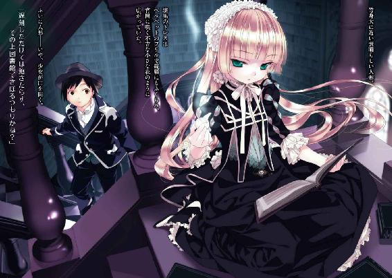

| GOSICKs | |
| 桜庭一樹 | |
| KADOKAWA / 角川書店 (2012) | |


GOSICKs
─ゴシックエス・春来たる死神─
桜庭一樹
角川ビーンズ文庫
本作品の全部または一部を無断で複製、転載、配信、送信したり、ホームページ上に転載することを禁止します。また、本作品の内容を無断で改変、改ざん等を行うことも禁止します。
本作品購入時にご承諾いただいた規約により、有償・無償にかかわらず本作品を第三者に譲渡することはできません。
本作品を示すサムネイルなどのイメージ画像は、再ダウンロード時に予告なく変更される場合があります。
本作品は縦書きでレイアウトされています。
また、ご覧になるリーディングシステムにより、表示の差が認められることがあります。
目次
口絵・本文イラスト／武田日向
本文中驢馬イラスト／中島鮦
ラプンツェルは、十二歳になったときには、お日さまの下でいちばん美しい子どもになりました。魔女はラプンツェルを高い高い塔のなかにとじこめました。その塔には、ドアもなければ階段もなくて、上のほうに小さな窓があるだけでした。魔女はその塔にはいりたいときには、塔の下に立ってこうさけびました。
「ラプンツェル、ラプンツェル！
おまえの髪を、たらしておくれ」
──「ラプンツェル」グリム兄弟
『完訳グリム童話Ⅰ』 ぎょうせい刊
プロローグ
〝それ〟は、一つの小さな体に収まっていた。
だからずいぶんと長い間、あの国の人々は〝それ〟の存在に気づかなかった。
〝それ〟は一人の小さな少女の姿をしていた。
だから誰も気づかなかった。
フリルとレースを豪奢に、夢のように重ねた奥の奥の奥に──
奇怪な闇が眠っていることに。
迷路。
闇の歴史を変える、その第一歩となる、おそろしい頭脳──
それは、ヴィクトリカという名の、小さな少女の中にひっそりと息づいていた。
ヴィクトリカの頭脳は広大にして闇に彩られ奇怪にして複雑な迷路だった。誰もそれを理解するどころか、垣間見ることさえできなかった。だからヴィクトリカはずっと、いわば、領土も臣民ももたぬ独りぼっちの国王だった。広大な土地。膨大な知識と、〝知恵の泉〟。ヴィクトリカは常に退屈していた。だから、天までのびる図書館塔に籠もり、書物を読み続けた。ずいぶんと長い間、そこには誰もこなかった。彼女を知るとある女性は、こうつぶやいた。
「退屈っていうのは、きっと、寂しいって意味なの......」
だが──
いまようやっと、一人の家臣がやってこようとしていた。
家臣は黒い髪を持つ、小柄な少年だった。遠い異国で生まれた、見慣れぬ肌の色と、人の良さそうな、しかしどこか頑固そうにも見える顔つきをしていた。名前は久城一弥といった。彼は海を渡り、はるばるとやってきた。そして図書館塔を上り、ようやく......
少女に出会った。
時は、一九二四年──。
欧州の一角。フランスとスイスとイタリアに国境を隣接する、小さいが長く荘厳な歴史を誇る国、ソヴュール。
貴族の避暑地として知られる地中海沿岸をソヴュールの豪奢な玄関とするなら、アルプス山脈の奥は、広大な城に眠る秘密の屋根裏部屋と言えた。その山脈の麓に、貴族の子弟を教育する名門、聖マルグリット学園が建っていた。
学園の図書館塔に籠もる、灰色狼の異名を取る謎の少女ヴィクトリカと、東洋の某国からやってきた留学生、久城一弥。
少女と少年が出会ったのは、この年の、ある、春の日のことである──。
第一章 春やってくる旅人が学園に死をもたらす
１
久城一弥は真面目な少年である。
それだけが取り柄、といっても差し支えがないぐらい、真面目で堅物で、無口で無趣味で、無味無臭な男である。
四人兄妹の末っ子なのだが、ちなみに長兄は武道の達人で、次兄は玄人はだしの発明王、姉は美人でしかも踊りの免状を持っている。
一弥はとくに特徴がない代わりに、いちばん生真面目で、それに、成績がいちばんいい。そこを買われて、また三男で家督を継ぐ必要がないため、万一、異国で不運な事故に遭って帰国できなくても問題ない、と家長である父が判断したために、最近になって同盟国の留学生を受け入れ始めたソヴュール王国の学園へやってきたのである。
父は軍人で、ことあるごとに一弥にこう言う。『帝国軍人の三男として......』と。一弥は自分でも、いつも、へまをしないように気をつけていた。帝国軍人の三男として真面目に行動しなくては、と......。
「......久城くん！ 久城くーん！」
その日。朝の七時ちょっと過ぎのこと。
いつもの一弥なら、男子寮の自分の部屋で目を覚まし、顔を洗って髪を撫でつけて制服に着替えて、カッカッカッ......と足音も堅物らしく響かせ、一階の食堂に降りることになっている。
貴族の子弟たちはみんな、朝のぎりぎりまで眠っている。一弥が狙っている時間には、まだ食堂には誰もいない。おそらく二十歳過ぎぐらいと思われる、赤毛の色っぽい寮母さんが一人、丸椅子に腰掛けて足を組み、くわえ煙草で朝刊を読んでいるのが関の山だ。東洋人で、しかも貴族ではない階級の一弥のことを受け入れる少年は少なく、一弥にはまだ親しい友人もいない。その寂しさを避けるために、わざと時間をずらしているのだ。
しかし、その朝は......。
起きて、顔を洗う途中だった一弥は、扉をガンガン叩く音と、女の人の声に驚いて、制服を着かけた姿のままで扉を開けた。
燃えるような赤毛に、グラマラスな体つきをした、色っぽい寮母さんが眠たそうな顔で立っていた。
「......おはようございます。な、なにか？」
「よかった。久城くんなら起きてると思って。チーズとハム買ってきて！」
「......へ？」
寮母さんは有無を言わさず一弥を部屋から引きずり出すと、制服のポケットになにやらサンドイッチらしきものをぐいぐい突っ込んだ。一弥は目を白黒させて、
「ななな、なんですか？ チーズとハム？ ぼくが？ どこに？......どうして？」
「正しくはリコッタチーズを五百グラムと、ハムを一キロ。久城くんが。村の朝市に。わたしが昨日、買い物するの忘れたから」
寮母さんは一気にまくしたてた。一弥はネクタイをポケットの片方に押し込みながら、
「ど、どうして？」
「食料品店に行くつもりが、途中で友達に会って、ダンスパーティーに誘われたの。それで踊って、葡萄酒飲んで、帰ってきた。手ぶらで。......だから、もう、はやく行ってよ！ みんなに出す朝御飯がないんだってば！ クビになっちゃう！ はーやーくー！」
「ええと、その、どうしてって聞いたのは、どうしてぼくが......」
「早起きだから。あと、気が弱......あわわわ、や、優しい、そう、優しいから！」
階段を引きずり降ろされ、一弥は容赦なく寮の外に蹴り出された。寮母さんはふくよかな、いかにも女性らしいラインの体を揺らして、
「久城くんの朝御飯は、そのサンドイッチね。わたしはパンを切ったりお湯を沸かしたりしてるから、はやく買ってきて！」
「あのっ......！」
ばたん、とドアが閉まった。
一弥は呆然と、寝ぼけ顔でドアを見上げていたが、やがてため息をつき、
「......わかりました」
仕方なく、正門に向かって歩きだした。
一弥は実家にいる頃から、女性に気軽にものを頼まれるたちだった。才能よ、と言ったのは確か姉だったが、一弥はちがうと思う。軍人の息子らしく威風堂々としていれば、頼み事......しかもおつかい......なんてされないはずだ。
正門を抜け、村に向かって砂利道を歩きながら、一弥はため息をついた。
「はぁ......」
無口で堅物で、女性にはことのほか弱気な久城一弥は、誰にも見せたことのない意外な一面を持っていた。それは家族にも友人にもぜったいに秘密なのだが、一弥はじつは、かなりのロマンチストなのだった。
真面目で堅い仮面の陰には、まだ見ぬ〝美形な異性との素敵な出会い〟の想像なども隠れていた。一弥は密かに信じていた。誰だっていつか〝自分の女の子〟に出会うはずなのだと。神さまが引き合わせてくれたような気がするほどぴったりで、気が合って、それにかわいくて......。
......そんなことを考えているなどと父に知られたら、恥ずかしいばかりか、男らしくないぞと往復ビンタを食らいそうだし、兄たちに知られたら三日三晩ぐらい笑われそうで、だからぜったいに、家族にも秘密なのだが。
（だけど、どこかに、ぼくの女の子が......）
いるはずなんだよなぁ、とつぶやいて、村道を急ぎながらもまた、ため息をつく。
（たとえば、朝。そう、こんな朝に......）
一弥は想像し始めた。
（ぼくが歩いていると、急いでやってきたかわいい女の子と正面衝突するとか。「だいじょうぶ？」と聞くと、彼女ははずかしそうに「だいじょうぶ、ありがと」と答える。目があったとたん、女の子はぼくに恋をして......）
そこまで考えて、一弥はふと我に返り、らしくなくちょっとベタな想像を巡らせていた自分のことを、肩をすくめて笑った。
（......なーんて、現実にはあり得ないよ。それより、チーズとハムだ。急いで買って、学園に戻らなくちゃ。留学して半年、遅刻なんて一度もしてないんだ。帝国軍人の三男はけして遅刻なんてしないんだ。だから急いで......）
目の端をなにかが横切っていった。通行人だろう。こんな朝早くに、寂れた村道を人が通るなんてめずらしいが......。
（でも......その〝ぼくの女の子〟は......）
一弥は急ぎながらも、なぜかまた想像の世界に戻っていった。
（できたら金髪がいいな。だって金色はとてもきれいな色だもの。ぼくの国にはない、眩しい髪の色......）
そのとき......
きゅるるるる......！ ブレーキ音のような。
妙な音がした。一弥はちょうど、金髪について真剣にあれこれ考えながら、つまり前も見ずに迂闊に角を曲がったところだった。続いて、大きななにかがぶつかったような音がして、その後、しんと静まり返った。一弥は我に返って、
「......えっ？」
葡萄園を仕切る低い石塀に、ドイツ製のぴかぴかのオートバイがめりこんでいた。角を曲がれずにすごいスピードでぶつかってしまったらしい。少しタイミングがずれていたら轢かれるところだったことに気づき、一弥の顔が険しくなった。
黒いヘルメットをかぶった大柄な男がオートバイにまたがったまま、事故に驚いたのか硬直していた。一弥は抗議しようと口を開いたが、あまりにも男が身動きしないので心配になり、
「あの......。だいじょうぶですか？」
返事が返ってこなかった。覗き込むと、ヘルメットの中で男の顔は、目を見開いて瞬きもせず、硬直していた。
一弥が内心、
（かわいい女の子と鉢合わせしたいなぁなんて考えてたのに、オートバイにまたがった大男と鉢合わせか。つまんないなぁ。これ以上悪いことなんて、ないよ）
そう思ってまたため息をついたとき......。
それ以上悪いことが起こった。
なにかが地面に向かって落ち、転がった。
その男の、首だった。
一弥はぎゃあっと悲鳴を上げた。
男の首はヘルメットごとごろごろごろっと転がって、一弥の足元でぴたっと止まった。そして硬直した表情のまま一弥を見上げていた。一弥は思わず首に向かって、
「だいじょうぶですかー!?」
その瞬間......。
噴水の水が流れるような妙な音が響いた。一弥が顔を上げると、取れた首の根元から鮮血が噴きだして、首なし死体とオートバイを真っ赤に染めあげていた。
一弥はまた悲鳴を上げた。
血飛沫の向こうにはきらきらと輝く朝日と、生い茂る葡萄園の緑があった。さわやかな朝だった。
（女の子じゃなくて、首なし死体と鉢合わせ、か......）
一弥は眉をひそめ、いかにも生真面目そうなしかめ面になって、考えた。
（......留学なんて、しなきゃよかった）
一度、大きなため息をついた。そして......。
気絶した。
２
つぎに気づいたとき、一弥は見覚えのない部屋のベッドに寝かされていた。小さくて薄暗くて、薬品棚に囲まれている。一弥は起きあがりながら、窓の外を見た。学園の敷地内の景色が広がっているのに気づいて、おそらくここは保健室だろうと見当をつけた。
そのとき廊下の向こうから、かわいらしいソプラノの声が張り上げられてきた。
「待ってください、警部さん！ そんなの横暴だわ！」
聞き覚えのある声に、一弥は顔を上げた。ほどなく声の主がぱたぱたと足音を立てて近づいてきて、保健室の扉を開けた。
ぴょこり、と小さな頭が現れる。
大きな丸眼鏡に、垂れ目がちのブラウンの瞳。肩までのブルネットヘア。一弥の担任のセシル先生だ。おそらく二十代前半のはずだが、見た目は生徒たちより幼い。どこかぷくぷくした仔犬を思わせる女性だ。
先生は一弥が目を覚ましていることに気づくと笑顔になり、保健室に入ってきた。
「久城くん、気がついたの？ よかった。だいじょうぶ？」
「あ、はい......」
「めずらしく遅刻だったから、心配してたの。寮のほうに連絡したら、寮母さんがもごもごとなにやら言いよどんでて......」
一弥は、チーズとハムのことを思い出した。おかずなしの朝御飯を出してしまって、寮母さんは怒られただろうか......と生真面目に思い悩んだが、その後、あの首なし死体のことを思い出して顔色を青くした。
「そしたら、村道で妙な死体が発見されて、そのそばで倒れてたって連絡があったの。それで、村の人にここまで運んでもらったのよ。久城くん......いったいなにがあったの？」
心配そうに曇る先生の表情に気づいて、一弥はあわてた。説明しようと口を開いたとき、ガラガラガラッ......と大きな音がして、保健室の扉が開いた。
一弥は扉のほうを振り返った。
そして、硬直した。
そこにはおかしな男が立っていた。若い男だ。背がスラリと高く、顔も貴族的に整った二枚目で、服装も仕立てのいいスーツに銀のカフスを輝かせた伊達男だった。だが......。
一か所だけ、ぜったいにおかしいところがあった。
頭だ。
男はきらきらと輝く金髪を、なぜか、前方に向かってドリルの先のように尖らせ、ぐりゅんと流線形に固めていた。一弥はぽかんと口を開けてその金色のドリルを見上げていた。男は壁に片手をついて片足を後方にぴんと伸ばした、バレエダンサーのようなナイスポーズを決めると、一弥を見た。
そして口を開いた。
「待たせたね」
「..................えっ？」
待ってたっけ？ 誰？ などと一弥が悩んでいると、となりでセシル先生が息を呑み、きっと男を睨みつけた。男は構わず、
「わたしがグレヴィール・ド・ブロワ警部だ」
「はぁ......」
「いまから君に事情聴取する」
「あ、わかりました」
なんだ、警察の人か、と一弥がうなずいたとき、ブロワ警部がぱちんと指を鳴らした。すると廊下をばたばた走ってくる音がして、兎革のハンチングをかぶった若い男が二人、やってきた。こちらは警部とちがって、労働者階級らしい気さくな顔立ちで、服装も木綿のチョッキに丈夫なブーツと、村でよくみかけるものだった。彼らはブロワ警部の部下らしかった。
しかし、一弥は二人に引っ張られて保健室を出ようとして......妙なことに気づいた。
二人の若い部下は、なぜかぎゅっと強く強く手をつないでいた。
一弥は一度、目をそらした。
それからもう一度、見た。
......やっぱり手をつないでいた。
不気味そうに二人をみつめる一弥に、なぜか二人はいいわけのように、
「幼なじみでねー」
「はははー」
そろって、白い歯を見せて笑った。一弥はわけがわからなくなって頭を抱えた......。
ブロワ警部と妙な部下二人によって、一弥が連れて行かれたのは、資料室として使われている校舎の一室だった。
そこは薄暗く、気味の悪い部屋だった。薄茶色の地球儀と、インド土産らしいよくわからない巨大な木彫りと、中世からあって、捨てていいのかよくわからないからここに積んであるらしきへんな武器の山。
洋燈は燃えが悪く、絶えずブスブスッ......といやな音を立てていた。
ブロワ警部は一弥をやけにきしむ古い木の椅子に座らせると、自分は頑丈そうな四角い机に尻を乗せ、浅く座った。地球儀を手に取ってくるくると玩びながら、
「久城一弥。歳は十五歳。一九〇九年生まれ。成績はトップクラス。友達はいない」
とつぜん、一弥のデータをしゃべり始めた。最後の〝友達はいない〟のところで、一弥はしゅんとしてうつむいた。
生まれた国にいた頃は、通っていた士官学校に話の合う友人がいたし、近所にも幼なじみの少年たちがいた。でもソヴュールにきてからは、一弥はどうにも貴族の子弟になじめず、東洋人を遠巻きにする空気に苦しんでいた。
そんなことを思い悩む一弥には構わず、ブロワ警部はとつぜん「ふははは！」と笑い始めた。
「困ったものだよ。少年犯罪というものには頭を抱える。未来ある若者を絞首台に送るのは気がすすまんが、罪は罪だよ、君」
「......はぁ？」
一弥は我に返った。すごくいやな予感がしてきた。ちらりとドアのほうを見ると、逃がすものかというように、手をつないだ部下二人が足を踏ん張って立っている。
これは、もしや......？
警部は科白とは裏腹の、じつに晴れやかな笑顔で一弥をみつめていた。そしてなぜか片足を上げ、不安定なナイスポーズで体をぐらぐら揺らしながらも、一弥をびしっと指差した。
「久城くん、犯人は君だな！」
一弥は頭を抱えた。必死で反論する。
「ちがいます！ ぼくは通りかかっただけです。そんな強引な。抗議する。ぼくは断固、抗議します。そして入念な捜査とそれによる正確な推理をあなたに要求します。ぼ、ぼくは......」
「ちっ、ちっ、ちっ」
「............」
ブロワ警部はウインクをしながら人差し指を振っていた。なんだか神経に障る態度だった。一弥がいらいらしながらその指を見ていると、警部は恐ろしいことを言った。
「わたしは君の心理になど興味はないのだよ、久城くん。留学先で殺人を犯し、外交問題にまで発展させるような心理には、ね」
「が、外交問題......？」
「殺されたのは、休暇中の政府職員なのだよ」
「ま、まさか......」
一弥は頭を抱えた。顔が真っ青になった。
生まれた国の風景や、優しい母の顔、厳格な父の顔、ソヴュールに向かう船の甲板から目をこらした、港町の鮮やかな朝日......。
すべてが走馬燈のように脳裏をよぎっていった。
「......久城くん、犯人は君以外に考えられないのだよ」
「そ、そんな！ どうして......そんなことが、言えるんですか......？」
「ふはははは！ それはだね......」
ブロワ警部がまた新たなるナイスポーズをつくろうと片足を上げたとき......。
誰かが部屋の扉をノックした。
こんこん、こんこん......！
警部も部下二人も知らんぷりしている。
と、また......。
こんこん、こんこん......！
それでも知らんぷりしていると、強引に扉が開いた。つないだ手で通せんぼしている部下二人の向こうに、セシル先生のかわいらしい小さな顔が見えた。先生は笑顔で、部下二人のつないだ手の下をくぐり抜けると、泣きそうになっている一弥の前に歩いてきて、
「はい、これ」
紙を二枚、差しだした。
思わず一弥は受け取った。それは授業で使われるプリントだった。今日の午前中の授業分だ。一枚には久城一弥の名前が書かれていた。二枚目には......。
べつの少年の名前が書かれていた。
──〝ヴィクトリカ〟と。
セシル先生は有無を言わせぬ感じの笑顔で、一弥を見ていた。一弥が問うようにみつめかえすと、
「あのね、午前中の授業のプリント。一枚は久城くんのよ。もう一枚は、同じく休んでいたべつの生徒のよ」
「はぁ......」
一弥はこの〝ヴィクトリカ〟という名前に聞き覚えがあることに気づいた。教室の窓際に、いつも必ず空席があるのだ。ぽっかり空いた席。留学してから半年のあいだ、一度も、その席の生徒が登校した姿を見ることはなかった。
名前だけは知っていた。ヴィクトリカ、だ。
どうしていつも必ずいないのだろう、と気にはなっていたが......。
セシル先生は笑顔のままで、
「久城くん、はやく教室に戻りなさい。でも、戻る前にヴィクトリカさんのところにプリントを届けてほしいの。お願いしていい？」
「はぁ......」
一弥がうなずくと、ブロワ警部が怒りだした。
「こら、君！ 捜査の邪魔をするな！」
「お言葉ですが、警部さん」
セシル先生は一歩も引かない構えで、振り返った。警部は気迫に押されたように、口を閉じる。
「犯人扱いするおつもりなら、ちゃんと逮捕状を取ってからにしてくださいな。これでは警察権力をかさにきた横暴ですわ。学園を代表して、わたし、抗議いたします！」
警部はつっと目を細めた。
それからゆっくりとうなずいた。自信ありげに、
「ふむ。この状況なら、今日、申請すれば明日には逮捕状が取れることでしょう。明日、またお邪魔しますよ。大切な生徒を守りたい気持ちはわかりますが、勇敢さのために命を落とした者も歴史の陰に多いことをお忘れなく。勇ましい先生......！」
一弥はセシル先生にぐいぐい引っ張られて、その不気味な部屋から廊下に転がり出た。
「先生、あの、ありがとうございま......」
「いいのよ。それより、これ」
セシル先生は一弥にプリントを押しつけた。廊下を歩きながら、
「図書館ね」
「と、図書館......ですか？」
「そう」
セシル先生はうなずいた。
どうやらサボリ魔で劣等生のヴィクトリカは、なぜか図書館にいるということらしかった。だが、どうして教室にこずにそんな場所にいるのだろう？
一弥の脳裏に、教室の窓際の空席と、なぜかその席を恐れるように遠巻きにしているクラスメートたちの姿が蘇った。
どういうことだろう？ なにせ、一度も顔を見たことがないというのは尋常ではない。
セシル先生は楽しそうに笑って、言った。
「図書館塔のいちばん上よ。あの子、高いところが好きだから」
「そう、ですか......」
一弥はうつむいた。
......このとき一弥は、なぜか少し傷ついた気がしたのだった。一生懸命に授業に出て、予習も復習もして、この国の公用語であるフランス語や、文献を読み解くためのラテン語なども必死で勉強している優等生の自分を誉めずに、サボリ魔の劣等生のことを笑顔で話すなんて、ちょっとだけ先生に裏切られたような気がした。
ついさっきおかしな警部に恐怖のどん底に突き落とされた反動もあってか、一弥にしてはめずらしく、不機嫌そうに返事をした。
「なんとかと煙は高いところが好きって、ぼくの国のことわざにありますよ」
「もぅっ、久城くんたら。そんなことないわ」
セシル先生は挑発に乗る様子もなく、代わりに、実におかしそうにくすくす笑った。
それから、なぜか夢見るように言った。
「あの子はね、天才なのよ......！」
３
果たして、東洋の島国からやってきた成績優秀な秀才少年をさしおいて、担任から天才呼ばわりされるサボリ魔とは、何者であるのか......？
一弥はそんなことを考えながら学園の砂利道を歩いていた。
ふくれっ面のままだが、元来の生真面目な性格で、頼まれたプリントをちゃんと届けようと図書館に向かっていた。学園の敷地はフランス風庭園を模した豪奢な造りで、あちこちに噴水や花壇や小川が造られ、その合間には心地いい芝生が広がっている。一弥はその芝生の合間の白い砂利道を歩いていた。
校舎裏にのっそり建つ建物にたどり着く。
──聖マルグリット大図書館。
角筒形の図書館の壁一面が巨大書棚になっている。中央は吹き抜けのホールで、遥か上の天井には荘厳な宗教画が描かれている。書棚と書棚を、まるで巨大迷路のように細い木階段が危なっかしくつないでいる。
十七世紀初頭、学園の創立者である国王が、いちばん上の秘密部屋で愛人と逢い引きに耽るため、わざと迷路状に建設したのだという伝説のある大図書館。
だがいまは静寂に包まれ、埃とカビと、知性の匂いが濃密に漂っている。
一弥は敬虔な気持ちで上を見上げた。と......
天井辺りから、金色の帯みたいなものが垂れさがっているのが見えた。
（......なんだろう？）
首をかしげ、迷路階段を上がり始める。
......壁から壁へ。カクカクと、少しずつ天井に近づいていく。まるで綱渡りだ。下を見ないように、震えながら細い階段を上がる。
......だんだん疲れてきた。こんなところでさぼっている劣等生のために、なんでぼくが......と腹立ちながら上がっていくうち、いつのまにか、垂れさがる金色の帯のすぐ近くまできていた。
白く細い煙が、天井に上がっていく。
一弥はおそるおそる足を進めた。
そこに──植物園があった。
図書館のいちばん上は、なぜか緑茂る温室だった。天窓から柔らかな光が射し込み、風に緑が揺れている。国王の逢い引きの伝説とは裏腹に、明るい無人の部屋だった。
温室から階段の踊り場へ体を投げ出すように、大きなビスクドールが置かれていた。
等身大に近い身長百四十センチぐらいの、素晴らしい人形。漆黒のドレスはたっぷりのフリルで幾層にもふくらみ、宵闇に咲く不吉な小さな花のように、腰から裾にかけて広がっていた。リボンレースと薔薇の飾りをあしらった、白いヘッドドレスの下から、長い見事な金髪が、まるでほどけたビロードのターバンのように床まで流れ落ちていた。
その横顔は冷たい美貌。大人なのか子供なのか判断しづらい造りの顔だ。
その、踊り場に打ち捨てられた高価な人形は、無表情で、けだるげに、陶製のパイプをくゆらしていた。
──人形がパイプを!?
と、ふいに人形......いや、少女が、ゆっくりと口を開いた。
「遅刻しただけでは飽きたらず、その上図書館でさぼるつもりかね？ もちろん勝手にしていいが、せめてもわたしの邪魔にならないよう、あっちへいきたまえ」
少女はまたゆっくりと口を閉じた。
とつぜん響いた老人のようなしわがれ声に、一弥は息を呑んだ。その容姿と、声は、驚くほどにアンバランスだった。この世に生まれ落ちてからほんの数年しか経っていないのではないかと思わせるほど小さく華奢な体は、夢のように美しいフリルとレースに包まれているというのに、声は、まるで何十年の時を経たかのように老成している......。
呆然と自分をみつめている一弥には構わず、その、人形と見まちがえるほど冷たい完成美をもつ少女は、それきり黙ってパイプをくゆらしていた。
一弥はようやく少し気を取り直して、
「えっ......もしかして、君がヴィクトリカなのかい？」
返事はなかった。一弥はおそるおそる続けた。
「だとしたら、その、君にプリントを持ってきたんだけどね......」
少女──ヴィクトリカが黙って手を差しだした。
一弥は数歩、近づいて、プリントを差しだした。静謐なその場所に、意外なほど大きく自分の足音が響き、一弥は思わずたじろいだ。自分が静かなるこの楽園の無粋な闖入者のように思え、知らず顔を赤らめる。
それから一弥は、そっと彼女を観察した。
（......この劣等生、女だったのか。それにしてもすばらしい美少女じゃないか。最初は人形に見えてしまったくらいだ。だけど......どことなく、いや、ものすごく、へんな子だ）
と、片手を伸ばしてプリントを受け取り、またぷかりぷかりとパイプをくゆらせていたその奇妙な少女が、ふいに......。
小さなさくらんぼ色の口を開いた。
「ところで、君はいったい誰だね？」
「えっ」
一弥はたじろいだ。なぜか少し赤くなって、
「ぼくは......久城だ。君と同じクラスのね。一度も会ったことないけど」
「東洋人か」
少女はなぜかニヤリと笑った。悪魔的で、冷たい表情の変化だった。なぜかぞっとする。
続けて少女は、しわがれ声で楽しそうにつぶやいた。
「なるほど。では君が〈春来たる死神〉なのだな」
「......は？」
一弥は聞き返した。聞き覚えのない妙な言葉だった。少女はにやにやして、
「君、知らなかったのかね？ このカビくさい迷信だらけの学園にまつわる、くだらない怪談の一つだよ。〈春やってくる旅人が学園に死をもたらす〉。ここの生徒たちはなぜか怪談が大好きでね。君は格好の怪談の材料なのだ。だが、内心恐れているために誰も君に近づこうとしないのだよ」
「な、なっ......？」
一弥は言葉をなくしてそこに立ち尽くした。
......心にぽっかり穴が開いたような気がした。
脳裏に、一人きりで教室にいる自分、遠巻きにしてこそこそなにか話している貴族の子弟たち、話しかけたら逃げるように去っていった近くの席の少年──さまざまな情景が思い出された。
留学してから半年、どうして誰とも親密になれないんだろうと悩んでいたら、まさかそんな迷信のせいだったとは......。
一弥はムキになり、
「だ、だけど、君、それはおかしいよ。ぼくが留学してきたのは半年前なんだからね。季節は秋だ。ほら、おかしいだろう？」
少女の横顔がせせら笑った。
「ふむ、そうだったか？」
「そうだよ」
「まぁ、どちらにしろ生徒たちには関係ないのだろうよ、君。黒髪の無口な東洋人は、死神のイメージにぴったりだからなぁ」
呆然と立ち尽くす一弥を、少女はチラリとも見ようとせず、相変わらず冷たい横顔だけを晒していた。
一弥はしばらくその横顔を睨みつけていた。冷酷で、取り澄まして、拒絶の浮かぶ横顔だった。ソヴュールにきてからいやというほど見続けた横顔。貴族特有のお高くとまった態度だ。
一弥は急に、彼女に対して緊張と反発を感じた。自分が苦労している貴族社会に対する気持ちが、むくむくと胸にわき上がってきたのだ。
一弥はきびすを返し、迷路階段を降りようとした。
数歩、進んで......ふと気づいた。
くるっと振り返り、小声で少女に聞く。
「あのさ、君......ええと、ヴィクトリカ」
「......なんだね？」
面倒くさそうな声が返ってきた。一弥はめげずに、
「君、どうしてぼくが遅刻したことを知ってたんだい？」
少女はせせら笑った。
「ふっ。君、そんなことはかんたんだ。湧きでる〝知恵の泉〟が教えてくれたのだよ」
「どういうことだよ......？」
「それはだね」
ヴィクトリカは得意げに、しわがれ声を張り上げた。
「久城、君は几帳面でくそ真面目な、つまらない男と推測されるよ」
「ほ、ほっとけよ！」
「それなのに、制服のネクタイはどうしたのだね？ きっちり結ぶはずのそれが、ポケットに押し込まれているのがチラリと見えたのだ。それで、おおかた、あわてて寮を飛び出したのだろうと推理したのだよ」
一弥は思わず自分の首に手を伸ばした。確かに、きっちり結んでいるはずのネクタイが今日はなかった。ポケットに押し込んだまま結ぶひまがなかったのだ。
ヴィクトリカは続けて、
「それから、その匂いだよ。君」
「えっ？ なにか匂う？」
「ああ、香ばしいパンの匂いがね。どうしてランチにはまだ早い時間にパンなど持ち歩いているのかね？ つまり、反対側のポケットに......」
一弥は反対側のポケットに手を入れてみた。
寮を出るときに寮母さんに押し込まれたサンドイッチが入っていた。だいぶひしゃげていたが、なかなかおいしそうだ。
「食べるはずだった朝食が入っている。ゆえに、君が遅刻したことがわかるのだよ。以上だ。わかったかね？」
ヴィクトリカは話すのに飽きてきたのか、ふわぁ～と退屈そうに欠伸をした。仔猫が伸びをするような動きだった。小さな体が意外なほどよく伸びた。目尻にちょっとだけ涙が浮かんでいる。それからヴィクトリカはまた、けだるげにパイプをくゆらし始めた。
だが、不思議そうに、得体のしれないものを見るように自分をうかがっている一弥に気づくと、彼女は肩をすくめ、仕方なさそうにまたしゃべりだした。
「ええい、面倒だが......詳しく説明してやるとだね」
「うんうん......」
「五感を研ぎ澄ますのだ」
「......はぁ？」
「そして、この世の混沌から受けとった欠片たちを、わたしのこの〝知恵の泉〟が退屈しのぎに玩ぶのだよ」
「混沌......？ 欠片？ 知恵の泉......？」
「そうだ。再構成する、とでも言ったほうがわかりやすいかね？」
「......再構成？」
「時には、ついでにだが、君のような凡人にも理解できるよう、それを言語化してやることもある」
「............」
「あぁ、面倒な説明をしてしまった。さて......わかったかね、君？」
一弥はまったくわからず、黙り込んだ。
......ちょっとむっとしていた。
（なんだろ、この態度。なにを言ってるのかよくわからないし......。そりゃ、確かに彼女の推理は正しかった。〝知恵の泉〟とやらも、悔しいけど、なかなか冴えていると言わざるを得ないよ。だけど、さっきから......）
一弥は次第に悔しくなってきた。人を見下したような超然とした少女の態度に、我慢ならなくなってきたのだ。それに彼女は、授業にも出てこない劣等生ではないか。
一弥はむきになって反論し始めた。
「だけど、そういう君はなんなんだい？ 君だって遅刻して、こんなところでさぼっているんだろう？ それがぼくをばかにするなんて。これはまったく公平じゃないよ」
「......フン」
ヴィクトリカは鼻でせせら笑った。
「わたしはちがうよ、君」
「なにがちがうんだよ？」
「遅刻ではない。わたしは朝からずっとここにいたのだ」
一弥は顔をしかめた。
「なんだよ、それ。君、ここでずっと、一人で、いったいなにをしてたんだい？」
「思索、さ」
一弥は階段を一歩上がった。
ヴィクトリカがペタリと座りこんだ植物園の床一面に広がっている異様な光景に、このときようやく、一弥は気づいた。
そこには書物が何冊も何冊も開かれて放射線状に置かれていた。ラテン語、高等数学、古典文学、生物学......。どれもおそろしく難解な書物だった。一弥は息を呑んだ。
（この子、まさか......。この書物を、何冊も同時に読み進めてるのか......？ さっきからずっと、そういえばパイプをくゆらしてぼくと話しながらも、ときどき手を伸ばしていた。きっとページをめくってたんだ。ずっと、これを読みながら、ぼくの行動を推理したりもしてたんだ......！）
一弥はふいに、ぞっと背筋に寒気を感じた。
セシル先生の甘い声が、蘇る。
（あの子はね、天才なのよ......！）
じつに退屈でつまらなさそうに、難解な書物を読み飛ばす少女の横顔を、一弥はしばらく呆然とみつめていた。
なぜかだんだん、意地になってきた。このツンと取り澄ました、頭脳明晰らしい、だが奇怪な少女を、ちょっとは驚かせてやりたいと思えてきたのだ。
「でも、君。ぼくの遅刻の原因までは、さすがにわからないだろう？」
「............？」
一瞬置いて。
ヴィクトリカが、初めて、顔を上げた。
──一弥の心臓が止まりそうになった。
大きな瞳が、エメラルドグリーンに輝いて一弥をみつめていた。それはまるで、秘密の宝石のように、誰もいない植物園の隅でキラキラと不思議な光を放っていた。長くて鮮やかな、少女のきらめく金髪とのコントラストが一弥の胸を打った。
そして、もの悲しげな、長く生きすぎた老人のような色が浮かぶ、不可思議なその表情。
（かわいい......！）
予想外に心を揺さぶられて、一弥はなぜかよけい腹が立ってきた。
気を取り直し、大きく息を吸って、宣言する。
「じつは、殺人事件のせいなんだよ」
......ポロリ。
ヴィクトリカの口からパイプが落ちた。
豪奢なフリルのスカートの上に落ちたので、一弥はあわててそれを拾った。灰がこぼれていないか点検してフリルのスカートをはらってやる。拾ったパイプを、ヴィクトリカが、ここに差せというように半開きにして突きだした薄い唇に、そっと差してやる。生来の甲斐甲斐しさでもって世話を焼きまくる一弥をヴィクトリカはしばらくうさんくさそうに眺めていたが、やがて......。
片手を伸ばしてパイプをつかみ、口から離して、言った。
「............へー」
一弥は顔をしかめた。いつのまにか気安くヴィクトリカのとなりに腰を下ろして、文句を言う。
「って、それだけかい!?」
「......さすが死神、とでも言えばいいのかね」
「............」
憮然としていた一弥は、しばらくすると気を取り直し、話しだした。
「あのねぇ、君！ 言っておくけど、今朝、ぼくはすごく大変だったんだよ。殺人事件の目撃者になるわ、おかしなヘアスタイルの警部に犯人扱いされるわ！」
「む？ おかしなヘアスタイルの警部......？」
ヴィクトリカが妙な顔をした。だが興奮し始めた一弥はそれには気づかず、
「......もしかしたら、ぼく、本当に殺人犯として裁かれてしまうのかもしれない。こんな異国で絞首刑なんていやだ。いや、それとも国に強制送還されるのかな......？ あぁ、この半年、ひたすら真面目に学業に励んでたのに......あぁ、なんでこんなことになったんだ。困ったな」
「......おかしなヘアスタイルの警部、と言ったかね？」
一弥は顔を上げた。不思議そうにうなずいて、
「言ったけど......？」
ヴィクトリカはまた、悪魔的な笑みを浮かべた。にやにやしながら、パイプから思い切り煙を吸いこみ、ふぅっと吐いた。
白い煙が天窓に上がっていく。
それから、一転して興味を持ったように一弥に向き直り、
「話してみたまえ。混沌を再構成してやる」
「は？」
ヴィクトリカは苛立ったように早口で言った。
「わたしのこの〝知恵の泉〟を、君のために使ってやると言っているのだ」
「......どうして？」
急ににやにやし始めたヴィクトリカに一弥は戸惑い、うさんくさそうにこの小さな美しい少女を横目で見た。
と、問われたヴィクトリカは悪びれず、きっぱりと言った。
「退屈しのぎだよ、君」
──一弥は有無を言わさず、彼女に事件のあらましを説明させられてしまった。さっきまでの興奮はどこへやら、一弥はしょんぼりとうなだれていた。というのもヴィクトリカが、
「君が見たものだけじゃなく、そのとき考えたことを、お尻の穴まで正直に詳しく話したまえ」
「や、やだよ。考えたことを全部話すなんて。紳士にはお茶目な秘密が一つや二つは......」
「君が紳士ならわたしは神かね？ くだらない無駄なしょうもない反抗はいますぐやめたまえ。ほら、さぁ、話せ！」
......おそろしい毒舌に、女性からこんな居丈高に話されたことのない一弥は驚き、思考が硬直し、抵抗できなくなってしまった。一弥の生まれた国では、女性はもっとおとなしく、控えめなものだったのだ。
そういうわけで一弥は、誰にも洩らしたことのない〝ぼくの女の子〟だの〝素敵な出会い〟の夢想の辺りから、事細かに話してしまった。もちろん、そんな夢想を人に知られたのは十五年間で初めてのことだ。一弥は落ち込んだ。国で父がよく使っていた表現を借りるなら〝尻子玉を抜かれた〟ような心持ちになり、膝を抱えてうなだれていた。
「......なるほど。わかったよ、君」
尻子玉をなくした一弥の様子には気づく気配もなく、ヴィクトリカはパイプをくゆらしながら、いかにも満足そうにうなずいた。
そして、話させておいてひどいことを言った。
「そのおかしなヘアスタイルの警部の言うことも、もっともだな」
一弥はハッと我に返った。尻子玉が少し戻ってきた。
「君、なんてこと言うんだよ!? ぼくは断じて......」
「黙れ」
「......はい」
「君、考えてもみたまえよ。走っているオートバイに飛び乗って首を切り落とすなどということはまず、不可能だ。犯行後、すばやく飛び降りることもだ。なぜなら、君が塀にぶつかったオートバイと遭遇したとき、現場には君のほかには誰もいなかったのだからね」
一弥はうなずいた。
「うん、その通りだよ。確かに誰もいなかった」
「となると、犯行が可能なのはいつだね？」
「えっと......」
「オートバイが停まった後だろう、君。そして、そのときそこにいたのは、久城、君だけなのだ。つまり......」
一弥はまたいやな予感がした。あの不気味な、地球儀やら中世の武器やらの部屋でブロワ警部に指差されたときのことを思い出した。
と、ヴィクトリカはあのときのブロワ警部のように、パイプで一弥を指して、言った。
「君が犯人だ」
思わず泣きそうな顔になって黙り込む一弥をじろじろ見ると、悪魔的な微笑を浮かべて、
「......と、おもしろいんだがなぁ！」
「からかってるのかい！」
立ち上がって怒りだした一弥に、ヴィクトリカは急に真面目な顔になった。一弥を見上げてしわがれ声で、
「しかしだね、君。警部が君を殺人犯と疑っているのも、おそらく同じ考えからだと推測されるよ。つまり、早晩、真犯人をみつけて疑いを晴らさなければ、君はよくて強制送還、最悪の場合、この国で絞首刑になるということだ。恐ろしいなぁ、君」
一弥は真っ青になった。座り込んで頭を抱える。
またもや、父や母を始め、国に残してきた家族や友人の顔が、故郷の景色などが脳裏をすごい勢いで駆けめぐり始めた。
ヴィクトリカはその様子をちらちらと眺めていた。それからなにごともなかったかのように書物に向き直り、ページをめくり始めた。
それから、欠伸混じりに、
「まぁ、わたしには真相がわかっているがね」
と小声でつぶやき、パイプをぷかぷかと吸い始めた。
植物園には、天窓から春の陽が射し込んで暖かかった。さわやかな風が時折吹き込んで、棕櫚の葉や赤い大きな花、そしてヴィクトリカの金色の髪を揺らしていく。
数秒が経過した。
一弥が、ゆっくりと顔を上げた。
ヴィクトリカに聞き返す。
「......いま、君、真相がわかってるって言った？」
ヴィクトリカは返事をしない。一弥が覗き込むと、もう彼のことなど忘れたように読書に没頭していた。すごいスピードでページをめくっていく。
「ねぇ、君」
「......ん？」
ヴィクトリカが顔を上げた。我に返って、余り興味なさそうにだが、うなずく。
「あぁ、もちろんわかっているとも。わたしの辞書に〝わからない〟という言葉はないのだよ。わたしにはなんだってわかるのだ。......それがどうかしたのかね？」
一弥は地団駄を踏んだ。
「どうかしたって......じゃ、ぼくに教えてよ！」
「ん......？」
ヴィクトリカは戸惑ったような顔をして、
「どうしてだね？」
心底、不思議そうに聞き返した。
──それから数十分間、一弥は涙あり怒りあり、あらゆる言葉を駆使してヴィクトリカの説得を試みた。
ヴィクトリカはそのあいだずっと、冷酷にも知らんぷりして読書に励んでいたが、やがて根負けしたように顔を上げて、言った。
「君、ところでだね」
「うん、うんうん」
「わたしの最大の敵は、退屈というやつなのだ」
「............は？」
一弥はきょとんとして聞き返した。ヴィクトリカはなぜか得意そうに、
「食事においてもそれは同様なのだ。平々凡々としたものを食らうのなら、いっそ空腹のまま過ごすほうがましというものだよ、君。それこそ知性というものの存在理由ではないかね？」
「はぁ............？」
勘の鈍い一弥に業を煮やし、ヴィクトリカはずずいっと顔を寄せてきて、
「君の生まれ育った異国の食べ物をだね、明日持ってきたまえ」
「どうして？ 推理の役にたつのかい？」
「たつわけないだろう。食べ物だぞ？」
ヴィクトリカは鼻でせせら笑った。
「つまり、こういうことだ。君が持ってきた食べ物がめずらしく、美味で、わたしのお気に召したら、もしかすると久城、君を助けてやる気になるかもしれない」
「はぁぁ!?」
一弥は叫んだ。呆然として、切れ切れに、
「君には、その、善意ってものはないの!?」
「善意？」
ヴィクトリカは小馬鹿にしたように聞き返した。そして、
「なんだ、それは。そんなもの、知性の墓場だ」
鼻で笑うと、あっちへ行けというように、小さな手のひらで一弥をしっしと追いやった。
一弥は呆然として、とぼとぼと図書館から出てきた。乳鋲を打った革張りの扉が、背後でぱたんと音を立てて閉まった。
芝生に立ち尽くしてぼんやりしていると、砂利道の向こうから、兎革のハンチングをかぶった男二人がスキップして近づいてきた。例のグレヴィール・ド・ブロワ警部の部下二人だ。やっぱり男同士で手をつないでいた。二人は一弥の前を一度通り過ぎたが、気になったようで器用に後ろ向きのスキップで近づいてきた。
「久城くんー。もしかして、元気ないー？」
「はい、元気ないです」
一弥はきっぱり言った。部下二人は顔を見合わせ、なぜか「あははー」と笑った。
「あの......ぼく、ほんとに捕まるんでしょうか？」
「うんー。明日にはねー」
とてもさわやかに、きっぱりと言われた。一弥は頭を抱えた。
「だって、君以外に怪しいやつはいないだろー」
「それに、ぼくらはブロワ警部には逆らえないしねー」
「......それって、どういうことですか？」
二人は顔を見合わせた。
「うん......。じつは、あの人は警察学校を出ていないんだよー。どこかの貴族のご子息でねー。なにやら警察の仕事をしたがってるっていうんで、村の警察署で警部職を与えたんだー」
「だから、ぼくらがお目付役でついてるけど、ときどき強引でねー」
「困ったもんだー。貴族の道楽さー」
一弥が驚いていると、二人はさらに、
「だけどさー、あの人、意外とスパッと犯人を当てることがあるんだよなー。最初は妙なことを言ってるんだけど、一晩経ったら別人みたいに冴えてるんだよねー」
「そうそう。もしかして、天才肌ってやつかねー」
「はははー」
二人は朗らかに笑うと、またスキップしてどこかに去っていった。一弥はぽかんと口を開けてそれを見送っていたが、自分がたいへんなことになっていることを改めて自覚し、ため息をついた。
（ああ、もぅ、貴族も天才肌も、くそくらえだ......！）
不機嫌に歩きだす。
日が少し陰って、肌寒くなってきた。風も冷たく感じられた。寮に戻る道はとても静かで、まるでこの学園には自分のほかに誰もいないように感じられた。
ともあれ寮に戻って、家族が国から送ってきた箱をひっくり返さなくてはいけないのだ。そして、あの奇妙なお姫さまのお気に召す食べ物をみつけなくては......。
４
翌朝は、昨日の上天気が信じられないほど、不吉な灰色の雲ばかりが空を覆い尽くしていた。
朝の七時過ぎ、男子寮の一弥の部屋を、誰かがノックした。顔を洗い、髪を撫でつけた一弥がネクタイを結びながら扉を開けると、心配そうな顔をした寮母さんが赤毛を左右に揺らしていた。
「久城くん......！ 昨日、たいへんだったんだって!? ごめんね、おねえさんがへんなこと頼んだから......」
「いえ。それより、朝御飯は大丈夫でしたか......？」
「......怒られたー」
寮母さんはうなだれた。
その口の前に、一弥がなにかを差しだした。見たこともないピンクやオレンジや黄色の小さな玉がたくさん入った袋だった。寮母さんはくんくんと匂いを嗅いで、
「......なに、これ？」
「お菓子なんですけど、どう、思いますか......？」
「どうって......おいしそうに見えるけど？」
「よかった。じゃ、これにしよう」
一弥はほっとしたようにうなずいた。
扉が閉まる前に、寮母さんは部屋の中をチラリと見て、不思議そうな顔をした。いつもきっちり整理整頓されているはずの優等生、一弥の部屋が、引っ張りだしたらしい荷物の山で散らかっていた。
（久城くん、いったいなにをしてたのかしら......？）
首をかしげながらも、寮母さんは歩きだした。
一弥はお菓子を入れた袋を大事そうに抱えて登校した。昨夜から、国の家族が送ってきた荷物をひっくり返して探したあげくに、一弥なりに、女の子が気に入りそうなお菓子をようやくみつけたのだ。曇り空の中を、コの字形をした荘厳な校舎に向かって歩く。教室に入ると、いつものように貴族の子弟たちが一弥を遠巻きにし、ちらちらと眺めたり目をそらしたりしていた。
一弥は気にせずに、窓際の空席をみつめた。ヴィクトリカの席は......今日もまた、主が登校した気配はなかった。
（やっぱり、教室にはいないのか......。しょうがないな。昼休みに図書館に行ってみよう）
一弥がそう考えて、一人でうなずいたとき......。
廊下を、言い争うような大人の男女の声が近づいてきた。
「横暴ですわっ！」
「はっはっはー、今日はちゃんと逮捕令状を取ってきましたよ！ 留学生の政治的殺人！ 外交問題に発展することでしょうがね！」
一弥はあわてて立ち上がった。思ったより早く、ブロワ警部がやってきてしまったらしい。しかも、本当に逮捕状を持って......。
お菓子の袋を抱えたまま、一弥は教室の窓を開けた。ざわめく生徒たちに構わず、二階の窓から目をつぶって飛び降りた。真面目で堅物な一弥は、もちろん、ドア以外の出口から教室を出たのは生まれて初めてだった。
かなり動揺しながら、中庭の芝生の上にもんどりうって着地した。
（いってぇ......！）
内心の動揺に追い打ちをかけるように、頭上から、教室のざわめきが聞こえてきた。「あ」「死神が逃げた」などと言い合っている。一弥はむっとして教室の窓を睨んだ。
（......くそぅ、ほんとに陰で〝死神〟って呼ばれてたのか！）
──一弥は這々の体で大図書館に逃げこみ、迷路階段を必死で駆け上がった。
カクカクと上へ上へ続く迷路階段。遥か上の天井から荘厳な宗教画が一弥を見下ろしていた。そして今日も、手すりのあいだから金色の帯のようなものが垂れさがってきていた。密かな風によって時折、ゆらゆらと誘うように揺れている......。
「......ヴィクトリカっ！」
一弥が植物園にたどり着くと、ヴィクトリカは昨日とまったく同じ様子で、植物に囲まれ、放射状に広げた書物を退屈そうに読み飛ばしていた。
一弥がはーはーと息をしながら近づいてくると、興味なさそうに顔を上げ、
「......なんだ、君、またきたのか」
そうつぶやき、けだるげにパイプをくゆらした。
「久城、さては君、友達がいなくて寂しいのだろう？」
「......洒落にならないこと言うなよ」
一弥は少女の暴言にいきなりめげて、その場に座りこんだ。それから、
「それより、ほら、昨日の。あれだよ、あれ！」
「......なんだっけ」
「推理だよ！ 殺人事件の真相！」
ヴィクトリカは顔を上げた。ポカンとして一弥をみつめていたが、ようやく思い出したらしく、あぁ、とうなずいた。
それから、小さな手をずいっと差しだした。
一弥はため息をついて、お菓子の袋をその手のひらに置いた。ヴィクトリカは意外なほどうれしそうに袋を開け、
「......もぐもぐ。これはなんだ？」
「雛あられっていうんだ」
「珍しい味だな。もぐもぐ......」
「............」
「もぐもぐ......」
「............」
「もぐ......」
「..................あ、あのさぁ」
ヴィクトリカは小動物のごとくかわいらしい仕草で、異国の食べ物をポリポリ食べ続けていた。めずらしい味や形に大いに興味を持ったらしく、夢中になって、小さな手でつかんでは口に入れ、咀嚼を繰り返している。
一弥はじりじりして、ヴィクトリカが自分のことを思い出してくれるのを待っていた。
次第に、不安になってきた。
（ぼく、この子のことをすっかり当てにしてたけど......。考えてみたら、この子が何者なのか、本当に事件の真相がわかっているのか、なにも知らないんだ。もしかして、お菓子がほしいから適当なことを言っただけだったら、どうしよう。ぼくにはもう逮捕状まで出てるっていうのに......）
遥か下のホールに、誰かが入ってくる足音が響いた。なにげなく階段の手すり越しに見下ろした一弥は、跳び上がった。
金色の尖った頭が見えた。ブロワ警部だ。彼のほうも一弥の姿を確認すると、急いでホールの奥に向かった。教職員だけが使用を許可されている油圧式エレベーターがあるのだ。
ガタ、ガタ、ガタッ──！
無骨な音を立て、鉄の檻がどんどん上がってくる。
一弥は泣きそうになった。思わず叫ぶ。
「外交問題になる！」
もぐ、も、ぐ......。
ヴィクトリカが雛あられを食べる手を止め、顔を上げた。一弥は震えながら叫んでいた。
「父さんに殺される！ いや、その前に絞首刑になって死ぬんだ！ そう、ぼくは異国の地で死ぬ！ そんなのいやだけど！」
ヴィクトリカはぽかんと口を開けて、しばらくのあいだあきれたように一弥をみつめていた。それから悪魔的な微笑を浮かべると、つぶやいた。
「......死神が泣いてる」
一弥は振り向いた。
「あ、あのねぇ！」
「......冗談だ」
「冗談だって!? 人の生死がかかってるときに、冗談!? 君、言っていいことと悪いことが......どうして笑ってるんだよ！ 笑うなよ！ 君ねぇ......」
一弥が生真面目に抗議すればするほど、ヴィクトリカはうれしそうににやにやした。それからじつに楽しそうに、
「......まぁ、落ち着きたまえよ、君」
「落ち着く？ いまのこの状況で、落ち着く？ 落ち着いてなんになるのさ？ ぼくはむしろ走り出したいよ。わめきながらどこまでも走るんだ。うー！ ううー！」
呻くたびに、一弥の顔が真っ赤になった。
鉄の檻が上がってくる音が、響く。
ヴィクトリカは笑うのをやめ、あきれたように、
「うるさいなぁ。仕方ない。いま説明してやるよ、君」
「はやく！ はやく！」
一弥は地団駄を踏む。ヴィクトリカはのんびりとパイプをくゆらしながら、
「いいかね？ オートバイを飛ばす人間の首を切るのにだね、なにもそれに乗ったり、近づく必要はないのだよ」
「どうしてだよ？ うー！」
「なにせ、相手のほうでスピードを出してくれているからだよ、君」
「うー！ うー！............ん、どういうこと？」
一弥の顔に冷静さが戻ってきた。生来の優等生らしさが顔を出し、ヴィクトリカの説明を理解しようとその場に背筋を伸ばして座る。
ヴィクトリカは、その細っこい両腕を左右に伸ばしながら、
「君、こういうワイヤーかなにかをだね、オートバイの通り道に張っておいたとしたら、どうだね？ 相手が必ず通る、そしてその時間は人通りのない道にだ。オートバイがスピードを出して通り過ぎ、そのワイヤーで首が切れる。犯人は、ワイヤーを片づけて逃げればいいというわけだ」
一弥は呆然とした表情になり、ヴィクトリカをじっとみつめた。
額の汗を拭き、深呼吸して、
「そ、そうか......」
「うむ」
「だけどさ、ヴィクトリカ。あの、証拠は......」
ヴィクトリカは落ち着いてまたパイプをくゆらした。
「おそらく、朝早くには誰も通らないはずの道を君が歩いてきて、悲鳴を上げたせいで、犯人は現場から逃げざるをえなかった......可能性もなきにしもあらずだよ、君。もしかすると犯人は、ワイヤーを回収、せず、に......」
ギギーッ──！
鉄の檻が上がりきり、不吉な沈黙の後、ガタンと大きな音を立てて、止まった。
鉄扉が開く。
生い茂る緑の向こうに、奇妙な流線形に固めたヘアスタイルの警部がナイスポーズを決めて立っていた。
しかしそのブロワ警部は、植物園で一弥と対峙しているヴィクトリカをみつけると、意外そうに瞳を見開いた。
（あれっ......？）
一弥は警部の表情の変化に気づいた。
（もしかして、ヴィクトリカとは知り合いなのかな......？）
ヴィクトリカのほうを見ると、彼女は知らんぷりして警部から目をそらし、書物に顔を突っ込むように読書に励んでいた。
（ん......？）
やがて警部は、気を取り直したように一弥に目を向けた。
手に、血まみれのワイヤーの束を握りしめている。一弥に向かってそれを差しだしながら、片足を上げて叫ぶ。
「はっはっは、これが証拠だ！」
静かな植物園に、ブロワ警部の叫び声が響き渡った。
「現場近くで発見された！ 街路樹にきっちり巻かれていたのだ。うーん......なんだかわからんが、おまえの仕業だな！ 逮捕する、国際殺人犯！」
一弥は破顔した。
思わず余裕の笑みを浮かべ、ヴィクトリカを振り返って、
「説明してあげてよ、ヴィクトリカ。この警部さんに、君の推理をさ」
......返事がない。
振り返ると、ヴィクトリカは口いっぱいに雛あられを詰めこんで咀嚼しながらこちらを見ていた。やだよ、というように肩をすくめ、書物に視線を戻す。
「え、あの......ヴィクトリカ？」
ブロワ警部がじりじり近づいてくる。
一弥は震えながら、叫んだ。
「ちがうんです！ 聞いて、警部さん！」
──一弥が自力で、ワイヤーの推理を警部に説明し、無実を訴えているとき。
ヴィクトリカはというと、とつぜん興味を持ったように、血まみれのワイヤーをじろじろ眺めたりひっくり返したりしていた。
警部がなんとか納得し、容疑者から一弥を外してくれるまでかなりの時間を要した。疲れ切って床に座りこんだ一弥には構わず、ヴィクトリカはふと顔を上げると、
「............グレヴィール」
警部の頰が、ピクリと神経質に動いた。
「な、なんだ？」
一弥はその変化に気づいて、顔を上げた。ブロワ警部をじっと観察する。
ブロワ警部の顔はなぜか怯えた子供のようにひきつっていた。小さな、フリルに包まれたヴィクトリカのほうが強大な力をもつ何者かであるかのように、やけにびくついている。
その瞬間、大人と子供の立場がカチリと音を立てて入れ替わったような──不思議な光景だった。
警部はわなわな震える唇を開くと、
「わっ、わたしは、もう、おまえの力は借りないからな！」
ヴィクトリカはせせら笑った。
「............勝手にしたまえ」
「あのー、二人、やっぱり知り合いなの？」
......二人とも答えない。
一弥はしょんぼりした。
ブロワ警部が肩をそびやかし、鉄の檻に乗りこむ。鉄格子が閉まっていく。
天窓から風が吹いて、棕櫚の葉がさらさらと音を立てて、揺れた。
ふいにヴィクトリカが、静かな声で言った。
「真犯人は、金髪の少女だ。手の指に怪我をしているよ」
警部が不思議そうな顔をして振り返った。
「なっ......？」
「外科病院を当たるんだな。グレヴィール」
きょとんとした警部の顔が、鉄の檻の降下に合わせて、下方にガタン、ガタン──と消えていった......。
警部の姿が遠ざかると、ヴィクトリカは再び、自分を取り巻く現実のすべてに対する興味を失ったように、物憂げにパイプをくゆらし始めた。
まるでなにごともなかったかのように、書物のページをゆっくりめくり始める。
ぽかんとしていた一弥が、ようやく我に返り、彼女に聞いた。
「......ねぇ、ヴィクトリカ」
「............」
「ねえってば。いまの、なに？」
「......ん？」
ヴィクトリカが顔を上げた。面倒くさそうに口を開く。
「あぁ、思索の結果だよ、君。湧きでる〝知恵の泉〟がそう告げていたのだ」
沈黙が落ちる。
ヴィクトリカは、一弥のしつこい視線に根負けするように顔を上げた。面倒くさそうに、
「久城、君、考えてもみたまえ。犯人はどうしてまた、わざわざこんな凝った殺害方法を取ったのだね？ 刺すなり殴るなり撃つなり、手っ取り早い方法はいくらでもあるというのに」
「さ、さぁ......」
「被害者のことがおそろしかったからだよ」
ヴィクトリカは雛あられをつまみながら、
「犯人は女、もしくは子供なのだ。被害者は大人の男だったね。犯人は被害者に直接対峙して手を下すことをおそれ、遠隔操作できる殺害方法を選んだ。ゆえに、肉体的に激しく劣る人物像が浮かびあがるのだ」
「......手に怪我をしているっていうのは？」
「ワイヤーを調べてみたところ、被害者の首を切った辺りの鮮血とは別に、端に小さな血の染みがあった。犯人の血だ。おそらく犯人は、ワイヤーを仕込むときか、外そうとしたとき、うっかり手の指を切ったのだろうよ」
一弥は座りこんだまま、思わず自分も雛あられに手を伸ばした。
久々の懐かしい味を咀嚼しながら、なおも不思議そうに、
「だけど、金髪の少女ってのはさ......？」
「久城、君のはずかしい夢想だが」
一弥はぎゃっと跳び上がった。雛あられを飲み込んでしまったようだ......。ヴィクトリカのほうは彼の動揺ぶりには興味を示さず、あくまで淡々と、
「君、人間というものはだね。視覚刺激に反応する生き物なのだよ。ふと視界に入ったものからの連想で、空想の第一歩が始まるわけだ。わかるかね？」
「う、うん......？」
「さて、久城。君はなぜ、寮母さんからおつかいを頼まれて急いでいるとき、わざわざ柄にもなく欲情し、そんなつまらん夢想を始めたのか」
一弥は赤面した。
「君、そんな......よっ、欲情とか言うなよ......！」
ヴィクトリカは口からパイプを離した。白く細い煙が、天窓に向かってゆらゆらと上がっていく。
それからヴィクトリカは、最後の欠片を言語化してみせた。
「久城。君はだね、人気のない村道を歩いていたとき、視界の隅に少女を目撃したのだよ。おそらく金髪の、かわいらしい少女をね。それが夢想に結びついたのだ。無意識のうちに目撃した犯人の姿が、ね」
５
〈オートバイ首切り事件、解決！
お手柄のブロワ警部に警視庁特別賞！〉
翌朝。
いつものようにほかの男子生徒より早い時間に起き、食堂に降りた一弥は、寮母さんに挨拶をして朝食に取りかかった。
寮母さんは謝罪の意味も込めてか、一弥の朝食に、いちばん上等なハムを出してくれた。それから丸椅子に腰掛けて足を組み、いつものように、くわえ煙草で朝刊を読み始めた。
ちらりと横目で見た一弥は、その見出しが目に入ると、跳び上がった。寮母さんから朝刊を借りて、むさぼり読む。
記事によると......。
『ブロワ警部の推理により外科病院で逮捕拘束された犯人は──なんと、意外や意外、金髪の可憐な少女だった!? 動機は不明ながら、いつもながらの見事なスピード解決に、ついに警部にはソヴュール警察庁より警視庁特別賞が授与される運びとなり......』
記事には、捕まった犯人の写真が添えられていた。
うつむいた少女のその手元に、一弥は注目した。
手の指に──包帯がぐるぐる巻かれていた。
（これって、ヴィクトリカの推理通りだったってわけ、だよな。でも......）
手柄を横取りしたあの警部と、彼女は、いったいどんな間柄なのだろうか......？
一弥にはわからないことだらけだった。驚くべき頭脳で謎を解いてみせたあの少女そのものこそが、もっとも巨大にして、奇怪な......謎なのだった。
今朝は、昨日とはうってかわって天気がよく、日射しも眩しかった。一弥はいろいろと思い悩みながらも、いつも通り制帽をきちんとかぶり、姿勢を正して、校舎に向かって歩きだした。
教室に入ると、ここ半年と変わらず、誰とも会話をせずに自分の席に着く。だが、いつも通りではない仕草が一つだけ、無意識に加わっていた。
窓際の空席に、ふっと目を向けたのだ。
その席にいるはずなのに、ぜったいにいない、あの不思議な少女のことを考えた。
少しだけ笑顔になった。
（あの席の生徒について、いまではぼくは知ってるってわけだ。彼女──あの不思議な生き物は、今朝もきっと図書館塔に自主登校して、植物園の真ん中で、〝知恵の泉〟と放射状に広げた書物との、混沌な逢い引きを楽しんでいるにちがいないよ。ヴィクトリカ......君、ほんと、へんなやつだよなぁ！）
一弥はおかしくなって、くすりと笑った。
（また、めずらしいお菓子でも差し入れにいってやろうかな。彼女、どうやら雛あられは気に入ってくれたみたいだった。ヴィクトリカったら、まるで栗鼠が木の実を頰張るみたいに、口に詰めこんでいたな......）
──チャイムが鳴った。
教室にセシル先生が入ってきた。いつも通りの光景だ。
と、その後ろから......
背の高い少女が一人、入ってきた。
いかにも健康的にすらりとした体つきだった。濃い金髪を、優雅な頭蓋骨のラインを誇示するように短くくるくるに切ったショートヘア。顔立ちははっきりして、遠目にも眩しい美貌だった。
セシル先生がにこにこして、
「イギリスからの留学生を紹介します。アブリル・ブラッドリーさん。みなさん仲良くね」
少女はにっこりして、小首をかしげた。セシル先生がきょろきょろと見回して、
「席は、ええと......久城くんのとなりが空いてるわね」
ぼんやりしていた一弥は、あわててうなずいた。少女、アブリルと目があった。アブリルが愛想良くにっこり笑いかけてきたので、一弥は少し照れて、赤くなった。
アブリルはまるで雲の上で踊るような優雅なステップで歩いてきた。一弥の隣の席につく。
鞄を机に置き、椅子に座ろうとして、その鞄を床に落とした。
一弥は生来の生真面目さでもって、アブリルが落とした鞄を拾ってやった。アブリルが、あら、というように一弥を見た。
「君、だいじょうぶ？」
「だいじょうぶ。ありがと」
鞄を受け取って、アブリルは微笑んだ。パッと花が咲いたように華やかで、陰りのない微笑だった。
夢想していたようなこの出会いに、一弥はびっくりして思わず硬直した。アブリルは笑顔のまま一弥から目を離し、黒板に向き直った。
だが、しかし......。
一弥の視線は彼女の顔から離れ、机の上に出された手に集中した。そこには驚くべきものがあった。右手の親指と人差し指だ。そこにはぐるぐると包帯が巻かれていた。怪我をしているのだ。
（ま、まさか......！）
一弥は息を呑んだ。
図書館塔にいる不思議な少女ヴィクトリカの、しわがれたあの声を思い出す。
（真犯人は、金髪の少女だ。手の指に怪我をしているよ──）
ガタン──！
一弥は思わず立ち上がった。その音に、セシル先生やクラスメートたちが驚いたように一弥をみつめる。一弥はあわてて座り直した。それから頭を抱えた。
金髪の少女。
手の指の怪我。
二つの条件に見合う、イギリスからの留学生、アブリル・ブラッドリー......！
（まさか......！ きっと偶然だ。だって、犯人は捕まったんだもの。この包帯はきっと、べつのことで怪我をしただけなんだ。それが、偶、然............）
窓の外からあたたかな春の風が舞いこんできた。女生徒たちの長い髪と、制服のスカートの裾が、風にふわふわと揺れている。
（そうか、いまは春なんだ......）
一弥は心の中で呆然とつぶやいた。
（〈春やってくる旅人が学園に死をもたらす〉......！）
指に包帯を巻いた金髪の少女が、一弥の視線に気づいて振り返った。疑うようなその目に気づくと、さきほどまでのさわやかな笑顔とは別人のようなおそろしい目つきで、一瞬だけ、一弥を睨んだ。
（この子、本当にただの留学生か......？ いや、なにかが......）
一弥はじっとみつめかえした。アブリルが先に目をそらした。
東洋の某国からソヴュールにやってきた帝国軍人の三男、久城一弥と、図書館塔の最上階で南国の木々と難解な書物に埋もれる不思議な少女ヴィクトリカ。二人が出会い、仲良くなったことによってつぎつぎに解かれることになる、学園の秘密の数々。
まず二人は、謎の留学生アブリル・ブラッドリーと怪しい呪術について書かれた〈紫の本〉を巡る推理と冒険の旅に出ることになる。だがそれはまた、別の物語である──。
第二章 階段の十三段目では不吉なことが起こる
暗闇──。
空気は乾いていた。
いま野原から摘まれたばかりのような、夜露にしっとりと濡れた桜草の花束が、闇の中で青白く揺れていた。
胸にそれを抱いているのは若い男だった。中世の騎士そのものの服に身を包み、静かに息をしていた。
ため息のような声が洩れた。
「え、い、え、ん、に──」
声はますます小さくなる。
「......あ、な、た、と、と、も、に」
その言葉に生気を吸い取られたかのように、桜草の花が輝きをなくしてしおたれていく。
そこは地下室のような場所で、灯りもなく絶望的に密閉されていた。騎士は身動き一つせず花束を抱いて静かに息づいていた。
ほかにはなにも聞こえない。
やがて......あの声がもう一度だけ繰り返された。
「──永遠にあなたとともに」
そしてそれから長い年月が流れた......。
１
麗らかな春の午後。
聖マルグリット大図書館──。
天高くそびえる角筒形の塔。壁一面が巨大書棚になった吹き抜けのホールと、書物の匂いとしか言いようのない少し湿った空気。
西欧の小さな巨人とも呼ばれるソヴュール王国の山脈奥に建設された名門、聖マルグリット学園が誇る建造物の一つだ。当時の国王が愛人との秘密の逢瀬のためにわざと迷路状に造ったと言い伝えられる、長い迷路階段が天高くまで続いている......。
その大図書館の天井近くに、天窓から射し込む光に照らされた、緑茂る不思議な植物園があった。今日もまたそこから、白く細い煙が上がっている。
陶製の白いパイプ。そこからたゆたう煙にエメラルド・グリーンの瞳をこらしながら思索に耽っているのは、陶人形と見まごうような美貌の、しかしずいぶん小さな少女だった。
長い見事な金髪が、ほどけたビロードのターバンのように床に流れ落ちている。いまにも折れそうな小さな背中から、ピンクの編み上げリボンが、まるでたたまれた小鳥の羽根のように床に向かって垂れている。白い梯子レースで何層にもふくらんだ豪奢なドレスの膝には、分厚い書物を開いて載せている。
少女の周りには開かれた書物が放射線状に置かれ、そのあいだになぜかピンク色のマシュマロが散らばっていた。
──少女がふと身動きした。
図書館の入り口にある、真鍮の乳鋲が打たれた革張りのスイングドアが勢いよく開き、誰かが入ってきた音がしたのだ。
少女は手すりのあいだから顔を出して下を見ると、かすかに眉をひそめた。
少女の淡い緑色の瞳は、無邪気な子供のようにも長く生きすぎた老女のようにも見え、とらえどころがない。小さな体は少し興味を持ったように手すりにもたれて階下を見下ろしているが、奇跡のように整った小さな顔に浮かぶ表情のほうは、倦怠に曇ったまま冷たい人形のごとく動かない。
一方、入ってきた人影のほうは......。
「......会いたくないなぁ。どうしようかな」
人影のほうは、図書館のホールに立ってぐじぐじと悩んでいた。
久城一弥、十五歳。優秀な成績を買われて東洋の某国からこのソヴュールに留学してきた少年である。生徒たちのあいだで流行っていた〈春やってくる旅人が学園に死をもたらす〉という怪談のせいで、死神というあだ名が付いてしまい、なかなか親しい友人もできないまま、ここ半年ほど辛い留学生活が続いている。
つい三日ほど前、うっかり殺人事件に巻き込まれた折りに、この図書館の上にいる不思議な少女（じつはクラスメートなのだが......図書館でさぼってばかりで教室にきたことは一度もないのだ）に出会い、彼女の頭脳──本人曰く〝知恵の泉〟によって、危ないところを助けられたばかりだ。
「うーん......。またぜひとも相談したいことがあるんだけど......あの子、よくわかんないし、なんだかこわいんだよなぁ......ぼくのこと嫌ってるかもしれないし............へっくしゅん！」
一弥はくしゃみをした。
季節は春とはいえ、まだまだ風は冬の残り香とともに吹いていて冷たい。ずっ、と洟をすすった一弥の頭に向かって、図書館の上からなにかがふわふわと落ちてきた。
白い薄羽根のようなものが、一枚。
──なんと、ちり紙だ。
一弥は手を伸ばしてそれを受け取ると、ちーんと洟をかんだ。それからしばらくちり紙をみつめて考え込んでいたが、上にいる例の人が落としてくれたのだろうと悟ると、まず驚いたように目を見開き、ついでにっこりと笑顔になった。上を見上げ、
「ヴィクトリカー！ ぼく！ 久城だけどー！」
元気に迷路階段を駆け上がり始めた。
数分後──。
「はぁ、はぁ、はぁ......はぁ、はぁ......！」
一弥は長い長い階段を上り疲れて、手すりに片手をついて息をしながら、パイプをくゆらす少女──ヴィクトリカに挨拶した。
「やぁ、ヴィクトリカ。ちり紙ありがと」
「............」
ヴィクトリカのほうは返事もせず、パイプをくゆらして書物に顔を突っ込んでいる。
一弥はそのかたわらに腰を下ろして、
「あと、先日のこともありがと」
「............」
「で、その、またちょっと、君に聞いてもらいたいことができてさ」
「............」
「ねぇヴィクトリカ。聞いてる......？」
しばらく返事はなかった。人形のようなその横顔からは、取り澄まして突き放すような冷たさしか伝わってこなかった。じりじりしながら返事を待っていると、やがてヴィクトリカは顔も上げずに冷たく言った。
「あまりわたしになつくな。迷惑だ」
「どっ、どうしてだよ！」
一弥はむっとして聞き返した。
「君、死神だろう」
ヴィクトリカの冷たすぎる態度にさらに怒ろうとしていた一弥は、死神という言葉にあわてて、
「そう──それなんだよ！」
書物に向けられたままのヴィクトリカの瞳が、一弥の大声に驚いたように少しだけ見開かれた。倦怠のベールをかぶっていた冷たい表情に、少しだけ新しい風が吹き込んだようだった。
「死神はほかにいる。あの子こそ死神なんだよ！」
「......あの子？」
「アブリル・ブラッドリーだよ！ イギリスからの留学生。一見普通のかわいい女の子だけど、彼女にはじつは、秘密、が............ん？ なぁに、その手？」
ヴィクトリカはそっぽをむいたまま、片手をずいっと差しだした。
まるで子供のそれのように小さな彼女の手のひらを、一弥は不思議そうにみつめた。
「......なに？」
ヴィクトリカは答えず、手だけ何度も振る。
「ちぇっ......わかったよ。めずらしい食べ物だろ？」
一弥はうなずいた。
『退屈が最大の敵』が口癖のこの少女は、彼女の退屈しのぎになるようなめずらしい食べ物を貢がないことには、一弥の相談ごとを聞いてくれないのである。そのため一弥は、図書館に向かう前に寮に戻り、国から送られた荷物をひっくり返して、日持ちのするめずらしいお菓子を探しまくったのだ......。
果たしてこれは賄賂に当たるだろうか、と生真面目に思い悩みながらも、一弥は持ってきた小さな袋を取りだした。
「はい、ヴィクトリカ。これ、姉が送ってくれたお菓子だよ。雷おこしっていうんだ」
ずっと彼を無視し続けていたヴィクトリカが、急に顔を上げた。書物を床に置くと、興味深そうに袋の中に手を入れた。
餌を抱え込んだ小動物のように、袋を抱えてうれしそうにお菓子を頰張る。
「もぐもぐ......なんだこれは？ この理不尽な硬さは？ 君、これは美味なのか？」
「さぁね。それよりヴィクトリカ......」
一弥はヴィクトリカの顔をじっとうかがっている。
ヴィクトリカはため息混じりに、
「......わかったよ、君。そんなに話したいなら話してみたまえよ」
２
──その朝、一弥はいつも通り時間ぴったりに男子寮を出て、背筋を伸ばして校舎に向かっていた。
天気のよい朝だった。フランス式庭園に似た造りの学園の敷地には、ところどころに色とりどりの花壇があり、花の甘い香りが漂ってくる。いつもは早足で校舎に向かう一弥も、その朝は知らず歩みを緩めて、花壇や木々の緑を見るともなしに眺めていた。
「あれ、ええと......隣の席の、久城くん？」
校舎の手前辺りまで着いたとき、女の子に呼び止められた。振り向くと見覚えのある少女が立っていた。金髪のショートヘアに、すらりと伸びた健康的な手足。いかにも活発そうな美少女だ。
つい先日イギリスから留学してきたばかりのクラスメート、アブリル・ブラッドリーである。
「ね、教室まで一緒に行こ！」
アブリルは、人見知りがちな一弥には構わず、並んで歩きだした。大人びたくっきりした目鼻立ちの顔に、曇りのない爽やかな笑顔を浮かべている。
「久城くんも留学生なんだって？」
一弥は少し緊張しながらもうなずいた。
「う、うん......」
並んで歩きだすと、アブリルは大柄な女の子だった。男の子である一弥と背丈が変わらないし、少女というよりは大人の女性に近い、しっかりした体格だった。
一弥はふと、この子は本当に十五歳なのかなと疑念を持った。アブリルは黙りがちな彼には構わず、楽しそうに話し続けている。
「ねぇ、この学園っておかしいよね？ 長い歴史があって、校舎も庭園も、それに寮も古ーいの。わたしが通ってた英国の学校は新しかったから、こういうのってすごく新鮮だな。ねぇ、怪談がたくさんあるの知ってる？」
「......もしかして〈春来たる死神〉？」
「なぁにそれ？ じゃなくて、わたしが聞いたのは〈階段の十三段目で足を止めてはいけない〉って言うの。なんでも十三段目で首を吊った教師がいるらしくて、あの世に引きずり込まれちゃうんだって。あはははは！」
アブリルはかわいい顔で豪快に笑った。
「幽霊なんてこの世にいるわけないのにね？ そういうの信じるなんて、くっだらなーい」
......どうやらこの留学生は、怪談や迷信などは信じない性格らしかった。
「でも、なんだかおもしろいよね？ わくわくしてきちゃった。さぁ、これからアブリルの冒険が始まるぞって。わたしのおじいちゃんは冒険家だったの。サー・ブラッドリーって知らない？ ジープでアフリカに行ったり、気球で大西洋横断したりしてた人なんだけど」
なんとなく聞き覚えのある名前だった。新聞記事で読んだことがあるような気がする。
「もっとも、最後は気球ごとどこかに消えちゃったんだけどね......」
あ、その記事だ。
「わたしの夢は、おじいちゃんみたいなすごーい冒険家になることなの。いまほしいのは飛行機の免許とねぇ、オートバイとねぇ、でもワンピースもほしいからなぁ......」
一弥が思わず、悲鳴を上げながら気球で飛ばされていくアブリルを思い浮かべていると、いつのまにか彼女は真面目な表情に変わっていた。そうするとアブリルは、さっきまでの明るいかわいい女生徒とは別人のようだった。顔に不吉な影が差し、声も低くなり、
「わたしね......じつは、あるものを捜しにこの学園にきたの。とっても大事なものなのよ」
「それって、なに？」
「それは......ないしょ！」
「ふーん......？」
一弥はアブリルと会話をしながらも、彼女の指をじっと観察していた。
アブリルの右手の指先には白い包帯が巻かれていた。
先日このすぐ近くで殺人事件があった。一弥が犯人にされそうになったその事件の真犯人は、あの小さな名探偵ヴィクトリカの推理によって逮捕された......はずだった。
でも一弥の頭からは一つのことが離れないのだった。それは......。
真犯人の特徴だ。ヴィクトリカ曰く、金髪の美少女で手の指に怪我をしているということだった。ほどなくその特徴を持つ少女が捕まり、本人も罪を認めた。
だが......その直後に転校してきたアブリルもまた......金髪の美少女で、そして手の指に怪我をしているのだ......。
これは果たして偶然だろうか？ それとも、本当の犯人はまさか......？
「......アブリル、その怪我どうしたの？」
一弥が手の指をみつめて聞くと、アブリルの笑顔が、急に、消えた。
「......これは、別に」
「ふぅん？ そうなんだ」
アブリルは黙っている。
一弥はアブリルの硬い表情を不審そうに観察した。彼女はやっぱり陰のある不吉な表情を浮かべていて、さっきまでの明るい無邪気な少女とは別人のようだった。
（この子、おかしいよ、な......？）
そのとき校舎から忙しそうに出てきたセシル先生が、二人をみつけて手を振った。
セシル先生は二人やヴィクトリカがいるクラスの担任で、小柄な若い女性だ。肩までのブルネットに大きな丸眼鏡。ちょっと童顔でなかなかかわいらしい。
「ちょうどよかったわ。二人とも、放課後に先生を手伝ってくれない？」
先生の明るい声に、アブリルも笑顔で承諾した。先生に学園が気に入ったと楽しそうに話しだす彼女の横顔を見ながら、一弥は（さっきのはやっぱり気のせいかな？）と思い直した。不吉なことばかり考えていた自分が恥ずかしくなってきた。
先生の手伝いとは、葬儀についてきてほしいというものだった。長く学園の用務員を務めていた老人が病気で亡くなったので、放課後、学園の敷地内にある小さな教会の共同墓地で簡単な葬儀があるというのだ......。
そういうわけで放課後、一弥とアブリルはセシル先生について、学園の敷地の、図書館とは反対側の端にある共同墓地に行った。
聖マルグリット学園は、山脈の麓にある広大な土地を使って贅沢に造られていた。なだらかな傾斜の土地を広々と使い、敷地の外とは城壁のように高い生け垣でぐるりと隔てられていた。生け垣は庭師によって、季節ごとに動物や城などを模したデザインで美しく刈り込まれていた。
そして敷地の中心には、コの字形をした大きな校舎が堂々とそびえていた。フランス式庭園に似た広々とした土地には、生徒の寮や食堂、大図書館、教会などがあった。それらは一つ一つが広い敷地のあちこちに点在しており、花壇や芝生、池や噴水などが美しい庭園風の道によってゆったりとつながれていた。
一弥は教会の前を通りかかったことがあったが、アブリルはその日が初めてらしかった。そびえ立つゴシック建築の古い教会や、古びてまるで遺跡のような納骨堂に、アブリルがめずらしそうに歓声を上げた。
「素敵！」
でも一弥にはそうは思えなかった。どうも空気が暗く感じられて、教会の周辺は苦手だったのだ。
問題の納骨堂は墓地の真ん中に鎮座していた。大きな十字架の下に鉄扉があった。内部は迷路じみた造りの暗くてだだっ広い部屋で、幾つもの寝台に遺体を安置するようになっていた。
アブリルが『ロミオとジュリエット』の最後の、二人が毒薬で死んでしまうシーンの場所を思い出す、と言った。確かにそうだ。
セシル先生によると、
「ここが使われるのはとても久しぶりよ。八年前に学園の生徒が一人亡くなってね。そのときに開けて以来なの。それからは幸い、学園の関係者が亡くなっていないから」
屈強な葬儀屋の男たちが、セシル先生に渡された鍵で納骨堂の鉄扉を開けようとした。
鍵は錆びついてなかなか回らなかった。
強い風が吹いて、アブリルやセシル先生の髪を揺らしていった。
ようやく鍵が開いたが、今度は鉄扉が固くてびくともしない。
葬儀屋が振り返り、一弥に手伝いを頼んだ。一弥も一緒になって鉄扉を引っ張った。
ギギ、ギギギ、ギッ──！
ようやく扉が開き始めた。
鉄錆の臭いがした。
そして扉が開いたとき、その正面に立っていた一弥に向かって、上からゆっくりと......。
死体が、落ちてきた。
３
「......さすが死神だな」
そこまでの話を一応聞いていたヴィクトリカが、面倒くさそうに言った。
「あのねぇ！」
「このお菓子硬いな。......もういらない！」
ヴィクトリカが放り出した雷おこしを仕方なく齧りながら、一弥はため息をついた。
「......聞いてよ。それで、さ」
──一弥の上に落ちてきたのは、屍蠟化した男の死体だった。
眼窩は落ち窪み、頰の肉も乾いて、断末魔の表情のまま乾いていた。
男は奇妙な服装をしていた。中世の騎士のような正装をして、胸に桜草を飾っていた。
一弥の上に落ちてきたその死体はカラカラと音を立て、頭、胴体、手首......と幾つかに解体しながら地面に転がり落ちた。乾燥した桜草の花も粉々になって風に飛んだ。
セシル先生が気絶した。
葬儀屋が大声を上げる。
そして......その後......。
「......アブリルがおかしなことをしたんだ」
一弥は小声でささやいた。
「ぼくしか見てなかったと思うけど......」
──アブリルは悲鳴一つ上げなかった。一弥がセシル先生のほうを振り返ったとき、その視界をまるで野生動物のようなしなやかな身のこなしで通り抜けた。驚いてアブリルの姿を目で追った一弥が見たのは──。
解体して転がる死体をジャンプして飛び越え、納骨堂の中にヒラリと着地したアブリルの姿だった。彼女はかがみ込んで床に手を伸ばした。そして......。
とあるものを床から拾い上げた......。
「......とあるもの？」
ヴィクトリカの問いに一弥はうなずいた。
「本だったんだ。紫色の表紙の薄い本」
「ふぅむ？」
「そして急いで鞄に隠したんだ。そのとき小声でつぶやくのが聞こえた。『どうしてこれがここにあるの？』って」
「......妙だな」
「うん。もしかしたらあの本が、彼女の言う〝捜し物〟だったのかもしれない。でもどうしてあんな場所にあったんだ......？ あの本はいったいなんなんだろう？」
ヴィクトリカがふわぁ～、と欠伸した。
「さてねぇ......」
「ま、真面目に聞いてよ。おかしな行動なのは確かだろ？ それに先日の殺人事件の犯人は、君が言うには、金髪の美少女で手の指に怪我をしているはずだ。偶然かもしれないけど、アブリルも......」
ヴィクトリカが面倒くさそうに、
「その事件は犯人が捕まっているよ、君」
「うん......。だけどぼくは思うんだ。〈春来たる死神〉は、本当はアブリルだったんじゃないかって......」
一弥のつぶやきをヴィクトリカは無視した。文句を付けたわりには気に入ったらしく、雷おこしを取り返して齧りながら、
「それはともかく、鉄扉を開けた途端に死体が落ちてきたということはだ。その男は鉄扉の鍵を締められた時点では生きていたわけだ。何者かによって生きたまま暗い納骨堂に閉じこめられ、助けを呼びながら力尽き、立ったまま死体になったというわけだな」
一弥は息を呑んだ。
そういえばそうだ......。
「そっか......。大昔の服装をしていたから、てっきりとても古い死体なのかと思ったけど......。それじゃ、八年前に納骨堂が使われたときに閉じこめられたってこと......？」
それならそう昔のことではないということだ。
一弥は、あの屍蠟化した死体の断末魔の叫びを浮かべた顔を思い出し、黙りこんだ。
「......じゃあ、八年前にあの場所で殺人が起こったということだ。そして現場に残された紫の本。それをこっそり拾ったイギリスからの留学生。あの本はいったい......」
と、そのとき......。
ガタッ、ガタッ、ガタッ──！
教職員専用の油圧式エレベーターが、温室の木々を無粋に揺らしながら上に上がってきた。鉄檻が大きな音を立てて止まる。
鉄格子がガタッガタッと開く。
──腕を組んで扉にもたれかかる、ナイスポーズを決めた伊達男が立っていた。
三つ揃いのスーツにてかてか輝くアスコットタイ。手首には銀のカフス。そして自信たっぷりのファッションを台なしにする、流線形にガッチリ固めた謎のヘアスタイル。
グレヴィール・ド・ブロワ警部だ。数日前に起こった殺人事件で一弥を逮捕しようとした......。貴族の道楽で警察の仕事をしているというとても迷惑な人だ。
ヴィクトリカは一瞬だけその姿をみつめると、すっと目をそらした。書物に顔を突っこむようにし、パイプをくわえ直して煙を強く強く吸いこみ始める。
ブロワ警部のほうもちらりとヴィクトリカを見ただけで挨拶もせず、その代わりなぜか一弥に向かって愛想たっぷりに、
「よぅ、久城くん！」
「......なにか用ですか？」
一弥はじりじりと後ずさった。警部は顔中に気味の悪い笑みを浮かべて、
「君、君はわたしの優秀なる頭脳のおかげで、あやうく殺人犯の汚名から逃れたばかりではないかね」
「......逆です」
「恩返ししたいのならさせてやってもよい。いや君、今朝の〈騎士のミイラ事件〉のことなのだけれどね......」
どうやら警部は事件担当者としてさっそく学園にやってきたらしい。一弥がそっと迷路階段の下を覗き見ると、先日もきていたあの部下の男二人組が、図書館の入り口辺りに立っていた。またもやなぜか手をつなぎ、首をかしげて不安そうにこちらを見上げている。
そういえば先日も警部はこの場所にきた。最初は一弥のことを犯人だと思いこみ、逮捕しようと息巻いていたが、ヴィクトリカの〝知恵の泉〟が紡ぎ出す言葉を聞いて真犯人を知ると、まんまと犯人を逮捕したばかりか、それを自分一人の手柄にしてしまった。
見たところそうやり手ではないはずなのに、なぜか名警部との誉れが高いのは、もしかすると、いつも......？
しかしこの謎の警部とヴィクトリカは、どうやらもともと知り合いらしいのだが、なぜか犬猿の仲なのだった。先日もお互いに会話しないどころか目も合わせず、あいだに立った一弥はわけがわからず困り果てたものだった。
一弥はヴィクトリカのほうをそっと窺った。彼女の表情はいつにも増して氷のようにひんやりとしていた。
と、ヴィクトリカがパイプを口から離し、
「聞いてやってはどうだね、久城。わたしはここでたまたま読書をしているだけだ。わたしがグレヴィールの話を聞くわけではない」
ブロワ警部の体がビクリとした。
「......まぁ、話を小耳にはさめば、グレヴィールではなく久城、君にだね、わたしの個人的な感想を話すかもしれないが」
「あ、うん......ええと............」
一弥は二人の顔を見比べた。二人ともそっぽを向いたままだ。
いったいなんなんだよ......!? と戸惑っている一弥にかまわず、ブロワ警部は、
「そういうわけなら久城くん、わたしと君はたまたまこの場所で話すことになったわけだ。さぁ話すぞ」
「はぁ......」
ブロワ警部はあくまでも一弥のほうを向いて話しだした。ヴィクトリカのほうをちらりと見ると、彼女も書物に顔を突っこみながら、その小さなかわいらしい耳だけをこっそりそばだてて聞いているようだった......。
「あの納骨堂から飛び出してきた死体の身元はだね、どうやらマクシムという名の男らしいとわかった。学園の卒業生だが、春になるとどこからかフラリと戻ってきて、しばらく滞在してはまたどこかへ旅立つという謎の男だ。噂ではいかさま、恐喝、泥棒と悪事の多い男で、ずいぶんあちこちで恨まれていたらしい。おそらくそのせいで殺されたのだろう。肉体的特徴、失踪時期がぴったり一致した。なかなかの色男だったらしいがねぇ。まぁそれはともかく、彼は八年前の春、学園に戻ってきて数週間滞在していたのだが、部屋に荷物を残したままとつぜん姿を消したのだ」
警部はそこまで話すとため息をついた。
「しかし疑問は残る。彼を殺したのは誰か？ なぜあんな場所で殺されたのか？......例の納骨堂が最後に使われたのは八年前だ。セシルという教師曰く、一人の女生徒が、長く病気でふせったままとうとう亡くなったらしい。それ以来誰もあの鉄扉を開けていない。なんでも葬式以前のことだが、なぜか納骨堂の鍵が盗まれたことがあるらしい。その後、鍵を新しくつけかえて厳重に保管することにしたのだそうだ。納骨堂に忍び込んでも、たいしたものはみつけられないはずだがね。なにせ中にあるのは遺体だけだ......」
警部は一人で笑った。それからまじめな顔に戻り、
「鍵は現に錆びついていたようだしね。ところで、その八年前の葬儀をしたのも今回と同じ葬儀屋なので、話を聞いてみたがね。葬儀のときにはもちろんマクシムはいなかったと言っている。納骨堂の中にも外にもだ。葬儀屋は内部に入るから、彼らの証言は確かなものだ。彼らは内部を確かめた後、女生徒の遺体を安置して納骨堂に鍵をかけた。それから八年のあいだ、誰も鉄扉を開けていない......。それならマクシムはいったいどうやって納骨堂に入ったのだ？ そしてなんのために？」
苦々しい表情で続ける。
「八年前に死んだマクシムはなぜ大昔の騎士の扮装をしていたのか？ 胸に飾られた桜草の花束の意味とはなんだ？」
一度言葉を切る。それから低い声で、
「いちばんの問題はだね、マクシムが自ら納骨堂に入ったのでなければ、もちろんこれは殺人事件だということだ。誰かが彼を生きたまま閉じこめたのだからね。八年前に起きていた殺人──。犯人はおそらくまだこの学園にいるにちがいない。誰にも気づかれずのうのうと暮らしているというわけだ。これは許してはおけん犯罪だよ、君」
ブロワ警部は語り終えると、難しい顔をして虚空を睨んだ。尖った髪が、天窓から射し込む陽光に照らされて金色に光った。
「......ふぅむ」
ヴィクトリカが顔を上げた。
一弥はおやっと思った。ヴィクトリカの顔にわずかに赤みが差していた。さっきまで退屈そうで倦怠感に満ちていた表情が、少しだけ生気を取り戻したように思えた。少しは興味を持ったということだろうか......？
「なにかわかったの？」
「なかなかの混沌だった。もっとも、そう複雑なものではないが」
雷おこしに手を伸ばす。小さな両手で口の前に持っていき、もぐもぐと咀嚼し始める。
「もぐもぐ......真相は単純極まりないよ、君。もぐもぐ。わたしのこの〝知恵の泉〟が退屈しのぎに混沌の欠片達を玩び、再構成してみたがね。事は至って単純だ。ふわ～あ！」
眠そうに欠伸をする。
じりじりとつぎの言葉を待つ一弥とブロワ警部に気づくと、面倒くさそうに、
「しかしだね、欠片が一つ足りない。もちろんグレヴィール、君の怠慢のせいだがね」
「なっ......!?」
「真相を知りたければ欠片を拾ってくることだ」
ヴィクトリカは二人に背を向けた。
「君たち、葬儀屋に行って質問をしてきたまえ。いいかね、こう聞くのだ。『納骨堂の遺体が一つ減っていないかね？』と」
一弥と警部は顔を見合わせた。
４
「......まったく、もったいぶってあんな言い方をして。これだから灰色狼はいやなんだ」
ブロワ警部がぶつぶつと文句を言いながら、村に向かう道を歩いていく。
「......灰色狼？」
警部は返事をしなかった。その顔には怒りだけではなく......なにかをおそれるような、ひきつれた表情が浮かんでいた。
警部はその後もぶつぶつと、
「ほかにも事件があって忙しいのに......」
と文句をつぶやいていた。どうやらこの村に有名な大泥棒がやってくるという怪情報があり、警察署は対応に追われているらしい。
それはともかく、警部と二人の部下、それになぜか一弥も付き合うはめになり、村外れにある葬儀屋を訪ねた。ヴィクトリカに言われたとおりのことを質問すると、葬儀屋たちはあわてて納骨堂に戻り、中を点検した。
「確かに一体減っています」
若いほうの葬儀屋が奥を指差した。
「年代順に並べてあるんだけど、奥のほうに一つだけ空いている寝台がありますね」
歳取ったほうの葬儀屋が驚いて、
「そんなはずはねぇ。ちゃんと並べて入れているはずなんだ。八年前に入ったときだってそうなってたはずだ」
若いほうを押しのけて奥に入っていくと、驚いたように声を上げた。
「本当だ！ 一体減ってやがる!? おかしいな......？ こりゃどういうこった？」
葬儀屋と警部たちは顔を見合わせた。
学園に帰ってくる道すがら、警部は一人でぶつぶつと、遺体が減ってる、だの、桜草の花束、だのとつぶやいていた。時折、
「灰色狼め......！」
とうめくのも聞こえ、そのたび一弥はいったいなんのことだろうと首をかしげた。
学園の敷地に戻り、図書館に続く白い砂利道を歩いていると......。
図書館の革張りのスイングドアが開き、見覚えのある少女が早足で出てくるのが見えた。アブリル・ブラッドリーだ。
一弥が思わず「......あ！」と声を上げると、警部が顔を上げた。
「なんだね、久城くん？」
「ええと......」
先日、殺人事件の犯人と間違えられたときの苦労を思い出すと、疑念だけでアブリルのことを警部に話す気にはなれなかった。
「いえ、なんでもないです......」
歩き去るアブリルの横顔はやはり、一弥がおかしいと感じたときと同じ、陰のある不吉な表情を浮かべていた。とても無邪気な少女には見えない。明るいアブリルは彼女の演技で、本当の彼女とは、もしかすると......？
一弥は悩みながら図書館に入り、アブリルはいったいなんのためにここにきたのだろう？ と辺りを見回した。とくに変わったところはなかった。いつも通りの図書館だ。
（やっぱり思い過ごしかな......？）
ブロワ警部がエレベーターで最上階に上がっていく。
数分後──。
一弥がはぁはぁ息をしながら迷路階段を上がり終え、ヴィクトリカのいる植物園に着くと、ヴィクトリカと警部は二人きりで黙りこくっていた。
天窓からの風に木々の葉が揺れている。
「......それでだね、久城くん」
警部がしゃべりだした。
「確かに遺体が一つ減っていたが」
「......知ってますよ。ついさっきまで警部と一緒だったんだから」
「犯人は誰だね？」
「だから警部......ぼくじゃなくてヴィクトリカに......」
「最後の欠片を集めたら、殺人犯の名前を教えてくれる約束だが......」
「警部！」
と、書物に顔を突っ込んでいたヴィクトリカが、顔も上げずに言った。
「八年前に病死した女生徒の名は？」
警部がびくりと肩を震わせながら、
「ミリィ・マールだが？」
「それが犯人の名だ」
ヴィクトリカはそう言うと、パイプをくわえ、つっと顔を上げた。
植物園は水を打ったように静まり返った。一弥と警部は口をポカンと開けたまま、落ち着き払っているヴィクトリカをみつめた。
「......へ？」
「ミリィ・マールが犯人だ」
「なぜだね久城くん？ ミリィは葬儀のときにはすでに亡くなっていたのだぞ！」
「だから警部、ぼくじゃなくて......」
一弥はヴィクトリカに向き直った。
「......どういうこと？ まさかその女生徒は死んだ振りをしていたとか......」
「いや、死んでいたのだろう。つまりこれは死者による殺人ということになる」
パイプから白くて細い煙がまっすぐに上がっていく。
ヴィクトリカは書物を膝の上から降ろすと、二人をじっとみつめた。不思議な澄んだ瞳だった。そうしてみるとヴィクトリカは取り澄ましているのでも冷たいのでもないように見えた。彼女はけして悪い子じゃない、ただとても不思議な人なのだ、と一弥はふいに思った。
ヴィクトリカが話しだした。
「マクシムは、どういった経緯かは想像するしかないが、病床のミリィ・マールによって死出の旅の道連れに選ばれたのだよ。騎士とは貴婦人に付き従い守るものだからね」
「それで......あの衣装を......？」
「それだけではないよ。さてここに三つの混沌の欠片がある。一つは中世の騎士の衣装。二つめは盗まれた鍵。そして最後に一体減っていた昔の遺骸。これらの欠片をこのように再構成させることができる。ミリィ・マールは睡眠薬によってマクシムを眠らせ、騎士の衣装に着替えさせた。そして盗んだ鍵を使って納骨堂に入り、大昔の騎士の遺骸と、騎士の扮装をして眠るマクシムを入れ替えたのだよ。そうして彼女は死んだ。ミリィ・マールの遺骸を葬儀屋が納骨堂に納めたとき、マクシムはその奥で眠り続けていた。気の毒なことに、死出の旅の道連れにされようとしているとは気づきもせずにね。葬儀屋も同じだ。暗い納骨堂の中で、昔からずっとあった見慣れた遺骸が、衣装だけそのままでフレッシュな人間の眠り姿と入れ替えられているとは気づくまい。かくして死んだミリィ・マールは埋葬され、納骨堂の扉は固く閉ざされた。マクシムが目覚めたとき、そこは暗闇で、あるものは遺骸だけ。あるいは死んだ少女をみつけ、事を悟ったかもしれない。暗闇でわけもわからぬままだったかもしれない。......しかし、鉄扉はすでに固く閉ざされていた」
ヴィクトリカが口を閉ざす。
一弥は恐ろしさに顔を青くしていた。
ふととなりを見ると、ブロワ警部も真っ青になってうつむいていた。
「......なんということだ！」
ヴィクトリカだけが、物事の善悪や恐怖、喜びなど、人間のさまざまな感情の彼岸をみつめるように、濡れたガラス玉のような瞳で遠く虚空をみつめていた。
この子はやっぱり、とても不思議な人だな、と一弥はまた思った。
ヴィクトリカが口を開いた。
「......もちろん証拠はない。それに、八年も昔の話だよ、君。だがこれで筋が通る」
植物園は重い沈黙に包まれた。
ふいにごそごそと物音がした。
一弥が顔を上げると、ブロワ警部が急いで立ち上がろうとしていた。彼は二人に背を向けると早足で歩きだし、エレベーターの鉄檻に入っていこうとしていた。
ヴィクトリカにも一弥にも一言も挨拶しようとしない。一弥は腹を立てて警部を呼び止めた。
「警部、ヴィクトリカにお礼を言ってくださいよ。真相を教えてくれたんですから」
警部は振り返った。肩をすくめ、
「なにを言っているんだね、久城くん？ わたしはただ、目撃者の君に話を聞きにきただけだよ？ では......！」
ガターン──！
鉄格子が閉まる。
「なっ......！」
怒り出す一弥にかまわず、ヴィクトリカは顔を上げ、物憂げに声をかけた。
「グレヴィール」
警部が振り返った。いかにも不愉快だというように顔を歪めている。しかし瞳に浮かぶ表情は少しばかり不安そうに見えた。
「......なんだ？」
聞き返す声も震えている。
また二人の空気が一変する。怯えた子供のようにヴィクトリカを見据える警部と、淡々とその視線をはじき返す小さな少女。
大人と子供の立場が、カチリと音を立てて入れ替わるような、不思議なこの瞬間──。
「二人の──ミリィ・マールとマクシムの関係を調べてみることだ。マクシムはなかなか色男だったということだがね。しかし、少女の犯した殺人の動機が隠されているのは、桜草の花束なのだよ」
一弥は死体の胸に飾られていた桜草の花束のことを思い出した。パリパリに乾燥していたそれは、死体が地面に落ちるとともに粉々になって風に飛ばされていった......。
「桜草の花言葉は〝永遠にあなたとともに〟なのだよ。......ではな、グレヴィール」
──ガタン、ガターン！
きょとんとしたようなブロワ警部の顔が、鉄檻の落下に伴って床下に向かってゆっくり消えていった。
一弥は、彼のその顔が床下に消える瞬間、実に悔しそうにきゅうっと歪んだのを、確かに、見た......。
５
ブロワ警部が去ると、聖マルグリット大図書館の最上階にある緑茂る植物園は、もとの静寂を取り戻したかに見えた。
ヴィクトリカはふわぁぁ～と欠伸をすると、また書物を膝の上に載せ、熱心に読み始めた。難解なラテン語で書かれた分厚いその本をすごい勢いで読み飛ばしていく。
一弥はその姿をちらちら見ていたが、やがて勇気を出して彼女の読書をさえぎった。
「......ねぇ、ヴィクトリカ」
「むぅ!? 久城、君、まだそこにいたのかね？」
「いたよ。さっきからずっととなりにいたってば、ヴィクトリカ」
一弥は話しだした。
「確かに八年前のマクシム殺人事件のことはわかったよ。だけど、もう一つあるだろ」
「なんだよ、もぅ！ しつこいやつだなぁ！」
ヴィクトリカが面倒くさそうに叫んだ。一弥はその暴言に驚いて、
「な、なんで怒ってるんだよ。ぼくはもともと、その話をするためにここに上ってきたんじゃないか。君、忘れたの？」
「むっ。わたしが忘れるわけがないだろう。しかし、だんだん面倒くさくなってきたのだ」
「じゃ、雷おこし返してよ！」
「むぅぅ？」
二人は睨みあった。
天窓から眩しい陽光が射し込んで、二人の顔を明るく照らした。
「......まったく、久城。君はじつに騒々しいやつだ」
「ヴィクトリカ、君も意地悪できまぐれで、ひどいやつだよ」
「ここは静かで書物だらけで、誰にも邪魔されずに知性と倦怠に耽溺できる楽園だというのに。君が大声を上げて迷路階段を上がってくるたび、ばかばかしい騒ぎに巻き込まれてこのザマだ。ここ数日間、わたしはとても迷惑しているのだ」
「ぼ、ぼくはただ......君がとっても頼りになるからさ......」
一弥の声が少し震えた。ヴィクトリカはフンッとばかりにそっぽを向いた。
「それにぼく、君が喜ぶと思ってお菓子も持ってきたのに......」
一弥は次第にしょんぼりし始めた。ヴィクトリカはその顔をちらりと窺うと、
「......とはいえ、退屈はしないがな」
と、一弥の顔がぱっと輝いた。
「だが、わたしの最大の敵は確かに退屈だが、二番目の敵は喧噪なのだ」
「はぁ？」
「君は最大の敵を追っ払ってくれる二番目の敵というわけだ。......もう帰れ。騒ぐのは飽きた」
「ちょっと、ヴィクトリカ！ 君ねぇ！」
一弥が怒りだしたので、ヴィクトリカはやがて根負けし、仕方なく書物を閉じた。
「なんなのだ、もぅ！」
「......だからぼくが君に教えてほしいのはね。アブリルが納骨堂から拾った、あの紫の表紙の本のことだよ」
話しながら一弥はまざまざと思い出していた。アブリルの横顔に浮かぶ不吉な表情と、一瞬ちらりと見たあの本の、どす黒い紫色の不気味な表紙が重なって感じられた。
あの不吉な紫の本──。
死体とともに納骨堂にあった、あの本──。
「アブリルの〝捜し物〟はあの本なのか？ なぜ八年前の殺人事件の場所であり、それきり誰も入らなかったはずの納骨堂の床に落ちていたのか？ 彼女は本当に犯罪に係わってはいないのか？ あの本はいったいなに？」
「......以上かね？」
「うん。つまり本だよ。最初から問題はあの本なんだ。本！ 本！ 本！ それからアブリル！」
ヴィクトリカはじつに面倒くさそうに、
「......その謎を解けば、わたしにとって二番目の敵である君は、ここから去ってくれるのかね？」
ヴィクトリカがいらいらしたように念を押すので、一弥は内心（君、そんなにぼくのことがいやなのかい......？）と悲しくなりながらも、渋々うなずいた。
「そういえば......さっきアブリルが図書館にきていたけれど、もしかするとぼくを捜していたのかな？」
「どうしてそう思うのだね？」
「だって、ぼくはその......彼女が本を拾うところを目撃したし、彼女もぼくに見られたことに気づいたのかもしれない。それで......」
「しかし久城。君が本当にその少女を疑っているのなら、グレヴィールにそのことを話したのではないのかね？ しかし君はそれをしなかった」
一弥は不承不承うなずいた。
「うん......。アブリルは怪しい気もするし、怪しくない気もする。よくわからないのに警部の魔の手に引き渡すわけにはいかないじゃないか......」
「ふむ......？」
ヴィクトリカはくすんと鼻を鳴らすと、ちょっと見下すように一弥を見た。
「な、なんだよ、その目は？」
「つまり、善意から黙っていたというのだな」
「ま、まぁ、そう......なのかな」
「善意などというものは、知性の墓場だというのがわたしの持論なのだがね。久城、君はそれの塊だな」
「......なんだよ、それ！ そんなけなし方、されたことないよ！」
一弥はまた怒りだした。顔が少し赤くなっている。
ヴィクトリカはなにか言いかけて、言葉を切った。
と、とつぜん手すりにもたれていた体を起こし、すっくと立ち上がった。
怒っていた一弥も、つられて立ち上がる。
ヴィクトリカの年齢不詳な──実年齢以上に幼い面立ちの中に、長すぎる生を終えようとしている老人のような悲しげな瞳が揺れている──その小さな頭が、驚くほど下のほうにあった。少年としてはどちらかというと小柄な一弥の、胸かお腹辺りに頭がある。
ふいに一弥は、立ち上がったヴィクトリカを見るのはこれが初めてだと気づいた。
その体は、座っていたときに想像したよりもずっとずっと小さく、まるで精巧に造られた高価な陶人形のようにも見えた。なぜか、くすぶっていた怒りが、驚きに吸収されるように胸からすうっと消えていった。一弥はただただ驚いて、ヴィクトリカのあまりに小さなその姿をじっとみつめた。
それから、彼女が床に散らばせた難解極まりない書物の山に目を落とした。
これらをすごいスピードで読み飛ばし、老女のようなしわがれ声で〝知恵の泉〟について語り、奇怪な事件を即座に解決する......その頭脳が、こんなにも小さな、まるで精巧な人形みたいな体に入っているなんて......。
それはずいぶんと不思議なことに思えた。
この少女はいったい何者なのか......？
ふいに、グレヴィール・ド・ブロワ警部が少女の頭脳を頼るくせに、彼女の存在をやけにこわがって目を合わせようともしない、あの態度が思い出された。
彼が口にした謎の言葉のことも......。
（灰色狼め......！）
あの言葉は、そして恐れるように震えていたあの声は、なんだったのだろうか？
──ヴィクトリカは果たして何者か？
一弥は、村や学園の敷地内でここ数日のあいだに起こった不思議な事件を思い出した。そのどれもが確かに不可思議な謎ではあった。だが......。
そのどんな謎よりも、ヴィクトリカ本人こそが大きな謎だということに、一弥はとつぜん気づいた。
この不思議な少女の、レースやリボンでふくらんだ小さな姿をじっとみつめる。
ヴィクトリカのほうは、一弥の動揺を気にする様子もなかった。小さな体を動かして、迷路階段をとことこ降り始めた。その動きに合わせて、ドレスの背中を編み上げている大きなピンクのリボンが、まるで小鳥が飛び立つように羽根を広げて、夢のようにふわふわと舞い始めた。ドレスの裾に飾られた白い梯子レースが、彼女の動きに合わせて誘うように漂いながら遠ざかっていった。
白とピンクの、リボンとレースの小鳥のように軽々と飛び立っていくヴィクトリカを、一弥はあわてて追った。
「どこに行くんだよ？」
その姿にはあまりに不似合いな、老女のようなしわがれ声が遠く、響いてきた。
「君の悩める魂を救済してやるのさ。本！ 本！ 本！ そして不吉な留学生！ 君のためにとりあえずその本をみつけてやろうというのだよ。せいぜいありがたく思いたまえよ」
「だからって、どうして階段を降りるんだよ？ それに、どうして君が本の在処を知ってるの？ 君はずっと、この図書館のいちばん上でパイプをくゆらせていただけで、なにも見てやしないじゃないか。......おい、気をつけなよ。足を滑らせたら大変だってば......」
一弥は迷路階段の下を見下ろして顔色を青くした。奈落のような階下まではまだまだある。悪夢のように、迷路状の細い階段が下へ下へ絡みあい続いている。うっかり足を滑らせたら最後だ。
一弥の心配をよそに、ヴィクトリカは地面から足が浮いているかのような不思議な歩き方でふわふわと迷路階段を降り続けていた。降りながらまるで歌うように、
「君、その不吉な留学生はだね、この図書館にある理由があってやってきたのだ。そしてそれは君を捜していたのではない」
「......どういうこと？」
「見回してみたまえ。わかるはずだよ、君。図書館にあるものとはなんだ？ 人は図書館になにをしにやってくる？」
「図書館にあるのは......本だろ？ で、図書館にくるのは......本を読むため？」
心の中で一弥は（それから君に会うためかもね......）と付け足した。
──二人はようやく迷路階段を降り終わった。いちばん下のホールに立って、角筒形のこの建造物を見上げる。
壁一面が書物で覆い尽くされている。大理石の床と天井のフレスコ画のみを残して、すべての壁は書物に取って代わられている。目もくらむほどの書物の殿堂。知性と過去と塵の匂いがきらきらと降り落ちてくる。
ヴィクトリカがつぶやいた。
「その少女はだね、〝木を森に隠す〟ためにここにきたのだよ」
「............あ！」
一弥が叫んだ。ヴィクトリカが我が意を得たりというように満足げにうなずいた。
「そう。少女は納骨堂の床から本を拾いあげたとき、君に見られたことに気づいたのだろうよ。それにほかの誰かにも見られた可能性があった。そのため急いでその......〝捜し物〟である紫の本を隠すことにしたというわけだ。本を隠すには図書館が最適だ。なにしろ壁中が本なのだから。この中から少女が隠したたった一冊の本を捜すのは至難の業だ」
「なるほど......！」
「その不吉な留学生の秘密が知りたいかね、君？ 彼女が隠した本がなんなのか」
「そりゃもちろん気になるけど......。でも無理だよ。アブリルが本を隠すところは見ていないし......」
ヴィクトリカは折れそうなほど深く首をかしげ、一弥の顔を見上げていた。
老女のようなその瞳は、目前に立つ一弥を見てはいなかった。それはただ、好奇心と、謎を解く快感のために、宝石のようにきらきらと輝いていた。退屈極まりない人生から一瞬の解放を得て、生きる喜びに踊りださんばかりになっている。
さきほどまでまるで人形のように動かなかったその体も、冷たく取り澄まして倦怠と傲慢の海に沈んでいたその表情も、別人のように生き生きとしていた。
一弥はふいに、謎が糧の、この鋭敏で奇怪な頭脳を抱える少女の本質──長い倦怠と深い絶望と、その奥に隠れるきらきらしたなにか──に、そっと触れた気がした。
でも、それに気づいたことを彼女に知られてはいけない気もした。それはきっと、この不思議な、古代の小鳥のような金色の少女の、大切な大切な秘密にちがいないのだ......。
一弥は黙って、不思議な少女をみつめていた。
「本、本、本、か......！」
ヴィクトリカがつぶやいた。そしてふいに身を翻した。一弥はあわてて彼女を追った。
ヴィクトリカは小さな小さなその足を、迷路階段の一段目にかけてみせた。
「いーち！」
大声を出す。
その声は老女のそれのようにしわがれていた。
くるっと振り返る。
一弥を手招きし、二段目に足をかけ、
「にーい！」
また大声を出す。
「......なにしてるんだよ、君？」
戸惑う一弥に構わず、彼女は上り続ける。
「さーん！」
「しーい！」
「......ご！」
大声が続く。
一弥は不思議に思いながらも後を追った。
ヴィクトリカは大声で数を数えながらゆっくり階段を上がっていく。
「じゅういち！」
「じゅうに！」
「じゅう......さんっ!?」
くるっと振り返る。
瞳が爛々と輝いている。まるで緑の炎だ。
こんなにも熱いものを、一弥はこれまで見たことがなかった。火傷しそうな、きらめく、しかし冷たい緑色の炎──。
ヴィクトリカは瞳を輝かせて、一弥に問う。
「君、階段の十三段目で足を止めると不吉なことが起こるのだったね？ あの世に引きずり込まれてしまうのだったかね」
「あぁ、そういう怪談があるけど......」
「この学園の生徒はとても迷信深い。学園全体が申しあわせて足並みを揃えているかのように。全員で大がかりな悪戯に興じているかのように。君やその留学生のように、ある日この学園にやってきた異邦人にとっては、さぞ奇異に思えることだろうね」
「うん。そりゃあね......」
「ということはだね、君。この学園にある階段の十三段目で足を止めようとする生徒はいないということではないかね？」
「うん。そういうことだ」
「おそらくその留学生はこう考えたはずだ。広大な図書館のどの書棚に本を隠しても、たまたま誰かにみつけられてしまう可能性はある。だが階段の十三段目に立ったとき、ちょうど人の目前の高さにある書棚だけは安全にちがいないと。つまり......」
ヴィクトリカは得意満面な顔になり、書棚に、子供のように華奢な手をそっと入れた。
不吉な紫色の背表紙の本がその手に握られ、書棚からゆっくりと出てきた。
「〝紫の本〟は少女の手によって、十三段目の書棚に隠されたにちがいない。そう〝知恵の泉〟がわたしに告げるのだよ、君......！」
一弥はポカンとして、ヴィクトリカと手の中の紫色の本を交互に見た。
それからようやく声が出るようになると、つぶやいた。
「なるほどね」
ヴィクトリカはにこにこしてうなずいた。急に、子供が誉められたときのように、無邪気で曇りのない、満面の笑みになった。一弥はその変化をとても意外なものだと感じたが、しかしいまはそれどころではなかった。
本！ 本！ 本！
そして......。
二人は顔を寄せあい、〝紫の本〟の最初のページを急いでめくった。
八年前の殺人事件の現場に落ちていた本。捜し物をするためにイギリスからきたと語っていたおかしな留学生、アブリルがみつけだして図書館に隠した本。アブリル同様に不吉な暗さを帯びた、どす黒い紫色の本──。
この本をみつけなければその後の事件も起きなかったと、一弥は後に思い返すこととなる。静かなる灰色狼ヴィクトリカもまた、この不吉な本とともに新たな事件に巻き込まれ、一弥とともに奔走することになるが、それはまた別の話である──。
第三章 廃倉庫にはミリィ・マールの幽霊がいる
１
ぽかぽかと暖かな春の午後。
聖マルグリット大図書館──。
十七世紀から建ち続ける荘厳な塔。内部は壁一面が巨大書棚となった吹き抜けのホールで、天井に向かって細い迷路階段が綿々と続いている......。
西欧の小国ソヴュール王国の山間にひっそりと建つ貴族の子弟のための名門、聖マルグリット学園の敷地の奥の奥にあるその塔には、ここ数百年のあいだずっと、埃と塵、そして知性の匂いが、遥か上の天井から床に向かって柔らかく沈殿し、誰にも冒せないような静謐な空気に満ち満ちていた。
まだひんやりとして湿気の多い、冬の名残を残す空気に覆われたその春の日の午後。
しかし図書館塔の入り口のホールには、めずらしく、少年と少女のどこか清々しい話し声が響いていた。
「......〝紫の本〟は少女の手によって、十三段目の書棚に隠されたにちがいない。そう〝知恵の泉〟がわたしに告げるのだよ、君......！」
「なるほどね」
「ほら、これだ」
「うわっ！ ほんとだ。ぼくが見たのはその本だよ、ヴィクトリカ。ほんとにみつけちゃうなんて!? 君ってすごいなぁ。へんだけど」
──ゴツッ！
鈍い音が響いた。
......木階段をゆっくりと、さきほどからまるで老女のようなしわがれ声で語っていた小さな少女がまず降りてきた。精巧な陶人形を思わせる容姿。長い見事な金髪を、まるでほどけたビロードのターバンのように背中に垂らし、緑色の瞳は怪しく瞬いている。人形がからくりで動いているようにも見える小さくバランスのいい肢体は、白い梯子レースとピンクのリボンで幾層にもふくらんだ、夢のように豪奢なドレスに包まれている。
片手に、紫の表紙の古い本を握っている。
続いて、涙目になって側頭部をさすりながら降りてきたのは、小柄な東洋人の少年だ。人の良さそうな優しげな黒い瞳に、しかし少々頑固そうに引き結んだ唇。どうやら、少女──ヴィクトリカに本の角で殴られたらしく、ぶつぶつと、
「すごく痛かった。ねぇ、痛かったってば」
「......フン」
ヴィクトリカは、少年──久城一弥の文句に、不敵に鼻を鳴らしてみせた。
「......君、ちょっとは気にしてよ」
「気になどしない。さて、読むぞ」
ヴィクトリカは本を開いたが、ホールが薄暗くて読みにくいことに気づき、顔をしかめた。
一弥はとなりでぶつぶつと、
「女の子に殴られたのなんて初めてだよ。帝国軍人の三男として君に断固抗議する。婦女は三歩下がって二夫にまみえず......あれ、ちがうな。ええと......なんだったっけ」
「黙れ」
「......ご、ごめん」
一弥はうなだれた。それから抗議するのもなにもあきらめて、小さくておそろしいヴィクトリカと一緒に図書館のスイングドアを開け、明るい外の石階段に腰を下ろした。
うなだれた割にはもう機嫌を直したのか、一弥は屈託のない笑顔を浮かべ、
「さぁ、読もうよ。ヴィクトリカ」
「......む」
ヴィクトリカはなにやら不満そうな顔をしていたが、渋々と紫の本を開いてみせた。
「......ふむ、ふむ」
ヴィクトリカがどんどん書物を読み進み、すごいスピードでページをめくっていく。
一弥はページがめくられてしまう前に自分も読もうと、ヴィクトリカと頭を並べて覗きこんだ。
すると、ヴィクトリカが不機嫌そうに顔をしかめた。一弥の頭のせいで本に影がかかり、読みにくくなってしまったのだ。
だが一弥のほうは本を読むのに夢中で、ヴィクトリカの小さな横顔に浮かんだ危険なシグナルに気づく様子もない。
──紫の本は〝呪術〟を扱ったものだった。放浪の民、ジプシーが中世から使っているという〝死者復活の魔術〟について綿々と書かれていた。一弥は声に出して読み上げた。
「鳩の心臓を二十個。フクロウの目玉を七個。そして人間の子供の血を三ドラグマ......ドラグマって何貫ぐらいだっけ？ それにしても物騒な本だなぁ............いってぇぇぇ!?」
一弥は頭を押さえてうめいた。
ヴィクトリカがいきなり、一弥の頭に思い切り本の角をぶつけたのだ。すごい音がした。頭を押さえてうめいている一弥をチラリと見ると、ヴィクトリカはフンと鼻を鳴らした。そして一弥に背を向けて一人でどんどん読み始めた。
一弥は立ち上がって、叫んだ。
「......なんだよ、君はぁぁぁ!? さっきから、ぼくの頭になんの恨みがあるのさ!?」
ヴィクトリカはにべもなく、
「君の頭部が、わたしの読書にとっては思いのほか邪魔だったのだよ」
「邪魔ぁぁぁ!? なんでだよ？ 君には、人と一緒に仲良く読もうって考えはないの？」
ヴィクトリカは顔を上げた。実に不思議そうな表情を浮かべて、一弥を見上げている。そして苺のような小さくて赤い唇を開き、
「......ないが？」
「............だよねぇ」
一弥はふてくされて、ドスンと座った。
と、そのとき......。
紫の本から一枚の紙片がヒラヒラと落ちた。
絵葉書だった。地中海らしきとある街の風景が描かれていた。表には受取人としてアブリル・ブラッドリーの名が記されていた。そして差出人の名は、サー・ブラッドリー......。
「それ、アブリルの祖父だよ。イギリス人の有名な冒険家だった人だ。最後は気球と一緒に大西洋に消えちゃったんだけどね......」
一弥が頭をさすりながら言うと、ヴィクトリカは絵葉書を指差し、
「......切手が貼ってあるが、消印はないな」
一弥は首をかしげた。
「ほんとだ......。じゃ、このおじいさんからの手紙は、まだアブリルの手に渡ってないってこと？ 本にはさまれたまま、ずっと納骨堂の床に落ちていたのかな？」
「さてね」
ヴィクトリカは急に立ち上がった。紫の本を無造作に一弥の膝に置くと、なにも言わずにとことこと歩きだした。小さな手で一生懸命、図書館の大きな扉を開けて、ホールの中に戻っていく。絵葉書を握りしめたままだ。
「......ヴィクトリカ？」
返事はない。
「おい、君、急にどうしたんだよ？ この本はもういいのかい？」
──ばたん！
扉が閉まった。
一弥は、ヴィクトリカのあまりに唐突な行動に、さすがに腹を立て始めた。
「君ねぇ、ヴィクトリカ......って、あれっ？」
文句の一つも言おうと、彼女を追って図書館の扉を開け、ホールに戻った一弥は、驚いて辺りを見回した。
「ヴィクトリカ......？ どこに消えたの？」
フリルとレースでふくらんだ不思議な少女の姿は、煙のようにどこかにかき消えていた。
一弥はついで、長い迷路階段を見上げた。
......階段も無人だった。かといって、ホールの奥にはエレベーターがあるだけで、それは教職員しか使えないから、そこにいるはずはない。
「おーい、君......。おかしな、頭のいい、小さな、意地悪な、君......？」
返事はない。
一弥はしばし未練を残してその場に立っていたが、しばらくするとあきらめ、うなだれながらも渋々、図書館を後にした......。
２
「なんだよ、ヴィクトリカのやつ。頭突きはするわ、憎まれ口は叩くわ、とつぜん本を置いて消えちゃうわ。......やっぱり、おっかしな子だなぁ。ぼくにはぜんぜんわかんないや......。あんな子、いままで会ったこともないし......。いや、聞いたこともないよ......」
一弥はぶつぶつと悩みながら、紫の本を小脇に抱えて、歩いていた。
せっかく、図書館のいちばん上にいる不思議な少女、ヴィクトリカと少し仲良くなれたような気がしたのに......。手の中にいた小鳥が再びどこかに飛び去ったように、彼女を見失ったような気がした。悔しいような、寂しいような、焦るような......。
一弥は図書館に入ったあのときに遥か上から落ちてきた物のことを思い出した。くしゃみをした一弥に気づいたヴィクトリカが、上からちり紙を一枚、落としてくれたのだ。
「......仲良くなれたつもりだったのにな」
一弥は肩を落としてつぶやいた。
──寮に戻る前に、学園の敷地内のいつもとちがう砂利道を歩いていた一弥は、ふと気づいて、うらぶれた廃屋の前で足を止めた。
そこはもとは倉庫として使われていたが、いまは用途もなく近づく者もいない場所だった。いまにも朽ちそうな不気味な倉庫......。
じっとみつめていると、びゅうっ......とやけに冷たい風が吹いた。暖かだった日射しがとつぜんサッと暗くなった。見上げると、太陽が流れる灰色の雲に覆われようとしていた。また、びゅうっ......と風が吹いた。
一弥は好奇心にかられて倉庫に近づいた。そっと覗くと、古い机や椅子、汚れた鏡などがごちゃごちゃに積まれていた。
一歩、二歩と入ったとき......。
──ゴスッ！
後ろから頭を殴られた。なにか硬いものの感触がした。さっき、小さな女の子に本で殴られたのとは比べものにならないほどの衝撃で、一弥は目の前が真っ白になり......。
その場に、ばったりと倒れた......。
３
......気づくと、保健室のベッドの上だった。頭を冷やしてくれている女の人が見えた。
セシル先生だ。
一弥が意識を取り戻したのに気づくと、セシル先生はあきれ顔で、
「久城くんったら、どうして倉庫で居眠りしてたの？」
「えっ、いえ、居眠りじゃなくて、その......」
一弥は頭をかいて、起きあがった。
（誰かに後ろから殴られたんだけど......。でも誰が、どうして？ あっ、もしかして......紫の本を取り返そうと、アブリルが......？）
辺りを見回したが、紫の本はどこにもなかった。一弥はあわてて、
「先生、ぼくが運ばれてきたとき、紫の表紙の本を持ってませんでしたか？」
セシル先生は首をかしげた。
「紫の本？ そんなの、持ってなかったわよ」
「そうですか......。あの、ぼくが倒れてるところの近くで、アブリルを見たりとかは......」
「あら。見たもなにも、倒れてる久城くんをみつけたのはアブリルさんよ。あわてて庭師さんを呼んで、ここまで運んでもらったの」
一弥は考え込んだ。
（アブリルが助けてくれたんだったら、ぼくを殴ったのは彼女じゃないのかな......？）
一弥が悩んでいるそのとき、保健室のドアがゆっくりと、廊下に向かって、開いた。
ドアノブをつかんでいる青白い手が見えた。
「......久城くん」
続いて、アブリルがゆっくり顔を出した。
「だい、じょう、ぶ......？」
一弥とアブリルの目があった。一弥はなぜか、ぞくりと寒気を感じて後ずさった。
アブリルは、大人びて、なにを考えているのかわからない奇妙な顔つきでじっとこちらを睨んでいる。と......。
「やだなぁ、久城くんったら。いったいどうしてあんなところで居眠りしてたの？ 勉強しすぎで寝不足なの？ もうあきれちゃった」
急に──
普段の明るいアブリルに戻った。
一弥はその変化に戸惑って、黙り込んだ。
（やっぱり、この子を疑うなんておかしいかな......。でも、あの紫の本はアブリルがみつけて隠していたものだし、それを持っていたぼくを襲ったのも、アブリルなのかも......。いや、考え過ぎかな。この子がそんなことするわけないよ......）
迷っていると、アブリルのほうはそんなこととは知らず屈託のない笑顔で、
「ね、久城くんが倒れてたあの倉庫、学園の生徒には有名な場所なんだって。知ってた？」
「......ううん」
「あのね、病気で死んだ女生徒の幽霊が......」
アブリルが話しだした途端、なぜかセシル先生が、
「わぁ！」
と叫ぶと、続けて「ええと、試験の問題作りがあってね」「そうだ、植木鉢に水をやらないと！」などと口走りながら、保健室を飛び出していった。
ドアがバタンと閉まり、ぱたぱたと走り去る足音が遠ざかっていく。
一弥もアブリルもきょとんとしたが、アブリルのほうが先に気を取り直し、
「......幽霊が出るんだって。倉庫の奥にあの世の入り口になる地下階段があって、手招きされて階段を降りたら、死んじゃうんだって」
一弥は顔をしかめた。
「......その女生徒って、もしかしてミリィ・マールのこと？」
「多分ね。だけど、死んだ人のことをおもしろ半分に噂するなんて不謹慎じゃない？ わたし、怪談ってきらいだなぁ」
アブリルは生真面目そうにつぶやいた。
その横顔は、一弥が前にも一度感じたことだが、十五歳という年齢には似合わない大人びたものだった。一弥は、本当にアブリルは同い年なのかな、と不思議に思い始めた。
一弥がベッドから降りようとすると、アブリルは手を貸してくれた。そうしながらもまだ喋っている。
「あとね、図書館にも怪談があるらしいのよ」
「......図書館？」
一弥はびっくりしたように繰り返した。
「うん。〈図書館のいちばん上には金色の妖精が棲んでいる〉っていうの。この世のすべての謎を知り尽くした妖精で、だけど、見返りにその人の魂を要求するんだって。......それって妖精っていうより、なんだか悪魔みたいじゃない？」
一弥は首をかしげた。
「図書館のいちばん上なら、妖精でも悪魔でもなくて、ヴィクトリカがいるよ」
アブリルは聞き返した。
「ヴィクトリカって......？」
「うん。ほら、うちのクラスに空席の場所があるだろ？ 窓際の席。あの席の生徒がヴィクトリカなんだ。いつもサボッて図書館にこもってるんだ。だから図書館のいちばん上にいるのは、金色の妖精じゃなくて金髪の女の子で、見返りに要求するのは魂じゃなくて、めずらしい異国のお菓子だよ」
「ふぅーん......？」
アブリルは興味を持ったように瞳を輝かせて、何度もうなずいた。
アブリルとわかれて廊下を歩きだすと、向こうから金色の尖った頭が近づいてくるところだった。グレヴィール・ド・ブロワ警部だ。
兎革のハンチングをかぶって手をつないでいる部下二人を、お供に連れている。一弥をみつけると、ナイスポーズを決めて、
「よぅ、久城くん！ 君、ええと、その、見なかったかね......」
「なにをですか？」
「ちょっと失くし物をしたものでね。いや、やっぱりいい......」
ブロワ警部はなにか聞きかけて、やめた。代わりに、
「いや、君、わたしは忙しいよ。〈騎士のミイラ事件〉が解決した途端に、別の事件で奔走することになってね。君、クィアランという男を知っているかね？」
「......いえ、まったく」
「クィアランはヨーロッパを縦横無尽に荒らした有名な大泥棒だよ。誰もその姿を見た者はいなく、顔も本名もわかっていないのだがね。ここ七、八年ほどはなりを潜めている。おそらく引退してどこかで優雅に暮らしているか、もしくは事故かなにかで死んだのではないかとも言われているがね......」
ブロワ警部は滔々と語り続けた。
「しかしだね、久城くん。最近になって、ソヴュールの首都ソヴレムで、二代目クィアランを名乗る大泥棒が現れてちょっとした騒ぎになっているのだよ。ずいぶん若い子らしいがね。それでだね、ソヴュール警視庁からの連絡によると、その二代目クィアランがなぜかこの村に向かったという情報があるらしい。列車に乗ったところを見たという者がいてね。詳しいことはわからないのだが......しかし、久城くん。そんな大泥棒がいったいなんのために、こんななにもない村にやってくると思うかね？ 村にあるのは葡萄畑と、林檎園と、後はこの謎めいた聖マルグリット学園だけだ......」
ブロワ警部は首をかしげ、
「さっぱりわからん......」
「ぼくにだってわかりませんよ。そりゃヴィクトリカなら、話を聞けばすぐにピンとくるかもしれないですけど......」
警部は聞こえていない振りをした。
一弥は警部の横顔を睨んだ。
そして、この風変わりな貴族の警部と、図書館の上にいるあのとんでもなく奇妙な少女は、いったいどんな間柄なのだろうと思った。
──ブロワ警部は一弥が巻き込まれた第一の事件〈オートバイ首切り事件〉も、第二の事件〈騎士のミイラ事件〉も捜査を担当し、どちらも、ヴィクトリカの力を借りることで見事解決したのだった。ブロワ警部はヴィクトリカがいる場所も、彼女の頭脳のすごさも知っていて、その力を借りようとするくせに、自分からは絶対にヴィクトリカに話しかけようとしないのだ。
もっともヴィクトリカのほうも、ブロワ警部のことを気にも留めず、鼻であしらっているようだったが......。
この二人はいったいどういう知り合いなのだろうか？ そして、どうしてそんなに仲が悪いのだろうか？
──警部はふと思い出したように、
「そういえば、久城くん。例の〈騎士のミイラ事件〉の犯人、ミリィ・マールのことだがね。君の担任のセシルとかいう女教師は、その昔この学園の生徒だったのだよ」
「はぁ......」
「いいかい？ セシルは八年前に生徒だったのだ。君、わかるかね？ セシルと死んだミリィ・マールは同級生だったのだよ」
一弥は驚いて目を見開いた。
セシル先生は、納骨堂に入るときも、死体がみつかったときも、そんなことは一言も言っていなかったけれど......。
「ついさっき、保健室から出てきたところで会ったものでね。ミリィ・マールが犯人だったことを告げたら、どうも、ずいぶんとショックを受けていたようだよ。あっちのほうに......」
ブロワ警部は校舎裏の花壇を指差した。
「ふらふらっと歩いていった。どうも、泣いていたようだったな」
ブロワ警部はそれだけ言うと、部下二人を引き連れて廊下を歩いていった......。
４
一弥はどうしようかと迷いながらも、校舎裏の花壇に向かった。
と、花壇の辺りでしょんぼりしているセシル先生をみつけた。先生はしゃがんで、拾った小枝でもって地面をぐさぐさつつきながらため息をついていた。
一弥はどうしようか迷ったが、事件のことで声をかけるより先に、先生が小脇に抱えているものに目が吸い寄せられた。
それは──なんと、一弥がなくしたはずの紫の本だった。
「セシル先生、その本......ッ！」
セシル先生は一弥に気づいて立ち上がった。
「どうしてその本を持っているんですかっ？」
セシル先生は目をぱちくりして、
「えっ、これ......？ 花壇の裏に捨ててあったのよ。じゃ、久城くんの本なの？」
「は、はい......」
「本を粗末にしちゃだめよ。だけどこれ、なんの本なの？」
まさか死者復活の本だとは言えず、一弥は受け取って、もごもごと言いよどんだ。
（花壇の裏に捨ててあった......？ どういうことだろう？ アブリルはこの本を隠したし、それをみつけて持っていたぼくは、誰かに襲われて倒れた。なのに、肝心の本がどうして花壇なんかに捨てられてたんだ......？）
それに、熱心に本を読んでいたかと思ったらとつぜん興味をなくして去っていってしまったヴィクトリカのことも気になり始めた。
（いったいどういうことだろう......？）
一弥は頭を抱えた。悩んでいるその姿に、セシル先生はきょとんとしている。
一弥は気を取り直して、先生に聞いた。
「ところで、先生。さっきブロワ警部から聞いたんですけど......」
「あら、なぁに？」
「あの、亡くなったミリィ・マールさんとセシル先生は、昔、同級生だったって」
セシル先生は驚いたように一弥を見た。
「......ええ、そうよ」
「仲がよかったんですか？」
「ええ。だからとてもショックだったの......」
セシル先生の顔に影が射した。
──いつのまにか、一弥とセシル先生は校舎裏の花壇を離れ、学園の敷地に広がる庭園をゆっくり歩き始めていた。
セシル先生は顔をしかめて、
「ほんとは、一人で納骨堂に行くのがいやだったの。ミリィが眠ってる場所だから、かなしくて。それで久城くんとアブリルさんに手伝ってもらうことにしたのよ」
「そうだったんですか......」
「だけど、そしたら、あんなことに......。まさかミリィが人を殺していたなんて......」
一弥は、自分とセシル先生がいつのまにか、さっき何者かに襲われて倒れた、あの倉庫の近くまできていることに気づいた。
倉庫を指差して、
「ぼく、そこに倒れてたんですけど」
と言うと、セシル先生はあきれ顔になり、
「久城くんたら、こんなところで眠ってたの？ どうして、また？」
「いや、眠ってたんじゃないんですけど......」
一弥はそっと倉庫に近づいた。
「アブリルが言うには、ここには生徒が近づかないそうです。死んだ女生徒──ミリィ・マールの幽霊が出るとか、あの世に連れて行かれるとか、そういう怪談があるらしくて」
「まぁ！」
セシル先生はあきれながらも、ちょっとこわいのか、両手でぎゅっと一弥の腕をつかんだまま倉庫を覗き込んだ。
倉庫の中は埃がたまっていた。古い机や椅子が積み上げられ、その奥に地下に続くらしい汚れた螺旋階段が見えた。内部は薄暗かった。ドアから射し込む日射しで、舞い上がった埃が白く輝いていた。
と......。
〈う、うぅ──！〉
奥のほう......いや、地下から、かすかにうめき声のようなものが聞こえた......気がした。
二人は顔を見合わせた。
また耳をすますが、もうなにも聞こえない。
「先生、いま、人の声みたいなのが......」
振り向いた一弥は、セシル先生の顔を見てギョッとした。
大きな丸眼鏡の奥で、垂れ目がちの仔犬のような瞳に涙が溜まっていた。肩もぷるぷると震えている。
そして......。
「こわい！」
「............へ？」
「こわい！ 久城くん、怒るわよ！」
「ぼ、ぼくに？ どうしてですかっ？」
「こわいから！」
どうやらセシル先生はかなりのこわがりらしかった。そういえばついさっきも保健室で、アブリルが幽霊の話をした途端に、いろいろいいわけを並べて逃げてしまった......。
セシル先生はついさっきまでの優しい教師の姿はどこへやら......人差し指で何度も一弥をつついて、先に倉庫に入らせた。
ひゅうっ......！
やけに冷たい風が吹いてきた。
二人の頰を撫でる。
──ガタッ！
なにもない場所から、大きな音が響いた。セシル先生が震え上がり、一弥の背中にぴったりくっついて、
「なにかあったら言ってね？ 先生、眼鏡外したから！ だからなんにも見えないから！ 幽霊とかも、ぜんぜんなんにも見えないの！」
振り向くと、本当に眼鏡を外して、ぼんやりした目つきで一弥を見上げていた。眼鏡をしているときよりずいぶん大きく見えるブラウンの瞳は、きょときょとと落ち着きがない。
と、落ちていた木箱につっかかってコロンと転んで、小さな子供みたいに悲鳴を上げた。一弥はあきれて、
「先生、眼鏡かけてください。危ないです」
「......ちぇっ」
セシル先生が眼鏡をかけた。
と、そのとき......。
〈た、す、け......〉
低い声が響いた。
二人は顔を見合わせた。お互いに、自分じゃない、と首を振る。
〈たすけ、て......！〉
それは少女の声だった。
二人が振り向くと、薄暗い倉庫の奥に、青白い少女の上半身が浮き上がっていた。金色の短い髪に、青い瞳。瞳はぱっちりとして鼻筋は通り、ずいぶんとかわいらしい顔だったが、肌はやけに青白く、頰もこけていた。
セシル先生が叫んだ。
「出ーたー!?」
......と、
ずるり......！
おかしな音がして、少女の姿はかき消えた。
セシル先生がまた叫んだ。
「消ーえーたー!?」
それから震える両手で眼鏡を外してなぜか断固たる様子で一弥に手渡した。そして、
「これでもう見えないわ！」
と叫ぶと、一弥の腕をぎゅっとつかんだまま転がるように倉庫を出て、叫んだ。
「いやー！」
「せ、先生っ......!?」
セシル先生は悲鳴を上げながらものすごく急いで走って逃げたが、歩幅がとてもせまくちょこちょことした走り方なので、一弥が早歩きするとちょうど追いつくぐらいだった。
「先生、眼鏡、眼鏡......！」
倉庫から遠く遠く離れたところまでくると、ようやくセシル先生は足を止め、一弥から眼鏡を受け取ると両手でかけ直し、それから断固とした口調で、
「......久城くん、ほかの生徒に言わないでね。言ったら赤点をつけますよ？」
「言いませんよ！ それにぼくは赤点なんてとりません。それより先生......いまのはいったいなんでしょうか？」
セシル先生は目をきゅっと固くつぶって、
「ゆ、ゆ、幽霊」
「......先生、幽霊なんていませんよ」
「だけど、ミリィ・マールじゃないわ」
「......へっ？」
セシル先生はブラウンの瞳を開いた。
「幽霊だけど、べつの少女の幽霊よ。あの顔はミリィとは別人だったわ。あれはこの学園の教師のわたしが、まったく見たこともない少女なのよ」
二人はきょとんとして顔を見合わせた。
「......いったい誰の幽霊なのかしら？」
立ち尽くす二人のあいだを、冷気を含んだ風が通りすぎていった──。
５
──そのころ。
聖マルグリット大図書館。
「こんなところに、女の子が、いる......？」
埃と塵と知性の匂いの沈殿する不思議な角筒形の塔。そのホールに立ち尽くして、アブリルが口を開け、遥か上を見上げていた。
「こんなところ、女の子がいる場所じゃないわ。せいぜいお爺さんがいいところよ。それかもしくは......幽霊ね」
自分の言葉に、自分でくすくす笑う。
「幽霊には居心地のいい場所でしょうね。ミリィ・マールの幽霊も、あんな古倉庫じゃなくて、ここに出ればいいのに」
なぜか頭をのけぞらせて笑い始める。
それから急に笑い終わると、真顔に戻り、迷路状に上へ上へとどこまでものびている細い木階段を、走って上がり始めた。
たったったったったっ......！
薄暗い塔には似合わぬ、軽快で健康的な足音が、響く。
木階段の揺れに合わせて、壁全体を覆う巨大書棚も、カタカタ小刻みに揺れ始めた......。
──約十分後。
「はぁ、はぁ、はぁ、はぁ......」
初めの数分こそ元気に走り上ったアブリルだったが、あまりにも長い、永遠と思えるほどに続く迷路階段に疲れ果て、最後の数段は膝に手のひらを当てて肩で息をしながら、這々の体でなんとか、上がりきった。
「こ、こんな、すごい階段を、久城くんは上って、普通に上って......なに考えてるのかしら......はぁ」
アブリルはそっと下を見下ろした。
遥か下に、一階ホールの床が見えた。目もくらむほどの高さだった。迷路階段は、まるでのたうつ不気味な生き物のように床からどこまでも続いていて、目で追っていくと、最後は自分が立っている足元の階段になった。
アブリルはなぜか急にぞっとした。いまにも迷路階段が動き出して悪夢のように自分を捉えてしまうような......。
「......ここ、なんだかいやな感じがするわ」
アブリルはつぶやくと、急いで階段を駆け上がって、いちばん上の階にある白い床に足を踏み出した。
そして、アッと叫んだ。
そこには......
植物園があった。
緑茂る温室に、南国の木々や毒々しい原色の花が咲き乱れていた。四角い天窓から密かに太陽が覗いていた。
アブリルは辺りを見回した。
「でも、誰も......」
知らず声が大きくなる。
「誰も、いないじゃないの......？」
──そこは無人だった。
アブリルは何度も何度も辺りを見回す。
植物園と階段のあいだに、小部屋ぐらいの薄暗い空間があり、アンティークらしいガラスの洋燈と、積まれた難解そうな書物と、古い陶製のパイプなどが散らばっていた。
アブリルは眉をひそめ、観察した。
それらは埃をかぶっていた。その場所は薄暗く、長い時と静寂が降り積もったように、床には白い埃の層が見えた気がした。
「誰も、いないわ」
アブリルはもう一度つぶやいた。
「いるとしたら幽霊よ。やーい、幽霊！」
こわさを押し隠し、わざと声を張り上げる。
それから辺りをきょろきょろ見回し、一歩一歩、歩き始めた。植物園の入り口辺りに近づいたとき......。
「ひっ......！」
アブリルは一瞬だけ、本当におびえたような短い悲鳴を上げた。
ひきつった顔が、やがてゆっくりと、なんだ、と安堵するような笑顔に変わる。
そこには──
豪奢なビスクドールが──
無造作にぽつんと立てかけられていた。
......とても寂しそうに。
等身大よりはずっと小さいが、人形にしてはずっしりと重量感があった。ゴブラン織りの豪奢なドレスを着せられ、長い金髪を垂らす小さな頭には、鉤針編みのレースのボンネット。
瞳は大きく見開かれ、凍りついたように動かない。
アブリルはとつぜん笑顔になり、人形に手を伸ばすと、そっと持ち上げた。そしてぎゅうっと抱きしめた。
顔を近づけ、長い睫毛の一本一本まで丁寧に埋め込まれた精巧なビスクドールの顔をみつめて、
「まぁ、なんてかわいらしいの！」
いつからそこに置かれていたのか、豪奢な服や帽子が埃をかぶっているのに気づくと、床の上に座らせてていねいに埃を払ってやる。
知らず独り言がこぼれた。
「ずいぶん高価なビスクドールだわ。これはおそらく......」
アブリルの横顔がとつぜん表情を変えた。冷徹で大人びていて、一弥やセシル先生に見せている元気な少女とはまったく別の顔だった。
「前世紀ドイツの天才人形師グラフェンシュタインの作品ね。......ほら、サインがある」
人形の長い金髪をそっと持ち上げて、首の後ろにある飾り文字〈Ｇ〉のサインを確認すると、満足そうにうなずく。
「悪魔と取り引きして人形に魂を込めたという、人形師グラフェンシュタイン。邪悪な魂を得て夜歩く闇のビスクドールたち。彼の作品は売れば大変な額になる。......これはこれは。冒険家サー・ブラッドリーの秘密の遺産を手に入れるためにこんな山奥まできたけれど、思わぬ拾い物をするとはね。さすが二代目クィアラン、と言えば自画自賛しすぎかしら。どうやらわたしは、一代目に勝るとも劣らない立派な大泥棒になれそうね。で、さて、このお嬢ちゃんは、と......」
アブリルは今度は人形を無造作に持ち上げると、辺りをきょろきょろ見回した。ミニチェストをみつけて、そこに隠そうとふたを開けようとしたが、なぜかびくともしないのであきらめ、チェストの陰にそっと隠した。
「このままビスクドールを抱えて図書館から出たら、誰かに見られるかもしれないわ。あの紫の本だって慎重に隠したつもりなのに、きっと誰かがこっそりわたしを見ていたのね。すぐに、せっかくみつけたサー・ブラッドリーの遺産を横取りされてしまったのだもの。それは追々取り返してみせるとして、とりあえずこの人形は......。そうだ、鞄を持ってきて、中に隠して持ち去ればいいわ。どうせこんなところで埃をかぶってる人形が盗まれたって、誰も気づかないにちがいないしね。ほんとにほんとに、これは思わぬ拾い物」
満足そうにうなずいて、立ち上がる。
しかし、急になにか思いだしたように顔をしかめた。それから不思議そうな表情になり、
「ちょっと待って......。そういえば、ここのことは久城くんに聞いたんだったわ。確かヴィクトリカとかいう女の子がいるって言ってたけど。結局、そんな子はどこにもいない......」
アブリルは辺りを見回した。
古いパイプ。
難解な書物の山。
洋燈。
......すべてがまるで百年も前からそこにあるような非現実感を帯び、夢のような静寂に漂っている。
アブリルは努めて冗談めかせて、
「ねぇ、人形のお嬢さん、まさか、あんたが久城くんの言っていた女の子の正体なんじゃないでしょうね？ まさか、ちがうわよね？」
もちろんビスクドールは答えない。凍りついたように見開かれた大きな瞳が空しくこちらをみつめかえしてくるだけだ。
「まさか、ね......」
答える声はない。
アブリルは急にぶるる、と身震いした。
思い出したように、つぶやく。
「〈図書館のいちばん上には金色の妖精が棲んでいる〉......」
自分が金髪の少女人形を隠したチェストを振り向き、気味悪そうに、
「〈妖精は見返りに魂を要求する〉......」
なにを感じたのか、後ずさる。
「前世紀の人形師グラフェンシュタイン作の、悪魔が魂を込めた少女人形......！」
天窓から冷たい風が吹いた。
「あなたまさか、久城くんをばかして、魂を取っちゃうつもり、なんてこと......？」
青白い陶器で造られた人形の唇が、
パカリ──
と、音を立てて動いた......気がした......。
アブリルは短く悲鳴を上げた。
何度も後ずさり、ついに階段の踊り場から下へ落ちそうになったアブリルは、チッと顔に似合わぬ下町風の舌打ちをし、
「......まさかまさか。そんなはずはないわ！」
震える声で叫ぶと、迷路階段を転がるように駆け下りていった......。
６
そのころ、一弥は図書館への道を急いでいた。こわがるセシル先生をなだめてから、寮に戻り、めずらしいお菓子を探して、急いでやってきたのだ。
図書館のホールに入った途端、飛び出してきた人影と思い切りぶつかった。
「うわっ！」
出てきたのはアブリルだった。なぜか荒く息をしていて、一弥に気づくと、
「く、久城くん......！」
「アブリル、どうかしたのかい？」
「わたし、その、久城くんから聞いた植物園に......」
「いちばん上まで上ったの？ たいへんだっただろ？ それで......いったいどうしたの？」
問われたアブリルはなにか言いたそうな顔で黙っていたが、結局、
「ううん。なんでも、ない......」
首を振って、急いで図書館から出ていってしまった。
「どうしたんだろう？」
一弥は首をかしげたが、アブリルを追うことはせず、そのまま図書館に入っていった。
図書館はいつものように静寂に包まれていた。少し埃っぽい独特の空気と、静けさ。
一弥は少しだけ憂鬱そうに天井までのびる迷路階段を見上げたが、うんとうなずくと姿勢を正し、カッ、カッ、カッ、カッ......と足音を響かせて上がり始めた。
それにしても迷路階段は長い。
一弥は上がり続ける。
上がり続ける。
......まだ上がっている。
どれぐらいのあいだ上がり続けたか。悪い魔法にかけられて同じ場所をぐるぐる回っているかのような感覚が一弥を捉えそうになる。うっかり下を見てしまうとあまりの高さに目がくらみ、足が止まってしまう。
カッ、カッ、カッ、カッ......。
──ぴょこっ！
急に視界の上のほうで、金色の小さなものが動いた。一弥は足を止め、目を細めて見上げた。
「ヴィクトリカ？」
「......お菓子を持ってきただろうな」
老女のようなしわがれ声が、遠く、上のほうから響いた。一弥はあきれ顔になり、
「持ってきたよ。花林糖っていうんだ。ちょっと硬いけど、文句を言わないでよ」
「......フン」
小さな頭が引っ込んだ。後れて長い金色の髪も、不思議な太古の生き物の尻尾のようにゆっくりとヴィクトリカ本体の後を追って、うねりながら消えていく......。
「さっきアブリルとドアのところですれ違ったよ。植物園がどうのって言ってたけど。君、彼女に会ったのかい？」
「............」
ようやくいちばん上まで上がってきた一弥が、肩ではーはー息をしながら聞いた。ヴィクトリカはしばらく知らんぷりをしていたが、
「ねぇ？」
「......知らん」
渋々、短く答えた。
「じゃあ、会わなかったの？ おかしいなぁ」
ヴィクトリカは、一弥が持ってきた花林糖を一つ摘み、険しい顔をしていた。縦にして睨み、横にして睨み、それから小さな鼻に近づけるとくんくんと匂いを嗅いだ。
「......甘い匂いがするぞ！」
一弥はちらりとヴィクトリカの顔を覗き見た。と、どうやら気に入ったらしく彼女がにこにこし始めたので、うれしくなり、
「そりゃそうだよ。お菓子だもん」
「犬の糞みたいな姿なのにな」
「......女の子が、糞だなんて」
ヴィクトリカが小さな唇を開いて、ぱくっと花林糖をくわえた。それから顔をしかめ、
「硬い」
「......君、硬いものが苦手なんだね。雷おこしのことも、硬いからいらないって放り投げてたし。君ったら、おばあさんみたいだなぁ。......いてぇ!?」
ブーツの底で臑を蹴られた。一弥は痛みに悶絶しながらも、横目でヴィクトリカを見た。どうやら花林糖を気に入ったらしく、二つめに手を伸ばしている姿を確認し、ほっと胸を撫で下ろす。
「......イテテテテテ。それでさ、ヴィクトリカ。順番に話すけど、ついさっき、またブロワ警部に会ってね。どうも警部は大泥棒クィアランとかいうやつの二代目を捜しているらしいんだけど、そいつは誰にも顔も名前もはっきりとは知られていないんだって。それでね......」
一弥はこれまでのことを一気に語った。
「クィアランなら、知ってるぞ」
ヴィクトリカがこともなく言った。
一弥はきょとんとして、
「君、クィアランのなにを知ってるのさ？」
「顔と名前」
「............」
「そのアブリルとかいうやつな。あいつが二代目クィアランだ。さっきここで大声で自画自賛していたぞ。なかなか間抜けな姿だったが」
ヴィクトリカはそれだけ言うと興味をなくしたように書物を膝の上に置き、またすごいスピードで読み始めた。ぱらぱら、ぱらぱら、とあっというまに読み終えてはページをめくっていく。
......ぽろり。
一弥が手に持った花林糖を取り落とした。
ヴィクトリカは顔を上げた。
「......どうしたのだね、君。ばかみたいに口を開けて。虫が入っても知らないぞ」
「アブリルがクィアラン!?」
「だからそう言ったじゃないか、君」
「......ほんと？」
「うそを言ってどうするのだ」
ヴィクトリカは知らんぷりしてまた読書に戻った。もぐもぐ、と花林糖を咀嚼している。
と、一弥が、
「............いや────────!?」
「久城、うるさいぞ！」
ヴィクトリカは怒りだした。小さな手に花林糖をつかんでは一弥に投げ、つかんでは投げる。
「君、静かにしてくれたまえ！ 読書の邪魔だ」
「いや────────!?......って、どういうこと？」
「知るか」
ヴィクトリカは知らんぷりしてしばらくパイプをくゆらしていたが、やがて、つっと一弥を見た。その顔には不敵な笑みが浮かんでいた。
「君、聞きたいかね？」
「......なにを？」
「わたしが〝知恵の泉〟によってこの混沌の欠片たちを退屈しのぎに玩び、再構成した事実を、だよ」
一弥は身を乗り出した。
「謎解きってこと？ だけど、君、ほかになにを知ってるのさ？」
「一代目クィアランの正体だ」
「へっ？」
一弥はきょとんとした。
「もしかして......知ってる人なの？ えぇーっ......。ねぇ、誰？ 誰？」
ヴィクトリカは緑の瞳を見開いた。瞳には冷たい炎がちろちろと燃えていた。不敵で、悲しげで、見たこともない不思議な炎──。
「......それはだね、君」
そしてヴィクトリカは、ある名前を口にした......。
大泥棒クィアランは聖マルグリット学園に存在した。そして謎の留学生の正体は、その跡を継ぐ二代目クィアランだった。
彼女が狙う不思議な紫の本──。本に書かれているのは、不吉な死者復活の儀式──。
否応なく巻き込まれた、東洋からの留学生久城一弥と、彼の守護天使か、それとも魂を狙う悪魔なのか......奇怪な頭脳を縦横無尽に駆使する謎の少女ヴィクトリカ。
紫の本を巡るヴィクトリカと一弥の冒険はこの後、意外な決着を見せるが、それはまた別の話である──。
第四章 図書館のいちばん上には金色の妖精が棲んでいる
１
穏やかな春の日の夕刻。
聖マルグリット大図書館──。
石造りの外壁に悠久の時を刻んだ、欧州でも指折りの巨大な書物庫。乳鋲を打った革張りのスイングドアの内部は、すべての壁が書棚に取って代わられ、ただただ、知と、時と、静寂が、床に向かって静かに降り積もったような敬虔なその空間──。
西欧の小国ソヴュール王国の山間にひっそりと建つ貴族の子弟のための名門、聖マルグリット学園の敷地のずっと奥に隠された知の殿堂は、今日もまた、ここ三百年余そうであったように、奇跡のような静謐さを、保って、いた......。
「えぇぇ──!? マクシムがクィアラン──!?」
......静かなはずの図書館の遥か上、荘厳な宗教画が描かれた天井近くの空間から、驚きのあまり張り上げられたらしい、少年の叫び声が降り落ちてきた。長き静寂にたゆたっていた壁の何万という書物たちが、ゆっくりとしわだらけの目を開けて天井を見上げたような、奇妙なざわめきがホールを横切っていった。
──ホールから、まるで巨大な迷路のように細い木階段が危なっかしくのびている。その遥か上の天井近くに、南国の植物や艶やかな花々が咲き乱れる、緑眩しい植物園があった。少年の声はどうやら、その植物園の辺りから響いたようだったが......。
「......久城、君、うるさいぞ！」
「ど、どういうこと？」
「知るか」
いかにも無邪気そうな少年の声に混じって、まるで老女のようにしわがれ、そのくせよく響く不思議な声も降り落ちてくる。その声はずいぶんと乱暴に少年を突き放しているようだ。少年のほうは「あー......」だの「うーん......？」だのしばらく唸り声を上げていたが、やがて植物園には再び、静けさが満ちてきた。
そこにいるのは、小柄で人の良さそうな顔つきをした東洋人の少年である。彼が膝を抱えて座っている目前にいるのは、小さな精巧な人形である。
等身に近い大きさに造られた、おそらく身長百四十センチほどの少女人形。白い梯子レースとピンクのリボンでたっぷりとふくらんだ、豪奢で重そうなドレスに身を包んでいる。長い見事な金髪を、まるでほどけたビロードのターバンのように床に垂らしている。横顔しか見えないが、凄みのあるほど整った小さな顔に、思わず息を呑むほど冷酷な輝きを湛えた、ひんやりとした緑色の瞳が瞬いている。
少女人形の膝には分厚い書物が開かれていた。小さな体の周りには開かれた書物が放射状に広がり、まるで呪術的な模様のようにぐるりと彼女を取り巻いている。
口元に近づけた白いよくできた手の指に、陶製のパイプを握り、ぷかぷかと吸っている......。
白い細い煙が、天窓にゆっくりと上っていく......。
「二代目クィアランがアブリルっていうのも、すごく驚いたけど......。一代目クィアランが、どうしてマクシムなのさ？」
一弥の問いに、その人形、いや人形そのものに見えるあまりに小柄であまりに美しく、またあまりにひんやりとした少女──ヴィクトリカが面倒くさそうにだが、答えた。
「一代目クィアランは七、八年前にとつぜん消えた。マクシムは春になるたびに学園に戻ってきていたが、八年前の春、殺された。そしてマクシムの死体が発見され、二代目クィアランがやってきた......。これが偶然かね？」
「で、でもさ......」
「マクシム、いや、一代目クィアランはおそらく、春になるたびに学園に戻ってきては、彼が手に入れた宝を学園に隠していたのだろう。海賊が洞窟に宝を隠すようにね。紫の本もその一つだ。しかし隠す前に、紫の本ごと納骨堂に閉じこめられたのだろうよ。まぁ、想像の域を出ないがね」
ヴィクトリカはそれだけ言うと、また書物に向き直ってすごいスピードで読み始めた。ページをめくっては読み、めくっては読む。時折パイプを口に近づけて、ぷかり、ぷかり、と吸う。
一弥はその姿をじーっと見ていた。
と、とつぜんヴィクトリカがばたんと書物を取り落とした。呆然としたように緑の双眼を見開き、虚空をみつめている。
「ど、どうしたのさ、君？」
「......退屈だ！」
「はぁ？」
「読んでも読んでも、退屈なのだ！ 君、ええと確か、久城とかいう間抜けな男だったな。なにかわたしが驚くようなことをしてみたまえ」
「だ、誰が間抜けだよ!? それに、驚くようなことなんて......」
「たとえばだ」
ヴィクトリカは真面目な顔をして、ずずいっと一弥に近づいてきた。一弥はいやな予感がしてずりずりと後ずさった。
「足のあいだから頭を出してにっこり笑ったり、腹の上に置いた棒で皿を回したりだ」
「......そんなことできないよ！」
「なぜだ？ 君、東洋人だろう？」
「へ、へへ、偏見だよ！」
一弥は立ち上がった。本気で怒っていた。なるほど相手は〝西欧の小さな巨人〟ソヴュールの貴族だが、一弥は帝国軍人の三男として、このような侮辱には断固抗議するべきだと決意した。硬い顔つきで、
「ヴィクトリカ、君......」
「......ちょっと待て。君、倉庫に出た幽霊は、君とセシルになんと言ったのだったかね？」
一弥は出端をくじかれて、口を閉じた。
「......ええと、確か『助けて』って」
「それはたいへんだ。君、助けに行ってやってはどうだ」
「幽霊を？」
「君はばかだなぁ」
一弥はまた怒りだした。しかしヴィクトリカは気にする様子もなく、さくらんぼのようにつやつやした小さな唇を開いて、
「君、倉庫にいるのは幽霊ではない。少女だ。短い金髪に青い瞳の、と言ったね？ これはたいへんだ......！」
「な、なにが？」
「君、グレヴィールはまだ学園にいるかね？ もしいるなら、一緒に倉庫に行きたまえ。おかしなヘアスタイルをしてはいるが、一応、警察権力だ。権力などというものはもちろん文明の排泄物に過ぎないが、少しは役に立つことだろう」
一弥は戸惑った。
「別にいいけど......ぼくたち、倉庫になにしに行くのさ？」
ヴィクトリカは小さな両手を開いて、抗議するようにぶんぶん振り回した。そしてあきれ顔で、
「君、まだわからないのかね？ 短い金髪に青い瞳の、囚われた少女を救うのだよ」
「......それ、誰？」
「アブリル・ブラッドリーだよ。......いいから行きたまえ。足のあいだから頭を出すのは今度にしておいてやる。さぁ、行きたまえ」
──一弥は、なんのことだかさっぱりわからないまま、何度も首をかしげ、迷路階段を降り始めた。
「......あれ？」
ついいま話題に出たばかりのアブリル本人が、迷路階段を急いで上がってくるところだった。なぜか片手に大きなトランクを持っているが、中は空っぽらしく、軽そうだ。
「君......」
一弥の声に、アブリルも顔を上げた。
「どうしたの？ そのトランクは？」
「これは人形師グラフェンシュタインの作品を入れ、て......あわわ、いや、なんでもないの。わたし、急ぐから。......く、久城くんはなにしてたの？」
一弥はアブリルと、細い木階段の途中で危なっかしくすれちがいながら、答えた。
「ヴィクトリカと話してたんだ。彼女の命令でちょっと、ね......」
「......ヴィクトリカ？」
急いで階段を降りていく一弥の後ろ姿を、アブリルは戸惑ったような表情を浮かべて見送っていた。
「久城くん──」
小声でささやく。
「本気で言ってるのかしら......？ 植物園には人間の女の子なんていないのに。あの人形......人形師が悪魔と取り引きして邪悪な魂を封じ込めたという、あれに命令されて久城くんは動いているっていうの？ どういうこと......？」
アブリルは首をかしげながらも、空のトランクを片手に、再び迷路階段を上がり始めた。
２
図書館を出た一弥は、学園の敷地中を走って、ブロワ警部を捜した。教師たちに行きあうたびに、警部の奇怪なヘアスタイル──金髪をドリルの先のように尖らせて先端をぐりゅんとねじって、固めている──を説明する。一人の教師が、
「そのへんな人なら、あっちに行った」
と指差す方向に、一弥は走りだした。
ほどなくブロワ警部をみつけた。夕刻に差しかかり、眩しい夕日が金色のドリルを照らしていた。一弥が警部に、なんだかわからないのだがヴィクトリカが倉庫に行けと言うのだと説明すると、ブロワ警部は顔をしかめ、
「君の言う、その、ヴィなんとかという名前は知らないが、とにかく行ってみよう」
「け～い～ぶ～......！」
「......そんな恐ろしい顔をするな、久城くん」
ブロワ警部はそそくさと一弥の前を歩き、倉庫に向かった。
倉庫の中は薄暗く、空気は湿っていた。埃をかぶった机や椅子、染みだらけの鏡などが乱雑に積まれている。
警部は一歩、一歩、おそるおそる進んだ。
「久城くん、ここには確かあれが出るんだったね？」
「ええ。ミリィ・マールの幽霊が。噂ですけど」
「で、君とあのセシルとかいう教師も、見たんだね？」
「......もしかして、こわいんですか？」
ブロワ警部がかっとして振り向いた。ドリルの先が額に刺さりそうになり、一弥はあわててよけた。
「こわくない！」
「......だけどセシル先生が言うには、ぼくたちが見た幽霊はミリィじゃないって。顔が別人だったそうです」
「じゃ、誰だね？」
「さぁ......。ただ、その話をヴィクトリカにしたら、彼女は『アブリル・ブラッドリーだ』って。そして、『彼女を助けに行け』って。でも、どういう意味なのかな。だってアブリルはピンピンしてて、ついさっき、図書館の迷路階段ですれ違ったばかりなんだ......」
「ふむ......？」
一弥とブロワ警部は顔を見合わせ、同時にこてんと首をかしげた。
「いかに名警部のわたしといえども、さっぱりわからんな」
「でしょうね」
「......むっ！」
二人は睨みあい、また一歩、一歩と進んでいった。
倉庫の奥に......
誰かが倒れていた。
ブロワ警部は短く悲鳴を上げたが、一弥はあわてて走り寄った。それが同い年ぐらいの女の子だと気づいたのだ。
「君ッ──!?」
少女は目を閉じていた。
（この子、さっきここで見た〝幽霊〟だ。やっぱり、幽霊じゃなくて人間の女の子だったんだな......）
一弥は少女を助け起こしてその顔を覗き込み、それから息を呑んだ。
（かわいい女の子だ......！）
少女の目鼻立ちは整っていて、鼻筋の通った大人びた顔をしていた。短い金髪。シンプルな白いワンピースから、健康的でいかにも活発そうな長い手足が伸びていた。細いけれどしなやかで、若い雌鹿を連想させる体つき。だけど肌も服も薄汚れていたし、手足は縛られて、口にはほどけかけたさるぐつわがからみついていた。
「君、君ッ......！」
一弥はあわてて少女のさるぐつわを外して、手足を縛る紐もほどいてやった。顔を覗き込んでいると、少女が急にカッと瞳を見開いた。
──晴れた夏の空のような、青い、澄んだ瞳だった。
みるみるその瞳に涙が盛り上がって、目尻からぽろぽろっと流れた。少女は腕を伸ばして一弥に抱きつくと、
「助けて！」
「......助けたよ！ もう大丈夫。ここに警察の人もいるよ。だけど、君......いったい誰なんだい？ どうしてこんなところに囚われていたの？ 誰にこんなことをされたの？」
大きな青い瞳をした少女──アブリル・ブラッドリーは、かわいらしい顔を恐怖に歪ませて、叫んだ。
「わたしが本物のアブリル・ブラッドリーよ！」
一弥は息を呑んだ。
「君が、本物......？」
「そうよ......！」
「じゃ、あっちのアブリルは、偽者......」
一弥は、偽者のアブリルからときどき漂った違和感を思い出した。無邪気で元気な様子だったかと思うと、とつぜん別人のように冷たい顔をしてみせたり。それに、年齢よりもずいぶん上に思えるときもあった。
おそらく無邪気で元気に見えていたときは、この本物のアブリルを真似していたときなのだろう......。
そしてその偽のアブリルのことを、ヴィクトリカは、二代目クィアランだと言っていたのだ。
（......ちょっと待てよ。だとしたら......）
一弥は立ち上がった。
いま、偽のアブリル──二代目クィアランが、どこにいるのかを思い出したのだ。
「図書館だ！ ヴィ、ヴィクトリカ！」
「......どうしたんだね？」
ブロワ警部にアブリルのことを任せ、一弥は倉庫を飛び出した。ブロワ警部があわてて、
「久城くんっ？」
「二代目クィアランは、図書館に行ったんです。目的はわからないけど......図書館にはヴィクトリカがいるんだ！ ちっちゃな女の子が、たった一人で......」
一弥は砂利道を走りだした。
３
そして、その頃。
アブリル・ブラッドリー......いや、二代目クィアランである少女は......。
空っぽのトランクを片手に、図書館塔の迷路階段を駆け上がっていた。
「はぁ、はぁ、はぁ......！」
上っても上っても、いちばん上の植物園までは、遠い。
──ようやく迷路階段を上がりきった少女クィアランは、巻葉装飾の細い手すりに寄りかかり、肩ではーはー息をしながら、
「に、人形は、どこ......？」
よろよろと歩いてビスクドールを捜した。
ついさっき、ミニチェストの裏に隠すように置いたはずの豪奢な少女人形は、しかし、その場にはなかった。クィアランはそれに気づくと、ヒッ......と息を呑んだ。
トランクを置いて、辺りを見回す。
捜す。
人形を捜す。
捜して......。
「......ど、どうして!?」
ようやくみつけたビスクドールは、しかし、植物園に茂る南国の木々の陰に隠れるようにしゃがみこんでいた。金色の長い髪だけが、生い茂る緑の合間から覗いていた。クィアランは乱暴に髪を引っ張ると、人形の細い胴体をつかんだ。
「まったく、どうしてこんなところに移動してるの？ 久城くんが動かしたってわけ？ それとも......人形が自分の意思で、わたしから隠れようとした、なんて......」
クィアランは自分の言葉に噴き出した。
トランクを開けて、人形を乱暴に放り込む。
そのとき......。
遥か下の下界から、図書館の扉が勢いよく開く音がした。クィアランはトランクを閉めて立ち上がると、手すり越しに一階のホールを見下ろした。
久城一弥が走り込んできたところだった。クィアランはチッと舌打ちをした。トランクをつかんで迷路階段を駆け下り始めた。
「......ヴィクトリカ！」
一弥は叫んで、階段を駆け上がり始めた。そうしながら見上げると、カクカクと続く迷路階段の遥か上から、きつい目つきをした少女が駆け下りてくるのが見えた。
一弥が足を止めると、少女もまた足を止めた。
冷たい、瞳。
──そして急に少女が、別人のような笑顔を浮かべた。
「あら、久城く......」
「クィアラン！」
一弥の叫びに、少女は一瞬、表情を凍らせた。それからゆっくりと顔つきを、もとのきつい光をたたえたものに変えた。
「......ばれちゃったの？」
「君のことはお見通しだ。本物のアブリルはもう助けたよ」
「ちぇっ！」
アブリル......いや、二代目クィアランは、さきほどまでの口調とはガラリと変わり、下町風の威勢のいい発音になって、
「そうだよ。アタシは大泥棒クィアランの二代目さ。小さい頃に拾われて、泥棒として仕込まれたんだ。その一代目が八年前にとつぜん消えちゃってね。彼は盗んだ宝をどこかに隠してるって噂で、それがどうやらこの学園らしいってわかったんで、やってきたのさ。......一代目の正体、わかるかい？」
「マクシムだろ」
一弥が答えると、クィアランはびっくりしたように瞳を見開いた。
「......そうだよ。消えた一代目が、納骨堂から騎士のミイラになって転がり出てきたときにはびっくりしたよ。だけど、納骨堂にあの紫の本が落ちてたからね。あれは、一代目が春になるたびに学園にやってきて、学園のあちこちに隠した宝のうちの一つだよ。冒険家サー・ブラッドリーが孫娘に残した遺産を盗んだものさ。それに気づいたから、アタシはすばやく拾って隠したんだ。だけど、あんた......あれをどこにやったのさ？」
「あれって......？ 君......。じゃ、ぼくを後ろから殴りつけて紫の本を奪ったのは、君じゃないの？」
「もちろんアタシさ。だけど、あんた、本しか持ってなかったじゃないか」
一弥は聞き返した。
「えっ？」
「ペニー・ブラックはどうしたんだよ？」
「なんのこと？」
クィアランは一弥を睨みつけた。
「本なんかどうでもいいんだよ。だから本は花壇に捨てたんだ。アタシが捜してたのは、ペニー・ブラック。あぁ、もう......本に絵葉書がはさんであっただろ？ あれがサー・ブラッドリーの遺産さ」
一弥はあっと叫んだ。
──紫の本をみつけたとき、ヴィクトリカは本には興味を示さず、栞代わりにはさんであった絵葉書だけ持ってどこかに消えてしまったのだ。一弥はあのときの彼女の行動がさっぱりわからなかったのだが......。
「本じゃなくて、絵葉書のほう......？」
「そうだよ。どこにやったのさ？」
クィアランが数歩、階段を降りてきた。一弥は、
「絵葉書なら、ヴィクトリカが......」
クィアランが言った。
「......あんた、なにを言ってるんだよ？ 植物園に女の子なんていないのにさ」
一弥とクィアランは階段の下と上で、みつめあっていた。
一弥はきょとんとして彼女を見上げている。クィアランは苛立ったように、
「アタシは二回も、階段のいちばん上まで上ったよ。だけど、植物園には誰もいないじゃないか。あんたは女の子がいるって言い張るけど、そんな子はどこにもいない」
「な、なにを......？」
「埃っぽくて、薄暗くて、誰も、いない。植物園にはもうずっと長い間、だぁれも、いなかったのさ。あんた、きっと妖精を見ちゃったんだ。言っただろ？ 〈図書館のいちばん上には金色の妖精が棲んでいる〉って。あんたは東洋からの留学生で、周りには仲良くできる同級生もいなくて、意地になって勉強ばかりしてる男の子だ。〝寂しい子供は、妖精と友達になる〟〝そして魂を取られてしまう〟......アタシが生まれた地方の言い伝えだよ」
クィアランは一弥を見下ろして、
「そんな女の子、いないのさ！」
一弥はその言葉に深く傷ついた。
──クィアランの言うことは事実だった。留学してから半年、貴族の子弟たちになじめず、新しい友達がなかなかできなかったのだ。
だからヴィクトリカに出逢えたとき、一弥は、帝国軍人の三男として女々しい感情を自分の中で抑えたけれど、本当は、内心とてもうれしかった。なるほどヴィクトリカは風変わりだしときどきよくわからないし、腹も立つけれど、ソヴュールで初めてできた、一弥の大切な友達なのだ......。
いないなんて、そんなはずはないのだ。
「そ、そんなはず......！」
クィアランは傷ついた一弥を嘲笑った。
「まだわかんないのかい？」
「彼女は、いるよ......」
「フン。じゃ、これを見せてやる。あんたの友達の正体は、これさ」
クィアランは残酷な表情を浮かべて、ゆっくりとトランクを持ち上げた。一弥はきょとんとしてそれを見上げた。
クィアランが、トランクのふたを、開け、る......。
──サラリ。
金色の長い髪がこぼれ落ちる。
豪奢なドレスの裾が見えた。
凍りついたような色つきガラスの瞳が──見開かれていた。
「ヴィ......？」
ふたの開いたトランクを、クィアランが乱暴に逆さにした。トランクから小さな少女がこぼれ落ちて、一弥に向かって落下してきた。一弥はあわてて手を伸ばし、受け止めようとしたが、ゴブラン織りの豪奢なドレスも、絹のような金髪を包むレースのボンネットも、一弥の手をするりとすり抜け、遥か下のホールへ落下していった......。
一弥は叫び声を上げて見下ろした。
......ちょうど、一弥の後を追ってか、兎革のハンチングをかぶって手をつないでいる刑事二人組が図書館に入ってきた。二人は上を見上げ、落ちてくるものに気づくとあわてて、つないだままの手で少女──いや、
少女人形を、ふわりと受け止めた。
一弥は呆然とそれを見下ろしていた。
「......うわー。人形が落ちてきたー」
「いまの衝撃で壊れそうー。あ、首がもげそうー」
刑事たちが叫んでいる。
一弥はぼんやりとクィアランを見上げた。彼女は恐ろしい顔をして、
「わかったかい？ 植物園に女の子なんていないんだ。あの人形はあったけどね。あれは前世紀ドイツの人形師グラフェンシュタインの作品さ。彼は悪魔と取り引きして人形に魂を込めることに成功したと言われていてね。彼の作品は邪悪な意思を持ち、夜歩く化け物だって噂なのさ。......さて、久城くん」
クィアランがトランクを投げ落とし、一弥に迫ってきた。
一弥は呆然としていた。
（ヴィクトリカが、いない......？ そんなはずない......）
遥か下で、トランクが落下し、壊れる音が響く。
（そんなはずない。ヴィクトリカは......いる......！）
クィアランが一弥の首をつかみ、恐ろしい力で絞め上げた。
「本当はどこに隠した？ ペニー・ブラックをどこに隠した？ 返せ。返せぇ！」
「し、知らない......。ぼくは、なにも......」
「おまえが持っていなかったら、誰が持っているんだ。返せぇぇぇ！」
一弥は迷路階段の途中でクィアランともみ合いになった。木階段がみしみしと心許なく揺れた。
と......。
一弥の視界に、なにか小さな金色のものが、映った。
じっと目をこらす。
遥か上、天井近く。手すりのあいだから顔を出している少女がいた。
怪しい輝きをたたえた緑の瞳。それ自体が意思を持ったように怒りに舞い上がりうねる、見事な長い金髪。
──ヴィクトリカだ。
彼女は、さくらんぼ色の唇を開いて、小声でなにか言った。
「久城が持っていないとしたら......わたしが持っているのだよ、君」
まるで老女のようにしわがれた声。
クィアランはヒッ......と叫んで、ゆっくりと振り返った。
上を、見上げる。
ヴィクトリカは小さな両手で懸命になにかを持ち上げていた。分厚い書物だ。
「久城から、手を離したまえ」
書物が落っこちてきた。
目を見開いたクィアランの顔面に、書物がごすっ......と鈍い音を立ててめりこんだ。クィアランは顔に書物の表紙を張りつけたまま、両手を大きく開き、階段を下に下に、ごろごろごろっ......と落下していった。
ヴィクトリカが続けて、聞き捨てならないことを言った。
「その男はわたしの下僕なのだ」
いつもなら、帝国軍人の三男として大いに抗議するべきところだが、一弥はちゃんと聞いていなかったので、ただ一言、叫んだ。
「ヴィクトリカ......君、やっぱり、いたんだね！」
「......失礼な」
ヴィクトリカが不機嫌そうにフンと鼻を鳴らした。ゆっくりと手すりから離れ、姿を消した。金色の髪だけが、まるで小さな恐竜の尻尾のようにうごめいて、フリルとレースでふくらんだヴィクトリカ本体の後をゆっくり追っていく。
しわがれた声が、遅れて、届いた。
「......いるに決まっている！」
４
木階段を威勢よくごろごろ転がり落ちた二代目クィアランは、そこに入ってきたブロワ警部によって逮捕され、手をつないでいる二人組の刑事によって、村の警察署に連行されていった。
一弥は安堵して、ぽてぽてと一歩ずつゆっくり、迷路階段を上った。ようやくいちばん上の植物園に着く。
顔を上げる。
ヴィクトリカは、ここ数日間で一弥がすっかり見慣れてしまった〝いつもの様子〟で、床に座りこんで書物のページをめくっていた。放射線状に広げられた書物に囲まれ、ぷかり、ぷかり、とパイプを吸っている。
一弥が上がってきたのに気づくと、顔も上げずに、ただ口からパイプを少しだけ離して、
「......遅いぞ、君」
その横顔はやはり、最初に会ったときと同じように取り澄ました無表情で、一弥の心を頑なにさせる、この国の貴族特有のひんやりとした鼻持ちならないものだった。
しかし一弥は、今日はそれを気にせず、ヴィクトリカのとなりに腰を下ろした。
「これってどういうこと？ 例によって、君にだけは全部わかってる、ってやつかい？」
「もちろんだ。〝知恵の泉〟によって、な」
ヴィクトリカは物憂げにため息をつき、それから面倒くさそうに言った。
「この世の混沌の欠片たちを、わたしは退屈しのぎに玩ぶのだ。〝知恵の泉〟によってね。そうして欠片たちを再構成し──、こうやってわたしは、また、途方に暮れるというわけだ。再びやってきた、長く、気の狂いそうなほど退屈な時間にね」
「......退屈になる前に、教えてよ」
「言語化、かね」
ヴィクトリカは大あくびをした。
「......面倒くさいのだ」
じりじりと一弥が待っているのに気づくと、ヴィクトリカはかすかに、あぁ......とうめいた。それから仕方なさそうに口を開いた。
「わかったよ、君。君のような凡人にもわかるように説明してやろう」
植物園にはぽかぽかと暖かな日射しが射し込み、日溜まりに座りこむ二人の髪を、天窓から入った春の風が優しく揺らしていった。
ヴィクトリカはずいっと、絵葉書を差しだした。紫の本にはさんであった、サー・ブラッドリーから孫娘アブリルに宛てた絵葉書だ。消印は押されていない。
「ペニー・ブラックとは切手の名前だ。世界最古の切手。それだけで資産価値があるが、ほんの数枚、印刷ミスのおかげでさらに価値の出たものがあってね。それが、この絵葉書に貼られているのだよ」
「へぇ......」
一弥は絵葉書を受け取り、切手をじっと見た。
「好事家なら一財産なげうってでも手に入れたい宝だ。しかし孫娘に残されたこのサー・ブラッドリーの遺産は、一代目クィアランによって盗まれてしまい、紫の本にはさまれて学園に持ち込まれた。そして彼とともに納骨堂に眠っていたのだよ」
「そっか。......だけど、ヴィクトリカ。君、どうしてあの倉庫でぼくが見た少女が、クィアランに捕らえられている本物のアブリルだってわかったの？」
「少女はおそらく、学園に入り込もうとする二代目クィアランに利用されたのだろう。彼女を監禁し、彼女になりすまして学園に入り込んで宝を探すために、ね。そして彼女が倉庫に隠された理由は、紫の本が図書館に隠されたのと同じなのだ」
ヴィクトリカはパイプをぷかり、ぷかりと吸った。
「君、二代目クィアランが紫の本を図書館の十三段目に隠したのは、学園に蔓延る怪談を利用したためだったね。〈階段の十三段目では不吉なことが起こる〉。そのために生徒たちは十三段目を避けるから、そこに本を隠したのだ」
「うん......」
「本物のアブリルを倉庫に隠したのも、その場所に〈廃倉庫にはミリィ・マールの幽霊がいる〉という怪談があったせいだ。誰も倉庫には近づかない。......君のような妙な男が通りかかったのは、計算外だったのだよ」
一弥は感心してうなずいた。するとヴィクトリカはしばらく知らんぷりしてパイプをくゆらしていたが、つっと顔を上げて一弥を見た。
「な、なに......？」
「おまけだ。もう一つ言語化してやろう」
緑の瞳が怪しく瞬いた。
「君がこの学園で苦労することになった怪談〈春やってくる旅人が学園に死をもたらす〉のことだ。死神はマクシムのことだったのだよ。マクシム......つまり一代目クィアランは確か、春になるたび学園に戻ってきたのだったね？ もちろん盗んだ品を隠すためにきたのだが、彼は不吉な男だったのだろうよ。ミリィ・マールも含め、彼が戻ってくるたびにもしかしたら死者が出たのかもしれない。〈春来たる死神〉の不吉なイメージは、一代目クィアランによって造られたのだ。おそらく、ね」
一弥はきょとんとしてヴィクトリカの冷たい横顔をみつめた。
空中を舞う混沌の欠片たちが、ヴィクトリカの一睨みによって地上にばたばたと落ち、瞬く間に再構成されてしまったような......まるでおかしな魔法を見ているようだった。
一弥はへぇ、と感心して、
「君って、すごいなぁ」
ヴィクトリカはかすかに表情を変えた。得意そうな顔......にも見えたが、そのわずかな表情の変化は、彼女の横顔に居続ける長い倦怠と絶望と奇妙な闇に覆い尽くされるように、やがて消えていった。
「それにしても、さ......」
しばらく一弥は黙っていたが、つい口にしてしまった。ヴィクトリカは、なんだ？ というようにかすかに顔をしかめた。
「君、いたんだね......」
ヴィクトリカが顔を上げた。
胡散臭そうに一弥をちらりと見て、
「しつこいな。いるに決まっているだろう」
「で、でもさ......」
一弥はつぶやいた。
「あの二代目クィアランは、二回も植物園にきたけど、君はいなかったって言ってたよ。ここは薄暗くて、それに、だぁれも、いなかったって」
ヴィクトリカはしばらく黙っていた。
ぷかり、ぷかり......。
白い細い煙が、天窓に向かってまっすぐに上がっていく。
春の爽やかな風が吹きすぎる。
「......知らないやつだったから」
ふいにヴィクトリカがつぶやいた。
「えっ？」
「知らないやつがきたから、隠れたのだ」
「隠れた？ ど、どこに？」
ヴィクトリカは面倒くさそうに書物から顔を上げると、かたわらのミニチェストを指差した。
一弥は戸惑って、しばらくそのチェストをみつめていた。
それは縦長の箱で、人一人入れるような大きさには見えない。だがヴィクトリカぐらい小さかったら、丸まったら、なんとか入れるかもしれない......？
一弥はそっと手を伸ばして、チェストのふたを開けてみた。
そしてあきれ顔になった。
──チェストの中には、洋燈と、お菓子と、書物が入っていた。ふたには内側から鍵がかかる仕組みがついていた。
「......君、ここにいたの？」
「............」
「知らない人がきたら、いつも、ここに隠れるのかい？」
「............」
ヴィクトリカは返事をしない。
（もしかして、すごく人見知りするのかな？）
一弥は納得しかけたが、ふいに、
（待てよ。だけど......）
知らんぷりして読書を続けているヴィクトリカに、聞いた。
「ぼくだって、最初にここに上がってきたときは、知らないやつだったろ？」
「......うむ」
「だけどヴィクトリカ、君、平然とここに座って本を読んでたじゃないか。それに、君からぼくに話しかけたんだぜ？ 覚えてる？ 君ったら、いきなり『遅刻しただけでは飽きたらず、その上図書館でさぼるつもりかね？』って、ぼくに言ったんだ」
「......む」
「どうして隠れなかったの？」
「............」
ヴィクトリカは返事をしなかった。
一弥はしばらく待っていたが、あきらめて、
「まぁ、いいけどね......」
ため息をついた。それからちらりとヴィクトリカを見た。
（あれっ......？）
ヴィクトリカの横顔──いつも通り冷たく、表情の浮かばないその横顔が、なぜか耳だけ真っ赤になっていた。
（ん......？）
一弥は首をかしげた。
「君、耳をどうかしたの？」
「耳だと......？」
「赤くなってるよ」
「......赤くない」
「いや、赤いよ」
「......赤くない」
「いや、でも......」
「赤くないったら、赤くないのだ！」
ヴィクトリカが振り上げた書物の角で側頭部を殴られた一弥は、なんだかわからないながらも、余計なことを言うのをやめた。
二人のあいだを、春の風が吹きすぎていく。
ヴィクトリカの金色の髪が、かすかに揺れる。
（もしかしたら、ぼくは......）
一弥は思った。
（ぼくは自分の意思でめずらしい食べ物を持って、迷路階段を上がって、ヴィクトリカの助けを借りているつもりだったけど......）
風が、吹く──。
（もしかしたら、ぼくのほうがヴィクトリカに選ばれたのかもしれないな）
日が、陰る──。
（きっと、君がぼくを呼んでくれたんだ。だから、仲良く、なれたんだ......！）
一弥はそのことを、なぜか、とても名誉なことのように感じた。
５
一弥がゆっくりと図書館を出て、白い砂利道を歩きだしたとき、遠くから、
「おおい、久城くん！」
ブロワ警部の声がした。顔を上げると、警部がナイスポーズを決めて立っていた。
「わたしの活躍で事件が解決したとはいえ、まだまだ忙しくてね。どうやらこの学園には、大泥棒クィアランが隠した宝の数々が眠っているらしいのだ。なかなかにたいへんだよ......！」
「そうですか......」
一弥は、ブロワ警部が小脇に抱えているものに気づいて顔をしかめた。
「あの......どうして警部が、その人形を持ってるんですか？」
「おぉ、これか？」
ブロワ警部は、あの少女人形を大事そうに抱えていた。なぜか得意そうに、
「すごいだろう？ 天才人形師グラフェンシュタインの作品だ」
「......はぁ」
「この人形一つで、屋敷が一軒建つほどの財産だよ、君」
「............？」
「どこに置き忘れたのかとずっと捜してたんだがな。みつかってよかったよ、君」
「！」
一弥は、ブロワ警部がなにか捜し物をしていたことを思い出した。あきれながら、
「それ、警部の人形だったんですか？ まったく、まぎらわしいなぁ！ その人形のせいでぼくは......ものすごく悩んだり......」
一弥が怒っていることに、警部はきょとんとした。しかしそのとき、ビスクドールの首にいきなりピシピシッと亀裂が入った。警部がものすごい悲鳴を上げた。
「ぎゃあ！ 首がもげる！」
「さっき、ちょっと手荒に扱われたから......」
「き、君がかね？」
「クィアランが落としたんですよ」
「あ、あの大泥棒め......！」
警部がわなわなと震えているのを残して、一弥は歩きだした。
「アブリル？ アブリル......？ あ、いた」
一弥は遠慮がちに、保健室に顔を出した。
セシル先生と、村からやってきたらしい老医者が同時に振り返った。ベッドには、さっき倉庫でみつけた本物のアブリルが起きあがっていて、なにやらむしゃむしゃと食べていた。......空腹だったらしい。
声に気づいて顔を上げると、うれしそうににこっと笑う。
「久城くん？ セシル先生から名前を聞いたの。さっき、助けてくれてありがとう」
「いや、その......」
あまりに屈託のない、元気にあふれているアブリルの笑顔に、一弥はちょっとみとれた。アブリルはむしゃむしゃとご飯を食べながら、
「あのね、イギリスから海を渡って、ソヴュールに向かう列車に乗ったとき、同じコンパートメントに乗り合わせた女の人と話が弾んで、自分のことをいっぱいしゃべっちゃったの。名前とか、歳とか、これから聖マルグリット学園に留学するんだとか。それに、おじいちゃんの思い出話とかも......」
「そっか。じゃ、その女の人が......？」
「そう！ あの人に、盗まれた遺産の話もしてしまったの。わたしの大切な、冒険家だったおじいちゃん、サー・ブラッドリーから譲り受けるはずの遺産、それを使って女冒険家になろうって決めてた遺産を、大泥棒クィアランに昔、盗まれてしまったんだって話も......。その遺産がクィアランによって聖マルグリット学園のどこかに隠されているっていう噂があって、留学したらそれを探したいんだって話も......。だけど、だけど......」
アブリルは悔しそうに頰を膨らませた。
「その女の人こそが、二代目クィアランだったの。一代目がどこかに隠した宝をずっと探していたの。彼女はわたしと一緒に学園にきて、わたしを倉庫に閉じこめたの。そしてわたしになりすまして学園に入りこんだのよ」
そこまで話すとアブリルは急に元気になり、勇ましく、
「わたし、彼女の右手の指にガブーッと嚙みついてやったの。だけどよけい怒らせて、ぐるぐる巻きにされちゃった......」
一弥は、クィアランの指の怪我のことを思い出した。
（アブリルに嚙みつかれたせいだったのか......。この子、ずいぶん勇ましいなぁ）
アブリルはにこにこと明るい笑顔を浮かべて一弥を見上げた。
「ずーっと不安だったから、久城くんが助けにきてくれたとき、黒髪の王子さまに見えちゃったー。あはははは」
「あはははは」
セシル先生がつられて笑った。
「久城くんが王子さまー。あははは」
「......先生、笑いすぎです」
一弥が不満そうに言うと、セシル先生は笑いを呑み込んだが、
「..................ぷふっ！」
また笑いだした。
一弥はちぇっとふくれながらも、ヴィクトリカから受け取った例の絵葉書──ペニー・ブラックをアブリルに差しだした。
アブリルは一瞬だけきょとんとしたが、つぎの瞬間、両手で握っていた食べかけのサンドイッチを勢いよく放り出した。セシル先生が「きゃあ！」と叫んで手を伸ばし、空中に浮いたサンドイッチをキャッチした。
アブリルは涙を浮かべて、一弥からうやうやしく絵葉書を受け取った。
「おじいちゃん──！」
「よかった。君の手に無事に戻って、ほんとによかったよ」
「う、うん......！」
──絵葉書には、冒険家サー・ブラッドリーから孫娘へのメッセージも書かれていた。
〈これをあげるよ。君が大人になったら、素敵な女冒険家になれるようにね。冒険の費用にするんだよ。おじいちゃんはこれから、気球に乗って大西洋を横断だ。帰ってきたら、また会おう！〉
アブリルはぐすぐす泣いていたが、一弥に、涙混じりなのに輝くように明るい笑顔を見せて、
「ありがと、久城くん」
「いや......」
「わたし、留学してきたばかりでまだよくわからないの。学園のこととかいろいろ教えてね」
「う、うん......」
「友達になってね、久城くん」
「い、いいけど......」
一弥は、かわいい女の子から友達になってなどと言われていやな気はしなかったが、ちょっとだけ心配になった。なんといっても一弥は、学園に蔓延る怪談にかこつけて〈春来たる死神〉などと呼ばれている男なのだ。アブリルからもこわがられてしまうかもしれない......。
（いや、だけどアブリルは留学生だし、ここの生徒ほど、怪談なんてものに興味ないかもしれないな......）
一弥は気を取り直し、質問してみた。
「ところでアブリル、君、怪談は好き？」
「大好き！」
間髪を容れずに、元気な声が返ってきた。
「そ、そうなんだ......」
一弥はうなだれた。
──西欧の豊かな小国ソヴュール。山間にそびえる名門、聖マルグリット学園で出会った、東洋の某国からの留学生、久城一弥と、図書館塔に籠もる奇怪な、混沌への挑戦者である、美しい小さな少女ヴィクトリカ。
そして、やってきたばかりの、冒険家の孫アブリル・ブラッドリー......。
彼らはこの後、大泥棒クィアランが残した謎の宝と、呪われた毒殺魔の伯爵夫人を巡る不吉な現象に巻き込まれ、学園を奔走することとなる。だがそれはまた、別の物語である──。
第五章 午前三時に首なし貴婦人がやってくる
１
ぽかぽかと暖かな春の、朝。
聖マルグリット学園──。
いつもは、寮から一斉に出てきた生徒たちが教科書を抱えて走りすぎる校舎の廊下も、日曜であるその朝は人気がなく、しんと静まり返っていた。
鈍い赤褐色のタイルが敷きつめられたホールを抜けて、高い天井に梁が幾本も張り巡らされた廊下を足早に歩く、小柄な女性の姿があった。
大きな丸眼鏡に、肩までのふわふわブルネット。うるうると潤んだ大きな瞳をした、かなり童顔の女性だ。女性──セシル先生は片手に大きな鍵束を持って、ぶつぶつと、
「確か読書室に、あの教科書のアンチョコがあったはずなんだけど......。まったく、久城くんったら、先生にもわかんないようなこと質問するんだから。先生はなんでも知ってると思ってるのかなぁ......。そんなわけないのに。言っておくけどね、久城くん」
誰もいないのに、割と大きな声で独り言を続けている。
「先生はここの生徒だった頃、いまの久城くんよりずーっと成績が悪かったんですからね？ わかった？......って、威張って言うことじゃないなぁ」
一人でうなだれて、そしてやがて、とある部屋の前で足を止めた。鍵穴に大きな鍵を差し込んで回しながら、
「うわ、鍵が錆びついてる。そうよね、〈開かずの読書室〉なんて呼ばれちゃうぐらい、しばらく誰も入ってなかったんだもの......」
月桂樹のような黒ずんだ色をした巨大なドアを開けた。読書室の中から、もわっ......と埃や湿気の匂いが廊下に漂ってきた。読書室には楕円形のティーテーブルやガラスの扉に覆われた書棚があった。セシル先生は急いで中に入り、
「月曜日の授業までに、そうそう、これ、このアンチョコで予習しておかなくちゃ。ええと......」
薄い本を一冊抱きしめて、足早に部屋を出ようとした。そしてふと顔を上げて、壁を見上げた。
大きな瞳がぎゅうっと閉じられた。
また、開けた。
壁をみつめて、泣きそうな顔になる。
怯えたようにもう一度、瞳を閉じて──
そして、
「で、でで............出～た～！」
甲高く叫ぶと、眼鏡を外した。そしてその場でばたばたと足踏みし始めた......。
ちょうど同じ頃。
コの字形をした大きな校舎の、反対側の廊下で──。
「ええと......あっちが、例のスフィンクスの霊がクイズを出すトイレでしょ？ あと、見せ物のためにソヴュールに連れてこられて死んじゃったインド象の霊は、どこに出るんだっけ......？ それと......」
日曜の朝から、きっちり制服を着て、開いたノートを覗き込みながら歩いている少女がいた。短めの金髪に、ぱっちりとした青い瞳。手足が長くしなやかで、若い雌鹿を連想させるいかにも元気のよい少女だ。
少女、留学生のアブリル・ブラッドリーは足を止めて、
「うーん......。やっぱり地図だけじゃ難しいなぁ。だってまだこの学園のこと、よくわかんないんだもん。授業に出るのは明日からで、まだ友達も一人もいないしなぁ。......あ、そうだ」
ぽん、と手を叩く。
「久城くんがいた。あの、廃倉庫から助けてくれた東洋人の男の子。えっと......彼って、どこにいるのかな？ 学園の中、案内してもらいたいんだけど、でも、男子寮には入れ、ない、し............うわあぁぁ！」
アブリルの足の下──床ががくんと揺れた。アブリルはその場に思い切り尻餅をついて、「いててて......！」とぼやきながら足元を見た。
床が一か所だけずれて、その穴に片足がはまっていた。アブリルは不審そうな顔になり、足を抜いて、それから穴の中を覗き込んだ。
なにかがあった。
淡い紫色をして、輝いている。
わけのわからない暗闇だというのに、アブリルは勇敢なのか無謀なのか、ぜんぜん躊躇せずに床穴に手をずぼっと突っ込んだ。そして紫色のなにかをむぎゅっとつかんで、手を抜いた。
その手には、きらきらしい紫の宝石が飾られた、しかしどこか禍々しい大きな首飾りが握られていた。不吉で重たい様子をしたその首飾りを、だがアブリルは大きな瞳を見開いて顔を近づけ、無造作に表にして、裏にして、しばらく見ていた。
そして急に、
「ああっ！」
叫んだ。
「こ、これは、とっておきの怪談に出てくる〝アシェンデン伯爵夫人の『毒の花』〟！」
ノートを忙しくめくって、やがて探していたページをみつけると、そのページと、握っている首飾りを見比べる。
「やっぱり！ でも、どういうこと？ あわわわ、たいへん！ どうしよ！ でもとりあえず......すっごいものみつけちゃった、いやっほー！」
アブリルはその場でばたばたと足踏みして、うれしそうにもう一回、
「いやっほっほー！」
そしてまた同じ頃。
聖マルグリット学園の敷地の一角にひっそりと佇む男子寮の、二階のとある部屋で──。
「うわっ！ 何時!? 寝坊？ ......なんだ、今日は日曜日か」
巻葉装飾で飾られたマホガニー製の大きなベッドの上で、小柄な東洋人の少年が飛び起きていた。短めの黒髪に、同じく黒檀のように深い黒の瞳。時計を片手に焦ったように、
「......いやいや、日曜日とはいえ、帝国軍人の三男が惰眠を貪っているわけにはいかない。すぐに起きて、顔を洗って、朝食を摂って、それから勉強を......あぁ、眠いなぁ。いやいやいや、ただでさえ今週は、殺人事件に巻き込まれたとはいえ遅刻が一回と、教室にはいたけど窓から逃げたから欠席扱いになっちゃったのが一回、計二回も失態を見せてるんだ。さぁ、起きるぞ。......でも、眠いなぁ」
寝ぼけ半分の顔に、それでも生真面目そうな表情を浮かべて、少年──久城一弥はベッドからもぞもぞと起きた。寝間着にしている濃紺の浴衣の前を合わせて、顔を洗おうと立ち上がったとき、誰かがドアをノックする音がした。
「はい！」
「......あ、た、し～」
濃厚で女っぽい声がした。一弥はぎくりとした。いまさら居留守が使えないかなと寝ぼけた頭で考えていると、ドアが勝手に開いた。
「お、は、よ。久城くん」
赤毛の色っぽい寮母さんが立っていた。
「あのね、さっきへんな頭をした不気味な人が......」
なにか言いかけて、一弥をじろじろと見始めた。
「な、なんですか？」
「それ、いいじゃな～い。なぁに、オリエンタルで素敵～。......ちょうだい！」
「ちょ、ちょうだい？」
寮母さんは強引に一弥の寝間着を引っ張り始めた。一弥の抵抗も空しく、浴衣ははだけて帯ごと寮母さんに奪われてしまい、一弥は悲鳴を上げながらベッドに飛び込んで布団にくるまり、抗議の声を上げた。
「それはぼくの寝間着です！」
「村のダンスパーティーに着ていっていい？」
「だめ！ 返して下さい！ ぼくの寝間着......」
「今度返すから」
寮母さんはにこにこして手を振ると、さっさと部屋を出ていった。ドアが閉まっていくので、一弥はあわてて、
「あの、へんな頭をした不気味な人が、なんですか？」
「なにそれ？......あ、そっか」
寮母さんは顔を出すと、
「いま、こう、金色の頭をなんともいえない感じで尖らせた、ハンサムなのに惜しいなぁ、って感じのこう、よくわかんない若い男の人がきて、久城くんに伝言を残していったの。ええと、なんだっけ。あ......ごめん、忘れちゃった」
「............」
「どっかにこいって」
「......もしかして、図書館かな？」
「あ、それそれ！ ぜったいそれ！」
寮母さんはうなずくと、にこにこして手を振り、ドアを閉めた。
一弥はため息をついた。
窓の外を見る。ぽかぽかと暖かな春の日射しがフランス窓から床の絨毯に降り落ちて、輝いている。穏やかな日曜の朝。
「うーん......図書館、か」
一弥はもぞもぞとベッドから出た。仕方なく着替え始める。
マホガニーの机の上に、昨夜受け取った、次兄からの手紙が置いてあった。一弥はそれを折り畳んで胸ポケットにしまうと、寮の部屋を出た。
２
聖マルグリット大図書館──。
悠久の時を刻む石造りの外壁。絡まる灰色の蔦と、静寂。欧州でも指折りの巨大な書物庫である角筒形のその塔は、日曜の朝であるいまもいつもと変わらず、知と、時と、静寂にのみとりつかれた不思議な様相を保っていた。
乳鋲を打った革張りのスイングドアを開けて、一弥がホールに足を踏み入れると、すべての壁を支配し尽くしている巨大書棚の古い書物たちが一斉に、またきたのか、とあきれてうごめいたような気配がした。吹き抜けのホールにはカクカクと細い木階段がまるで迷路の如く続き、遥か上の天井から荘厳な宗教画が見下ろしている。
「また、この階段かぁ......。まだまだ、慣れないなぁ」
一弥は一言ぼやくと、決意したようにうんとうなずき、ぐっと背筋を伸ばした。そして迷路階段を一歩一歩、規則正しく上がりだした。
──一弥がこの妙な階段を上がるのはこれでもう七回目のことになる。いちばん最初は、担任のセシル先生に頼まれて図書館の上にいる同級生にプリントを届けるためだった。そしてそれからの五回は、五回は、ええと......。
「なんでだっけ？」
一弥は階段を上がりながら首をかしげた。いつのまにかまるで日課かなにかのように、繰り返しこの迷路階段を上がっては彼女と顔を合わせていることにいまさらながら気づき、一弥はわずかに顔をしかめた。
「だって、いろいろと事件が起きるから、あの子の力が必要で、さ......」
いいわけのようにつぶやいてみる。
「別に、ヴィクトリカに会いたいってわけじゃ、ない、ぞ......」
──しばらくのあいだ階段を上り続けて、一弥はようやくいちばん上の広々とした場所に出た。そこには......。
植物園があった。
天窓から柔らかく射し込む朝日。南国の大きな葉やどこか毒々しい花が咲き乱れる温室。そこに半身を投げ出すようにして、書物に囲まれて退屈している、奇怪にして難解な姫──は、今日はなぜかいなくて、代わりに隅のエレベーターホールにおかしな若い男が一人、すねたようにしゃがみこんでいた。
仕立ての良い三つ揃いのスーツに、きらきら眩しい銀のカフス。洒落者だが、ヘアスタイルだけが異様である。金髪の、先端をぐりゅんと流線形にまとめたドリルと見まごう頭で、男──グレヴィール・ド・ブロワ警部が膝を抱えていた。
なにかぶつぶつつぶやいている。
「２０１、２０２、２０３......」
不審に思って一弥がそうっと覗き込むと、警部はエレベーターホールの床の白タイルを、一マスずつ小声で数えていた。気味悪そうに後ずさる一弥に気づいて顔を上げると、恨めしそうに、でも少しだけうれしそうに、
「遅いぞ、久城くん」
「......なんの用ですか？ それに、なにしてるんですか？」
「誰もいないから、つまらなくてなぁ」
「だ、誰もいないって......」
一弥は植物園のほうに目をこらした。ヴィクトリカがいるはずだと思って近づいてみると、彼女は、やはり、いた。
ヴィクトリカは警部をさけてか、植物園の奥のほうで、なぜか警部と同じようにしゃがみこんでなにやらやっていた。
シフォンのふわふわと広がる、赤すぐり色のかわいらしいドレスに、シックなレースアップシューズ。金色の長い見事な髪が、まるでほどけたビロードのターバンのように背中から床にこぼれ落ちて......土にまみれている。
「......ヴィクトリカ？」
ヴィクトリカがびくんと肩を震わせた。そして驚いたように振り向くと、
「なんだ、君か。おかしな東洋人の、ええと、久城とかいうやつだな」
「......そうだよ。おかしなは余計だけどね。うわっ......！ 君、土まみれじゃないか。なにやってるんだよ？」
一弥はヴィクトリカに駆け寄ると、髪や、シフォンのドレスの裾や、小さな手をはらい始めた。ヴィクトリカはどうやら土いじりをしていたようで、小さな手の真珠色をした爪も、ところどころ土で茶色くなっていた。
一弥が甲斐甲斐しく水を汲んできて、いやがるヴィクトリカの手を水につけて爪を洗ってやっていると、引き続きタイルの目を数えていたブロワ警部が遠くから、
「それで、久城くん。今日、君を呼びだしたのはだね」
「......なんですか？ いまちょっと手が放せないんですけど......」
ブロワ警部は仕方なく二人に近づいてくると、なにやら書類の束のようなものを取りだして、見せた。一弥はそれをちらちら見たが、ヴィクトリカは知らんぷりして植物園の大きくて真っ赤な花に顔を突っ込んでいた。
「これはだね、例のやつ......大泥棒クィアランがヨーロッパ中で盗み、この聖マルグリット学園のあちこちに隠したとされる宝のリストだよ。いままでにみつかっているのは、先日、無事持ち主のミス・ブラッドリーの手元に戻った世界最古の切手『ペニー・ブラック』だけで、後は、どこにどう隠したのかもわからないというわけだ。そういうわけで、わたしのつぎの仕事はクィアランの宝探しなのだよ」
一弥は顔を上げて、ブロワ警部を見た。やっぱり......警部は一弥ではなくヴィクトリカに向かって話していた。ヴィクトリカは知らんぷりして花に顔を埋め続けている。
このブロワ警部は、事件が起こるたびに頭脳明晰な謎の少女ヴィクトリカの知恵を借りて解決し、自分の手柄にしてしまうのだった。しかしその割に、なぜか、ヴィクトリカと警部は仲が悪いらしく、互いに一言も口を利かない。警部はヴィクトリカに事件について聞きたいときは一弥を真ん中に座らせ、あくまで一弥に話しかける振りをするという困った性癖の持ち主なのである......。
警部はいつものように一弥に向かって、
「見たまえ。まずはこの絵だ。ヨーロッパの画壇を嫌って南大西洋のとある島に移り住んだ天才画家の最後の作品『南大西洋』。二十年近く前に、とある王族の屋敷から盗まれてね。それとこの、アシェンデン伯爵夫人の首飾り、通称『毒の花』。これはソヴレムの国立博物館から盗まれたものだ。それから......」
リストには、それぞれ、絵画を模写したらしき絵と、紫色に輝くどこか毒々しい首飾りの絵が描かれていた。警部は滔々と説明し続けている。
一弥は熱心にヴィクトリカの指をぱしゃぱしゃ洗ってやりながら、
「そんなこと言われても......。ヴィクトリカ、君、いったいいつから土いじりなんかしてたんだい？ こんなにドレスや爪を汚してさ。子供の頃、ママに怒られなかったの？ まったく、なかなか取れないよ......」
「......む？」
と、ヴィクトリカが花の中からようやく顔を出した。
不機嫌そうに顔をしかめて、
「うるさいやつが二人もいる」
「......悪かったね。でも、少なくとも退屈はしてないだろ？」
「喧噪は第二の敵だ、と言わなかったかね？」
「そんなこと言ってたっけ？」
ブロワ警部は二人のやりとりをじいっと聞いていた。
ヴィクトリカが顔を上げて、
「ところで、久城」
「なんだい？......ほら、できた。ようやく爪がきれいになったよ」
「君、クィアランの残した宝に興味があるかね？ わたしにそれを探してほしいか？」
一弥はきょとんとしてヴィクトリカの小さな、そして驚くほど整って凄みがあるほどの顔をみつめた。首をかしげて、
「......ううん、ぜんぜん？」
「うむ」
ヴィクトリカはうなずいた。
「わたしも興味ない」
「だよね？ うわっ、警部!? どうしてぼくの首を絞めるんですか!? だって興味ないものはないですよ。それに宝探しは警部の仕事で、そんなことのために日曜の朝から人を呼び出すなんて、ぼくのほうこそ言いたいことが！ 断固抗議する！ あっ、ヴィクトリカ......！」
ブロワ警部にぎゅうぎゅう首を絞められてじたばたしていた一弥は、ヴィクトリカが怠惰な太古の生き物のようにゆっくりとうごめいて、金色の長い尻尾のような髪を揺らしながら再び、植物園の床にしゃがみ込んだのを見て、そちらにも抗議の声を上げた。
「いま、せっかくきれいに洗ったのに！」
ヴィクトリカは振り向いてフンと鼻を鳴らすと、一弥の抗議を気にもせず、再び、土いじりを始めた。
「泥遊びなんてダメだよ！ ヴィ、ヴィクトリカぁ～!?」
３
一弥はしょんぼりと図書館を出て、白い砂利道を歩きだした。
（ヴィクトリカのやつ、相変わらずよくわかんないなぁ......。仲が良くなったのか、ぼくのことをちょっとは仲良しだと認識してるのか......？ あれじゃぜんぜんわかんないよ）
今朝は天気も良くて、朝からぽかぽかと暖かかった。学園の敷地に広がるフランス式庭園は、白い噴水や、生け垣や、花壇が秩序よく並んでいた。行きすぎる制服姿の生徒たちの笑いさざめく声や、軽い足音が響いている。
「あ、久城くん！」
元気な声がして、だだだ、と勢いよく誰かが近づいてきた。誰だろうと振り向くと、見覚えのある女の子──アブリル・ブラッドリーが、手になにかを握りしめて、ぶんぶん振り回しながら走ってくるところだった。
「なんだ、君かぁ」
「へへへ、ようやくみつけた。ずっと探してたの」
アブリルがじつにうれしそうに言うので、一弥も少しうれしくなった。
「もう大丈夫？」
「うん！ 明日から授業に出るの。楽しみ～！」
──アブリルはつい先日、大泥棒クィアランの二代目に捕まって助けを求めていたところを、ヴィクトリカの助言によって駆けつけた一弥とブロワ警部に救われたばかりだった。そのときはだいぶ衰弱していたが、どうやらもう回復したようだ。
その初対面のときにアブリルから、友達になってね、と言われて一弥は内心とてもうれしかったのだが、いま再会したアブリルはどうやら人見知りなどしない性格らしく、明るく、
「あのね、いま、学園内の怪談スポット巡りしてたの。久城くんも一緒にやろ！」
「怪談!? や、やだよ！」
一弥は尻込みした。
なんといっても一弥は、学園に蔓延る怪談のせいで留学早々、死神扱いされていまも苦労しているのである......。でもアブリルは、そんな一弥の様子を気にもせず、笑顔で話し続けた。
「どうして？ 楽しいのに～。あのね、さっきさっそく、ものすごいことがあったの！」
アブリルは片手に握っている紫色のなにか......どうも首飾りらしいものをぶんぶん振り回して、
「これ、知ってる？ 〈午前三時に首なし貴婦人がやってくる〉っていうの」
「知らないよ！」
アブリルは庭園のあちこちにある木製のベンチの一つを指差した。二人でベンチに座ると、握っている紫色の首飾りをいじりながら、
「校舎の中に〈開かずの読書室〉があってね。そこには、とある貴婦人の肖像画が飾られているの。中世のソヴュール社交界を恐怖に陥れた恐るべき毒殺魔、アシェンデン伯爵夫人の肖像画が、ね」
「ん......」
一弥はいきなり睡魔に襲われた。アブリルがいじっている首飾りを見るともなしに眺めながら、相槌だけ打っている。
「アシェンデン伯爵夫人は、いつも紫水晶の首飾りをしていたの。どうしてかというと、紫水晶は毒が近づくと反応して色を変えると信じられていたからなの。国王の寵愛を求め、じゃまな女をつぎつぎと毒殺した悪魔のような伯爵夫人は、自分もまた誰かに毒殺されることをとても恐れていたのよ。通称『毒の花』と呼ばれるその首飾りは、しかも、彼女の首に回して、留め金を溶接されていたの。だから首飾りはけして彼女の首から外れず、後に毒殺の罪に問われ斬首刑になった瞬間に初めて、伯爵夫人の首からぽろりと落ちたのよ」
（あれ、どっかで聞いた話だなぁ......？）
一弥は内心、首をかしげた。
脳裏に一瞬、金色のドリルがよみがえった。
（誰に聞いたんだっけ？）
「それでね、以来この学園では、夜毎、首がずれてるアシェンデン伯爵夫人の亡霊が歩き回る姿を目撃されているのよ。〈開かずの読書室〉の肖像画から迷い出た伯爵夫人が彷徨い歩くの。だってね、その肖像画はどうして、いつからそこにかけられているのか誰も知らないの。ある日とつぜん、読書室の壁にかかっていたんですって。伯爵夫人の亡霊が、安住の地を求めて自らやってきたにちがいないわ......！」
「ん......」
「あ、久城くん、さては退屈してるんでしょ？ なんと、ここからが本題でーす！ じゃじゃーん、見て、見て。これ！ 伯爵夫人の首飾り『毒の花』、みつけたの！」
一弥は、差しだされた紫色の首飾りに目をこらした。
その顔にだんだん驚愕の表情が浮かんでくる。
「アブリル、どど、どこで!?」
「廊下の床がずれてね、その下にあったの。きっと、彷徨い歩く伯爵夫人がうっかり落っことしたのよ。だって首がずれてるんだもん。だからね......」
「あの......床下にあったんなら、落としたんじゃなくて隠したんじゃないかな？ あのね、アブリル、その首飾り、さっきブロワ警部が見せてくれたクィアランの盗品リストに......」
「久城くん！」
アブリルが元気よく立ち上がった。
つられて一弥もベンチから立ち上がる。
「な、なに？」
「〈開かずの読書室〉に行こ！」
「読書室？ それより、ブロワ警部に......」
「すぐにアシェンデン伯爵夫人の肖像画を確認するの。彷徨い歩く亡霊が首飾りを落としたんだとしたら、肖像画の中から首飾りだけが消えているはずよ。それこそ、肖像画から亡霊が彷徨い出ていることの証拠だもん。行こ！」
「アブリル......！ そうじゃなくて、あの......」
警部が、リストが、クィアランが......と説明する一弥をずるずる引きずって、アブリルは校舎のほうに元気よく走り出した。
４
〈開かずの読書室〉の大きな黒いドアが開け放されて、中からふにゃふにゃとしたかわいらしい声が洩れてきていた。
「だだだ、だから......あのですね、ちゃんと聞いてください。こ、ここはっ......」
読書室の真ん中にセシル先生が仁王立ちして、小さな体を右に左に揺らしていた。先生の目の前には、兎革のハンチングをかぶった若い男が二人──いつものように仲良く手をつないで、顔を見合わせている。グレヴィール・ド・ブロワ警部の部下たちだ。
「この部屋にはずっと鍵がかかってて、しばらく誰も入ってないんです。さっきわたしが入ったときも床が埃だらけで......誰の足跡も残ってなかったの。み、密室です。なのに、こ、これが......」
セシル先生はいまにも泣きそうな顔で、壁の一点を指差した。
──ちょうどそのとき、アブリルがずるずると一弥を引きずりながらやってきた。
「ラッキー、なんでだろ、鍵が開いてる！」
「これじゃ〈開かずの読書室〉じゃないけど......」
「見て、見て、久城くん。ここにかかってる肖、像、画が............あれ？」
読書室に飛び込んできたアブリルが、瞳を輝かせて、元気よく壁の一点を指差した。そして、目をまんまるにして、同じようなポーズで壁を指差しているセシル先生と顔を見合わせる。
「あれれ？」
セシル先生は大きな瞳に涙をいっぱいにためて、アブリルをみつめ返す。
「ん？」
一弥は壁を見上げた。
そこには一枚の絵がかかっていた。美しく禍々しい毒殺魔の伯爵夫人の肖像画......ではなく......。
鮮やかな青い海と、眩しい太陽。
南大西洋の美しい島を描いた、風景画だった。
一弥とアブリル、セシル先生、そして部下二人は互いにぼーっと顔を見合わせて立ち尽くしていた。
やがてアブリルが、首飾りを振り回しながら素っ頓狂な声を出した。
「アシェンデン伯爵夫人の肖像画は？」
セシル先生が両手を握りあわせ、
「き、消えちゃったの！」
「消えたぁ？」
「朝、先生がこっそりアンチョコを取りに......あわわ、なんでもないの。とにかくとある重要な用件があってここにきたら、ずーっと誰も入ってなかったはずの読書室の壁から、アシェンデン伯爵夫人の肖像画がなくなってて、誰かが代わりにこのへんな海の絵を置いてったの」
一弥はぽかんと口を開けて、その〝へんな海の絵〟を見上げていた。どうやらこの絵に見覚えがあるのは一弥だけらしく、部下二人も口を揃えて、
「へんな絵だー」
「子供が描いたんじゃないかなー」
などと囃し立てている。
アブリルがふいに真面目な顔になって、
「でも、この絵......とっても素敵」
セシル先生は両手で頭を抱えてつぶやいている。
「どういうことかしら？ 誰が、どうして、そしてどうやって絵を入れ替えたの？ それに、伯爵夫人の肖像画はぜんぜん値打ち物じゃないのよ？ いつからここにあるのか誰も知らないし......」
「呪いよ！」
「呪い!? こわい！」
「呪われてるの！」
アブリルに感化されてパニックに陥ったセシル先生に、一弥はびっくりしながらも、おそるおそる部下二人に声をかけた。
「あの、刑事さんたち......」
二人は手をつないだまま回れ右して、いまにも読書室を出ていこうとしているようだった。どうやら事件性はないと考えて退散するつもりのようだが......一弥の声に同時に振り返って、同時に首をかしげた。
「なんだいー？」
「ぼく、ついさっきブロワ警部から、クィアランの盗品リストを見せられたんですけど、その中にこの......」
壁にかかっている海の風景画を指差して、
「この絵もありました。有名な画家の最後の作品で、確か『南大西洋』という......」
「ええっ！」
「どうしてここにあるのかはぼくにもわからないですけど。それから、彼女がみつけたこの首飾りも、リストにありました。『毒の花』という首飾り......」
二人は顔を見合わせた。
同時にハッと息を吸い込み、
「け、警部ぅぅぅぅぅ～！」
「ぶうぅぅぅぅ～！」
叫びながら、つないだ手に力を込めて廊下を走り去っていった。
読書室に残された三人は、しばらくぽかんとしていた。アブリルが急に、しゅんとしたような声で、
「これ、南大西洋の海の絵なんだ......」
そうつぶやくと、風景画を見上げた。
いつも元気な青い瞳に、少しだけ影が射した。
アブリルがゆっくりと読書室を出て、廊下を歩きだした。振り向いた一弥はその背中が妙に寂しそうなことに気づいて、少し心配になった。遠慮がちに、アブリルの後を追う。
アブリルは校舎を出て、敷地の庭園をぶらぶら歩き、噴水のふちに腰を下ろした。心配で追ってきた一弥に気づくと、ちょっと微笑む。
「どしたの、アブリル？」
「うん。あのね......」
アブリルは噴水のふちをいじりながら、
「こないだ久城くんが返してくれたあの絵葉書、サー・ブラッドリー──わたしのおじいちゃんからの最後の手紙なの。冒険家として有名だったのよ」
「知ってるよ。ぼくの国でも新聞に載ってた」
「ほんと？」
一弥はうなずいた。
アブリルの祖父、サー・ブラッドリーは有名な冒険家だった。アブリルが大泥棒クィアランに狙われたのも、もとはといえば祖父の遺産を巡って起こった事件だったのだ──。
アブリルの顔が輝いた。
「おじいちゃんはいつも新しい冒険を求めて元気いっぱいで、世界中の男の子がおじいちゃんの冒険談に夢中だったわ。だけど一族の中では変わり者扱いされてたの。わたしのパパはおじいちゃんとは逆に、生まれつき病弱でね。それなのに元気いっぱいのわたしが生まれたから、すごく喜んでくれて、アブリル、おまえはおじいちゃんにそっくりだねって。大きくなったらおじいちゃんみたいにかっこいい冒険家になるんだよってわたしをたきつけては、おばあちゃんに命が縮むほどどつかれてた。おばあちゃんは、ほら、わたしを素敵なレディにしたいから、ね」
「ふぅん......」
「ソヴュールに留学するのも、パパが賛成してくれたから実現したの。おまえは広い世界を見るんだよって。それで......」
アブリルの話が核心に近づいてきたようなので、一弥はまじめな顔でうなずきながら、少し身を乗り出した。なにしろ、アブリルから怪談以外の話を聞くのはこれが初めてだ。それに、なぜか、この機会を逃したらこれっきりこういう話は聞けないような気がした。
そのときどこからか走って近づいてくる足音がした。なんだろうと二人が顔を上げると、兎革のハンチングをかぶった部下二人が、手をつないだままこちらに突っ込んでくるところだった。
「へ？」
二人はつないでいた手を離すと、それぞれ一弥の右手と左手をつかんだ。三人で手をつなぐようなポーズになる。
一弥の両足がふわりと宙に浮いた。
「な、なんですか？」
「ブロワ警部が呼んでるー」
「すぐ連れてこいってー」
「ど、どこに？」
「図書館ー」
一弥は、左右を固められて犯人のようにずるずると引きずられていった。あわてて振り返り、
「アブリル、また後でね！ すぐ戻ってく、る......」
「あはははー、すぐは無理だよー」
一弥は振り返り、振り返りながらも図書館のほうに連行されていった......。
５
聖マルグリット大図書館──。
灰色に染まる石造りの壁に、数百年の時を刻んだ知と静寂の殿堂──。
その革張りのスイングドアを蹴飛ばして開けた部下二人によって、一弥は図書館のホールにポイッと放り込まれた。抗議の声を上げてから一弥は振り向き、
「また、この階段を上るんですか!? 一日に一度が限界ですよ。ちょっと、聞いてますか？」
「はははー」
「上りたまえよー」
一弥はため息をついた。それから意を決して、ホールの遥か上を見上げた。
すべての壁が巨大書棚に取って代わり、革張りの書物がびっしりと詰まっている。彼らがまたうごめいて、またきたのか、とあきれたように一弥を見下ろしたような気がした。
荘厳な宗教画が描かれた天井まで、カクカクと続く細い木階段。入り組んだ乾いた迷路は、まるで巨大な恐竜の骨が現れたようにも見えた。
一弥は一歩、上がった。
そしてまた一歩、一歩。
（仕方ない......。まぁ、上にはブロワ警部だけじゃなくて、きっとヴィクトリカもいるだろうし......）
ヴィクトリカのことを考えると、なぜか歩調が少しずつ速くなる。
（それにしても、ヴィクトリカって......おかしな、気まぐれな、意地悪な、小さな、へんな子だなぁ......。まったく、あいつは感じが悪いし、それに、ぼくに対しての態度もまた......）
そんなふうに考えながらも、一弥は次第に勢いよく、ついには駆け足になって階段を上り始めた。
迷路階段のいちばん上──。
南国の木々が生い茂り、天窓から柔らかな光が射し込むその植物園で、一弥をまた、金色のドリル頭を突き出した男が出迎えた。グレヴィール・ド・ブロワ警部は手悪さをしたり葉っぱを引っ張ったりしてじりじりと待っていたが、一弥の姿に気づくとナイスポーズを決めて、大声で、
「久城くん！ 〈開かずの読書室〉から毒殺魔アシェンデン伯爵夫人のへたくそな肖像画が消えて、いつのまにか名画『南大西洋』にすり替わっていたのだね！」
「は、はぁ......。あの、知ってますよ。ぼくは現場にいたんですから......」
「そして伯爵夫人の首飾り『毒の花』が床下からみつかったのだ！ いったいどういうことだね？」
耳が割れるほどの大声で叫ぶブロワ警部に、一弥は顔をしかめた。
警部の目前をすたすた通り過ぎて、植物園の奥に入ってみると、あの小さな彼女──ヴィクトリカはやはり、そこにいた。
相変わらずしゃがみこんで丸くなり、土いじりしている。
「ヴィクトリカ......ああっ、また泥だらけに!? まったくもう、君って人はどうしてそうなんだい？ せっかくのきれいなドレスが......」
一弥は文句を言いながら、またバケツで水を汲んできて、ヴィクトリカの小さな手を摑むと無理やり土から離してぱしゃぱしゃ洗い始めた。ヴィクトリカは子供がむずかるようなしかめっ面をしたが、おとなしく一弥に手を洗われるままになっている。
ぶつぶつ文句を言い続けている一弥の背後から、ブロワ警部が不機嫌そうな声で言った。
「く、久城くん、わたしの話を聞かないのかね......？」
「へ？ 警部の話？」
一弥とヴィクトリカが同時にバケツから顔を上げて、ブロワ警部を見上げた。
鮮やかな南国の花々に囲まれて、金色のドリルが輝いていた。
ぽかんと口を開けて警部を見上げていたヴィクトリカが、ゆっくりと、さくらんぼのようにつやつやした小さな唇を開いた。そしてなぜか、たった一言、
「......一角獣」
「えっ？ ああ、なるほど。そういえば角が一本あるようにも見えるね。ヴィクトリカ、君ってなかなかするどいなぁ！ あれ......ブロワ警部、どうして顔を真っ赤にしてるんですか。もしかして、怒ってます？」
ブロワ警部は唇をぷるぷる震わせ、頰を赤く染めてヴィクトリカを睨みつけていた。どうしてそんなに怒っているんだろう、と一弥が不思議に思って二人を見比べていると、ブロワ警部は小声で、
「......よりによっておまえが言うな。もともとおまえがデザインしたくせに！」
「警部、なにか言いましたか？」
「な、なにも言っていない！」
一弥が警部に気を取られているうちに、ヴィクトリカがまたもや、せっかくきれいに洗った手を汚しながら土いじりに戻ってしまっていた。一弥が抗議の声を上げようとすると、ヴィクトリカがそれを遮るように、老女のようなしわがれ声でつぶやいた。
「久城、君、手紙の返事を書かなくていいのかね？」
一弥は怒ろうとしていた口を閉じて、ぽかんとしてヴィクトリカをみつめた。
「て、手紙？」
それから我に返ったように手を打って、
「そっか。そういえば、昨日、次兄からの手紙が届いたんだよ。だけど、ヴィクトリカ......どうしてそのことを知ってるんだい？」
ヴィクトリカは興味なさそうに、ふわぁ～とあくびをした。赤すぐり色のシフォンのドレスが、動きにあわせて揺れ、さらさらと音を立てた。口に近づけた泥だらけの小さな手のせいで、薔薇色のほっぺたに土がくっついたので、一弥があわててハンカチを取りだしてほっぺたを拭いてやる。ヴィクトリカはうるさい蠅でも追っ払うように、両手で一弥のハンカチをばしばし叩きながら、言った。
「そんなことはなんでもない。湧き出る〝知恵の泉〟を使うまでもない簡単なことだよ、君。その手紙が君の胸ポケットから覗いているのだ」
一弥は思わず胸ポケットを見た。確かに、今朝、寮の部屋を出るときにポケットに入れたのだった......。
「君、わざわざ手紙を持ち歩くということは、これから読むか、もしくは返事を書こうとして逡巡しているということではないかね？ この混沌の欠片は、このように再構成されるというわけだ。すなわち久城、君は、その手紙になにやら困らされているのだ、と」
一弥は感心したように「へぇ......！」とつぶやいた。
「ヴィクトリカ、君っておかしな子だけど、頭がいいなぁ！」
「むっ？」
「君の言うとおりだよ。あのね、ぼくは実のところ、この次兄からの手紙に悩まされてたんだ。受け取ったのは昨夜だけど、それからずっと、これがどうもね......」
「ごちゃごちゃ言わずに見せてみたまえ」
一弥が胸ポケットから手紙を取りだして開いていると、棕櫚の葉っぱの陰から覗いている金色のドリルが抗議の声を上げた。
「おい、こっちが先だぞ！ ずるいじゃないか」
「......一角獣が怒ってるよ」
「放っておきたまえ。さて、はやく見せるのだ」
「う、うん......」
一弥は便せんを開いてヴィクトリカに渡した。ヴィクトリカは「ふむ......？」とつぶやきながら受け取り、読み始める。
手紙はちょっとつたない英語で書かれていた。家では趣味の発明ばかりやっているのんびりした次兄だが、その一方で外では政府関係の職務に就き、なかなかのしっかり者で通っていた。その次兄はどうやら、勉強のためにわざわざ英語の手紙に挑戦したらしい。内容は簡単な近況報告で、家族がみんな元気なことや、庭の木が一本枯れてしまったこと、今年の冬はなかなか寒かったことなど、当たり障りのない内容だった。
最後に、へたくそな墨絵で薔薇らしき絵が描かれていた。そして薔薇の下に女の人の絵も添えられていた。
絵の横には小さな文字で『内緒だぞ』と書いてあった。
一弥はヴィクトリカの小さな顔をじっとみつめていた。さすがにヴィクトリカでも、このわけのわからない絵とメッセージにはお手上げだろうと思っていると、ヴィクトリカはとつぜん「くすっ」と笑った。
一弥は跳び上がって驚いた。いつも毒舌ばかりでニコリとも笑わないヴィクトリカが、とつぜん微笑んだのだ。その顔はびっくりするぐらいかわいらしくて、一弥の胸が知らずどきんと高鳴った。
「ど、どしたの、君？」
「む？ ただ、君の次兄とやらが、わたしをほんの少し笑わせたのだよ」
「笑うところなんてあったっけ？」
一弥は手紙を覗き込んだ。
何度も読み返してみる。しかしぜんぜんわからない。一弥は首を振って、
「ね、どういうこと？ じゃ、この絵が君を笑わせたのかい？ ぼくにはまったく意味がわからないよ。いったいなにが内緒なんだい？」
ヴィクトリカはさくらんぼみたいなつやつやの唇をすぼめると、内緒話をするように、一弥の耳に近づけた。ひんやりしたヴィクトリカの息が耳にかかる。一弥がちょっと顔を赤くすると、ヴィクトリカはそんなことにはお構いなく、老女のようなしわがれ声をひそめて小さくささやいた。
「君の次兄には、秘密の恋人ができたのだ！」
「へぇ!? 恋人!?」
一弥は甲高い声で叫んだ。
「そうなのだ。そして、そのことを遠くにいる弟にだけこっそり知らせてきたのだ」
「兄さんに恋人!? まさか!? 眼鏡をかけて発明してるだけの人だよ！ ご飯はたくさん食べるけど！」
一弥はあわてて便せんを摑むと、顔に近づけたり、また遠ざけたりして何度も何度も読んだ。しかし......どこにもそんなことは書かれていない。
一弥はあきらめて、顔を上げた。ヴィクトリカが説明してくれるのをおとなしく待つ。
天窓から風が吹いた。
棕櫚の葉が揺れて、音を立てた。
ヴィクトリカは一弥のことなどすっかり忘れて、思う存分土いじりを続けていた。やがて気が済んだのかバケツで小さな手をぱしゃぱしゃ洗って、それから顔を上げ、
「ハンカチを出せ」
「......いいけど、説明はしてよね。ヴィクトリカ」
「説明？」
ヴィクトリカはきょとんとして一弥を見た。一弥が差しだしたハンカチで小さな手を拭きながら、不思議そうに問う。
「なんの？」
「秘密の恋人！」
「あぁ......。なんだ、まだわからないのかね。君は本当に頭が悪くて、毎日大変だな」
「ほっとけ！ はやく説明してよ」
ヴィクトリカは面倒くさそうに吐息をついた。
それから仕方なさそうに渋々と説明を始めた。
「いいかね？」
「いいよ！」
「むぅ......。まず、この手紙は英語で書かれている。そして薔薇の花の下に、女性の絵が描かれている。ところで──英語では〝薔薇の下〟とは〝秘密〟という裏の意味もあるのだよ」
「へぇ......」
「そうなのだ。つまり君の兄には、秘密の女性がいるのだ。そしてそのことは〝内緒〟というわけなのだ。おおかた恥ずかしいのだろう。......ようやくわかったかね？」
一弥は感心して、うなずいた。
「よくわかったよ。でも、君......そんなこと、よく気づいたね？」
「なっ......」
一弥は誉めたつもりだったのに、なぜかヴィクトリカは失敬なことを言われたとでもいうように顔をしかめた。それからとつぜん猛然と抗議し始めた。
「く、久城。君、わたしをいったい誰だと思っているのだね？ わたしにわからないことなどないぞ。これぐらいの謎かけなど謎のうちにも入らない」
「ふぅん......？」
とつぜん怒りだしたヴィクトリカに、一弥はきょとんとして、薔薇色のほっぺたが真っ赤に染まるのをみつめていた。それからふと思い出したように、
「そういや次兄も、昔から謎かけが大好きなんだよ。女性にはからきし弱くて、妹──ぼくの姉だね──に抱きつかれても昏倒するほど照れ屋なんだけど、すごく頭がよくてね。大学では数学の教授を唸らせる秀才だったんだよ。それに趣味は発明だしね。そういや、仕事はともかく、謎かけなら世界中の誰にも負けないって豪語していたよ。あはは」
「......なんだと？」
なにげなく言った言葉に、ヴィクトリカの形のいい眉毛がさらにきりきりとつり上がったので、一弥は仰天した。
「ヴィ、ヴィクトリカ......？ おい、君、いったいどうしたんだよ？」
「久城の兄のくせに、世界一だなどとほざくとは！」
「ぼ、ぼくは関係ないだろ！ おい、君っ......？」
ヴィクトリカはわなわなとこぶしを震わせていたが、やがてとつぜん「くふ!?」とおかしな叫び声を上げると、ころんころんと回転しながら植物園を出ていった。フリルがたっぷり重なったペティコートと、ふかふかしたドロワーズが一瞬、ぽかんと口を開けている一弥の目前をフリフリと横切っていった。
「き、君......？ あ、なんだ。帰ってきたの」
赤すぐり色のシフォンのかたまりが、またころんころんと転がって一弥のもとに戻ってきた。手にはいつのまにか便せんと羽根ペンとインク壺が握られていた。
いったいなにごとだろうと見守る一弥の目前で、ヴィクトリカは顔を真っ赤にして、便せんを広げるとなぜかとつぜん、白馬の絵を描き始めた。
「......君、お絵かきを始めたの？」
「............」
「なんだよ。まったく君ってきまぐれだなぁ。お馬の絵を描いてるのかい？ あはは、へたくそだなぁ......イテッ！ つねるなよ！ うわぁ、痣になった！」
「お絵かきではない。海の向こうの久城の馬鹿兄貴に挑戦するのだ」
「馬鹿じゃないよ。ぼくはともかく次兄はね、......え、挑戦？」
一弥は目をぱちくりした。
それからヴィクトリカが描いた絵をよくよく覗き込んだ。
それは──
山の頂にのびる白馬の絵だった。一弥はそれに見覚えがあった。イギリスのバークシャーのとある山に、古代に描かれた巨大な白馬で、観光地としてもなかなか有名なものだ。
「ふぅん......。それからこっちの絵は？」
ヴィクトリカはもう一枚、なにかの絵を描いていた。一弥はそっちも覗き込んでみた。それは──
ユーモラスな驢馬の絵だった。こちらはかなり不細工な驢馬だ。

「この絵がどうしたのかい？ ん？ 今度はなにを書いてるの？」
「うるさい。邪魔するな」
「じゃ、邪魔なんてしてないだろ！」
ヴィクトリカは一弥の抗議を聞こうともせず、なにやら夢中で書き込んでいた。絵の下に英語でさらさらとメッセージを書いている。一弥は声に出してそれを読んだ。
「なになに......『この不細工な驢馬の絵を並べ替えて、こっちの美しい仔馬に変身させたまえ。五分以内にやりたまえ。命令だ。ヴィクトリカより』......君ね、これって謎かけかい？ それはいいけど、ヴィクトリカより、って書いたからって次兄には誰だかわからないだろ？......なんだよ、なんでぼくを睨んでるの？ ちぇっ......わかったよ」
一弥は根負けした。ヴィクトリカから便せんを受け取ると、隅っこにメッセージを書き添えた。
こちらも変わりはないこと、薔薇の下の件はけっこうであること、それから、小さな女の子と友達になって、その子がとても頭が良くてなぜかクイズを出してきたこと、自分もよくわからないけど送ることにすること、など......。
ヴィクトリカは満足そうにうなずいていた。気が収まったらしい。一弥は内心（ずいぶん子供っぽいなぁ。まったく、負けず嫌いなんだから......）とあきれてため息をついていた。
ヴィクトリカはすっかり落ち着いた様子で、小さいながらも、まるで貴婦人のような優雅なポーズで座っていた。ゆっくりと白い陶製のパイプを持ち上げると、火をつけ、小さな唇に近づけて、ぷかり、と吸う。
それからとつぜん言った。
「......それで、アシェンデン伯爵夫人の肖像画の件だが」
「覚えてたのかッ！」
ブロワ警部が叫びながら、ドリルから先にこっちに突っ込んできた。
植物園にはさっきより明るい日光が射し込み、鮮やかな緑の葉を眩しく照らしていた。天窓から春の風がふわふわと吹いて、木々や花を揺らしていく。
ヴィクトリカがくわえる陶製のパイプから、白い細い煙が、揺れながら天窓に上がっていく。
一弥はまたブロワ警部と仲良く並んで、固唾を飲んでヴィクトリカのつぎの言葉を待っていた。
「久城、君、ラテン語がわかるかね？」
「さっぱり」
ブロワ警部も苦々しげな表情を浮かべてドリルを左右に振る。
「〝ペンティメント〟というラテン語がある。直訳すると〝悔いる〟という意味だ。もちろん現在ではラテン語が日常会話に使われることはない。この言葉もまた本来の意味で通用する場所は少ない。だが、だね。言葉というものは別の意味を与えられて長生きすることがある。おそらく、薔薇の花が何らかの理由で地上から消えても〝薔薇の下〟という表現だけは生き残ることだろう。薔薇の子孫としてね。......それと同じなのだよ、君」
「......ど、どういうこと？」
「〝ペンティメント〟というラテン語はだね、現在でも美術用語として生き残っているのだ。画家が悔いるときの行動からつけられた名だ。いいかね、画家がカンバスの上に描いた絵の上から、さらに別の絵を上書きすることがある。前に描いたものが失敗作だった場合。それから、もとの絵を隠したい場合」
ヴィクトリカはパイプから口を離すと、ゆっくりと、けだるげにこちらを振り向いた。
一弥は魅入られたようにその薄い緑色の、見たこともないほど深い倦怠にけぶる瞳とみつめあった。そこにはなんの表情もなかった。さっきまでの、子供みたいにむきになったり怒りで真っ赤に染まったりしていた顔とは別人のようだった。まるで絶滅しためずらしい生き物の剝製のように、ガラス玉を思わせる緑の瞳は動かない。それには人をぞっとさせる負の力があった。一弥はなぜか、大きくて獰猛な生き物に睨まれたように、彼女から目が離せなくなった。
「画家が後から上塗りした絵が、年月を経て絵の具が透明となり、消え去ることがある。そしてもとの絵が突如、現れる。その現象をして〝ペンティメント〟と呼ぶのだ」
一弥は驚いて、ブロワ警部と顔を見合わせた。
「えっ、じゃ、つまり、どういうこと......？」
「〈開かずの読書室〉の壁に飾られた絵画は誰にもすり替えられていない。以前、誰かが名画『南大西洋』を隠すために、上からへたくそな肖像画を描いたのだ。その絵の具が消え去って、もとの名画が浮き出してきただけだ」
「だ、誰かって？」
ヴィクトリカはあきれたように一弥を見た。それから小さな形のいい鼻をフンと鳴らした。いつもの、鼻持ちならないえらそうな態度で続ける。
「......クィアランに決まっているだろう？ 名画『南大西洋』を盗んだのも、アシェンデン伯爵夫人の首飾り『毒の花』を盗んだのも、同じクィアランだ。彼は名画を学園に隠すときに、上から別の絵を描くことを思いついた。そして、やはり学園に隠すことにした首飾りの持ち主をイメージして、肖像画を描いたのだ。誰が、いつ飾ったのかもわからない読書室の絵画には、そんな秘密があったのだよ、君」
植物園には静寂が満ちていた。
天窓から射し込む眩しい日光。
穏やかな春の風に、棕櫚の葉がカサリ......とかすかな音を立てる。
ヴィクトリカの吹かす陶製のパイプから、細い白い煙がゆっくりとたゆたう。
しばらくのあいだ、誰もなにも言わなかった。一弥はきょとんとしてヴィクトリカの小さなかわいらしい顔をただみつめていたし、ヴィクトリカはすました顔をしてそれきり黙っていた。
「......さて、と。行くか」
誰よりもいちばん驚いた顔をしていたブロワ警部が、ようやく気を取り直して、言った。そしてゆっくりと植物園に背を向けた。まるで逃げるように足早に、油圧式エレベーターのほうに向かう。
一弥は我に返って、警部の背中に向かって抗議の声を上げた。
「警部！ また、ヴィクトリカの知恵を借りておいて、知らんぷりして帰るんですか？ 今日こそヴィクトリカに御礼を言ってもらいます。警部、警部っ......」
「......なんのことを言っているのかね？ わたしはただここで、久城くん、君にだね......」
ブロワ警部は、一弥がすでに何度か聞いたことのあるいいわけをぶつぶつつぶやきながら、エレベーターの鉄檻に飛び込むと黒い鉄扉を閉めた。
「......グレヴィール」
ふいにヴィクトリカが、まるで老女のようなしわがれ声で言った。呼ばれたブロワ警部はびくんと肩を震わせて、上目遣いにヴィクトリカのほうをうかがう。
「......な、なんだね？ わたしは忙しいのだ。クィアランが学園中に隠した宝をすべてみつけなくてはならないのだからな。さて、戻らなくては」
「あいにくだがね、いくら捜しても、これだけはみつからないことだろうよ。グレヴィール」
ヴィクトリカはどこからか取りだした小さな布袋を、ブロワ警部に向かって放り投げた。ぶんっ、と大きな動きだったが、布袋はぜんぜん飛ばずにヴィクトリカから一メートルも離れていない場所にふわんと落っこちる。一弥は仕方なくそれを拾うと、ブロワ警部のところまで歩いて、渡した。
それは花の刺繡がしてある小さな袋だった。ブロワ警部はきょとんとしてしばらくみつめていたが、とつぜん叫び声を上げると、クィアランの盗品リストを取りだして、袋と見比べ始めた。一弥も覗き込んでみる。
ヴィクトリカが取りだした布袋とそっくりな絵がリストにあった。それは著名なプラントハンターが南米の奥地でみつけた珍しい花の種......。
ブロワ警部はあわてて布袋の口を開いて中を覗き込んだ。それから逆さにして振ってみた。......なにも出てこない。
「空だ！」
ブロワ警部が叫んだ。
それから、植物園の中から動かない緑の瞳でじっとこちらをみつめている、得体の知れない、美しい少女を振り向いた。
「種はどうした！」
「......食べちゃった」
「たたた食べちゃったぁ？ き、貴様は栗鼠か？ 噓だと言ってくれ！」
「本当だ。なかなか美味だった。わたしの最大の敵は退屈だ。いつもとちがう食事はちょっとしたサプライズなのだよ」
ヴィクトリカはそれだけ言うと、満足したようにうなずき、くるりと背を向けた。彼女が吹かすパイプの白い細い煙が、小刻みにゆらゆら震えているのが見えた。おおかた笑いをこらえて震えているのだろう......。
ガタン、ガターン──！
無骨な音を立てて、エレベーターの鉄檻が階下に向かって降りていく。一弥がおろおろと二人を見比べているうちに、悔しそうに歪むブロワ警部の顔が、鉄檻の落下に合わせて一弥の視界から消えていった。
「君、ほんとに食べちゃったの？ あんなに高価な種を？ お腹を壊さなかったかい？」
「............」
小走りで植物園に戻ってきた一弥に、ヴィクトリカは顔も上げず、ただ小さくて形のいい鼻をフンと鳴らすだけで返事をした。一弥はびっくりしたような顔のままでしばらく黙っていたが、やがて噴きだして、
「ブロワ警部の顔ったら、なかったなぁ！」
「久城、君......きれいな花は好きかね」
「花？」
一弥はぽかんとして聞き返した。ちょっと考えてみる。
「うん、好きだよ。国にいた頃は母が庭の手入れをしていてね。季節によっていろんな花が咲いて、なかなかにきれいだったな。だけどこの植物園もなかなかだよね。君は？」
ヴィクトリカは答えずに、またフンと鼻を鳴らした。
一弥はこの唐突な会話の意味がよくわからずに、困ったようにヴィクトリカをみつめていた。黙っていると、ここにいちゃ邪魔なのかな、と心配になってくる。
（事件は解決したし、もうここにくることもない、のかな............）
ヴィクトリカは知らんぷりして書物を読み始めている。何冊もの書物を同時に読みこなしては、すごいスピードでめくり続けている。一弥はなんだか、このおかしな小さな少女のことが、とても名残惜しくなってきた。
（なにしろ、あのすごい階段を、そう毎日上ってくるわけにもいかないしな。この不思議な女の子に会うことも、もうないのかな......。ちょっと寂しいな。でも......）
書物に没頭しているようだったヴィクトリカが、顔も上げずに「久城」と言った。
「十日ぐらい、だね。したら、だね」
「うん？......あれ、どうしたの、君？ ちょっと顔が赤いよ」
「あか、あか、赤くない！ 十日ぐらいしたら！」
「赤いけどね......。なに、十日したら？」
「その......また、きたまえ」
一弥はきょとんとしていたが、しばらくすると顔をぱっと輝かせた。
「いいの!?」
「......十日ぐらいしたらきて、あのへんを見ろ」
「あのへん？」
一弥は不思議そうに、ヴィクトリカが指差す方向を見た。それは植物園の土で、今朝からずっとヴィクトリカが土いじりをしていた辺りだ......。
ヴィクトリカはパイプを吹かしながら、
「十日ぐらいしたら、あのへんにめずらしい南国の花が咲く。君、見にこい」
「............あぁっ!? ヴィクトリカ、君、植えちゃったんだね!?」
「いや、その、気づかなかったのだ。種を入れた袋が落ちてたから、植えたのだ。そしたらあのリストにだね......」
ヴィクトリカは顔を真っ赤にして、小さな手のひらを振り回した。一弥が啞然としていると、ヴィクトリカは一人であわててなにやらいいわけを続けていたが、やがて黙って、真っ赤になっているほっぺたを手のひらで押さえた。
棕櫚の葉が揺れた。
春の風が優しく吹いて、パイプの煙を揺らしていく。
一弥はちょっとうれしくなって、ヴィクトリカに言った。
「じゃ、またきていいんだね？ 君、ぼくが騒々しくて迷惑なんじゃないの？」
「............」
ヴィクトリカは答えず、フンと鼻を鳴らした。それから、次第ににこにこし始めた一弥の顔を横目でちらりとうかがうと、不機嫌そうに顔をしかめて、なにか言ってやろうとするように口を開けた。
しかし、さくらんぼみたいにつやつやしたその唇からは、いつもの辛辣な、しわがれ声による暴言はなぜか出てこなかった。ヴィクトリカは口を閉じると、またフンと鼻を鳴らした。
天窓から風が吹いて、ヴィクトリカの、まるでほどけたビロードのターバンのような見事な金髪をふわりとたなびかせた。棕櫚の葉もカサカサッ......と音を立てて揺れた。
一弥は彼女に背を向けて、植物園を出ていこうとした。迷路階段の巻葉装飾の手すりに手をかけて、一度振り向いたとき、一弥の瞳に一瞬、ふっと幻が見えた。
灰色にけぶる図書館塔。そのいちばん上にあるこの不思議な植物園にある日、めずらしい異国の花が芽吹いて鮮やかな花を咲かせる。天窓からの風がその不思議な花を揺らしている。そしてそれを見ているのは、自身もまた不思議な異国の花の如く、小さくて奇怪な少女ヴィクトリカと、かたわらに寄り添っている自分自身──。
不思議な花を見守る秘密の庭師のように、一弥は、色とりどりの花びらの如き豪奢なフリルを散らして座るヴィクトリカを、ただみつめている──。
そんな一瞬の幻に一弥がぽーっとしていると、植物園の奥でつんと知らんぷりしていたヴィクトリカが、ちょっとだけ顔を上げた。二人の目が合った。
一弥は息を止めて、ヴィクトリカをただ熱っぽくみつめていた。いつまでも一弥が黙っているのを、ヴィクトリカは不思議そうに眺めていたが、やがて、まるで老女のようなそのしわがれ声で、きわめて退屈そうにため息混じりに、つぶやいた。
「君、わたしはいつもここにいるのだ。用があれば、あの迷路階段を上ってやってきたまえよ......！」
６
学園の敷地には暖かな春の風が吹いて、花壇で咲き誇る花や、青々とした芝生を揺らしていった。
図書館を出て白い砂利道を歩きだした一弥は、やがて校舎前で足を止めた。ちょうどブロワ警部の部下二人が、一人はアシェンデン伯爵夫人の首飾り『毒の花』を、もう一人は有名画家の作品『南大西洋』を持って学園から引き上げるところだった。
イギリスからの留学生、アブリル・ブラッドリーが名残惜しそうにそれを見送っていた。背後からゆっくり近づいていった一弥は、アブリルがきらきらした首飾りではなく、大きな絵画のほうをみつめているのに気づいて、声をかけた。
「女の子って、絵より宝石のほうが好きなんだとばかり思ってたよ」
びっくりしたように振り向いたアブリルは、一弥の顔を見るとにっこりした。それから、しなやかな長い腕を伸ばして絵画を指差すと、
「あの絵って、南大西洋の海を描いたものなんでしょ？ きれいな海......！ あのね、わたしの冒険家のおじいちゃんって、もう死んじゃったの」
「あぁ......」
一弥はアブリルと並んで歩きだしながら、うなずいた。一弥もサー・ブラッドリーの最期については、国にいた頃に新聞で読んだことがあった。
有名な冒険家は、六十歳を過ぎたある日、気球に乗って......そう、確か......。
「気球に乗って大西洋横断の冒険旅行に出かけて、それきり海に消えちゃったの。無謀だとかボケてたにちがいないとかさんざん言われたけど......。だけどあの絵を見たら、あんまりきれいな海だから」
アブリルは悲しそうな笑顔になった。大きな青い瞳に涙がたまっているので、一弥はあわててハンカチを探して、アブリルに渡した。アブリルはそれで涙を拭いて、ちーんちーんと鼻をかんで、一弥に返しながら、
「気球は海に消えちゃったけど、きっと、おじいちゃんが生涯の最期に見たのはあんなきれいな、まるで楽園みたいな青い海よ。そんな気がする。えへへ......」
「アブリル......」
一弥は内心（後で洗おう......）と思いながらハンカチを尻ポケットに戻した。
花壇で咲き誇っている花が、甘くて爽やかな香りを漂わせていた。砂利道が二人の靴に踏まれるたびに小さな音を立てた。
アブリルはぱっと花が咲いたような曇りのない笑顔で、一弥に言った。
「わたし、おじいちゃんみたいにどこまでもどこまでも遠くに、冒険に行きたいの。ね、久城くんの生まれた国も、きっとすごく素敵なところね？ いつか行ってみたいなぁ......！」
「へぇ......。そんなこと言われたの初めてだよ。この学園の生徒たちって、海の向こうの国をおそろしい未開の地だと思ってるみたいなんだ。なんたってぼくのあだ名は〝死神〟だしね」
「そうなの？」
「あれ、まだ知らなかったの？......しまった」
困った顔をする一弥に、アブリルはくすくすと笑った。
「知らないものって、きっと不気味に感じてしまうのね。とくにソヴュールの貴族の娘なんてそうよ。だけどわたしは大好き。知らない国や、知らない文化。そこにはきっとわくわくする発見があるもの。ヨーロッパの向こう側にあるものは、すごくファンタスティックだと思う」
一弥は並んで歩きながら、べつの少女のことを考えていた。アブリルの言う、ソヴュールの貴族の娘──。
「久城くん、わたしはいつか......」
ソヴュールどころか、あの図書館塔のいちばん上の不思議な植物園から一歩も出ようとしない、小さくて、奇怪な、のべつまくなしに暴言を吐く、あの謎めいた花のような少女──。
「わたしはいつか、ずっとずっと遠くに行くわ......」
ヴィクトリカ──。
花びらの如き豪奢なドレスに包まれた、しかしおそろしい頭脳を持つ、ヴィクトリカ──。
「久城くん、聞いてる？」
「......へっ？ あぁ、うん」
一弥は我に返った。アブリルはぼんやりしていた一弥に、あきれたように顔をしかめたが、やがてまた微笑んだ。
少し強い風が吹いた。
まだ少し冷たい、春の風......。
学園の敷地には柔らかな日射しが落ちて、たたずんでいる一弥の黒髪を優しく照らしていた......。
無類の怪談好きの留学生、アブリル・ブラッドリーがこの数週間後、久城一弥に語る幽霊船〈QueenBerry 号〉の謎。ヴィクトリカと一弥はその船を巡る奇怪な事件に巻き込まれて大冒険を繰り広げることとなる。
そして第二の冒険は、ヴィクトリカの出生の秘密を知る山奥の隠れ里〈名もなき村〉を巡る事件。
第三の冒険は、一弥が巻き込まれた、ソヴュールの首都で起こる大量失踪事件〈闇に消える者たち〉──。
ヴィクトリカと一弥はこの後、数か月にわたる、さまざまな冒険に次ぐ冒険をともに切り抜けていくこととなる。
そして、想いはそれぞれの風に乗り、二人を巡る季節はやがて、春から、夏へ。
学園は長い夏休みを迎えることとなる。
そしてその夏休みの最初の日、一弥に届いた次兄からの手紙の返事。そこに記されていた、ヴィクトリカの出した謎解き〈仔馬のパズル〉の答えと、次兄からヴィクトリカに挑戦する新たな謎解き。それを巡り、交錯するヴィクトリカと一弥、そしてもう一人の少女の、夏の記憶──。
しかし、それはまた、別の物語である──。
序章 死神は金の花をみつける
１
一九二二年、冬──。
すでに傾きかけた日が、窓ガラスにゴブラン織りのカーテンがかかったその、古めかしい城の窓という窓に、暗い影を落としていた。
西の空に昇りだした青白い月が、巨大な石のかたまりのようなその城──ブロワ城の高い尖塔を、張り出し窓を、豪奢な玄関を、白と黒でのみ構成された巨大な木版画のようにくっきりと際だたせていた。
西ヨーロッパの冬は、寒い。ことにこんな、森の奥深くにそびえる、石造りの、中世から息づく古い城ともなれば、なおさらだ......！
城の周囲に張り巡らされた庭園は、首都ソヴレムから呼び寄せた熟練の庭師によって美しく装飾されていたが、冬枯れの季節であるいまは見る影もなく、ただただ、銅色のブナの枝と、粉雪に心許なく震える薔薇の苗木に縁取られた、蕭条たる夕闇だけが辺りに広がっている。
近づいてくる闇と、周囲に広がる、冬の、冷気......。
城の周囲には、紺と白の制服に身を包んだ若いメイドたちや、背筋を伸ばした年配の執事、しゃれた制服に身を包んだ若い男性使用人、大柄な料理婦......おそらく、城中からわらわらと出てきたとみえる、たいそうな人数の使用人の群れが並んでいた。みな、一様に両手を胸の前で握り合わせ、脅えたように肩と肩を寄せ合って、ひとつの場所を見上げていた。
ブロワ城。その隅にある、細長い不吉な塔。内部になにがあるのか、城を巡る長い歴史にはさまざまな伝説があり、ことに、中世の戦乱時代には多くの悲劇の、惨劇の、そして陰謀の片棒を担いだとされる、ブロワ城の、塔──。
誰もが息を潜め、顔をこわばらせて、その塔をいま、見上げていた。
そして、そこからは......いままさに、なにかがゆっくりと降ろされ、下に待機する大型の馬車に乗せられようとしているところだった。
四角い、まるで檻のようなもの。
いや、檻そのもの。
クリーム色と緑色が入り交じる、ペルシャ風の布にくるまれた大きなそれは、ゆっくりと塔の上から降ろされてくる。どこかに獣がいるらしく、時折、うぅ──、と唸るような鳴き声が響いてくる。
粉雪混じりの冬の風が、吹く。
檻が大きく揺れる。
そのとたんに、それを見上げていた使用人の群れが一斉に、脅えたように一歩下がった。
うぅ──。
う、うぅぅぅ──。
獣の悲しげな鳴き声が響く。
それは檻から聞こえてきているのだ！ 冬枯れの風に揺れるたび、ペルシャの布に隠された檻の中の動物が、悲しげに、苦しげに夜空に向かって鳴いている。
「あぁっ」
一人の若いメイド──貴婦人の侍女と呼ばれる、まだほっぺの赤い年若い少女が、思わず、大きく揺れた檻に駆け寄ろうとして、年配の大柄な掃除婦に抱きとめられた。
「行くんじゃないよ。あんた、もうあれに関わるんじゃない」
「でも......」
「もう、終わったんだ」
掃除婦は脂肪のたっぷりついた大きなからだを揺らして、言った。近づいてきた年配の執事も、しわだらけの顔をしかめて、
「あれはもうすぐいなくなる。余計なことをするんじゃない」
「でも」
「あの獣は、もういなくなるんだ。ここはまた平和になる」
ほかの使用人たちも一様に、執事の声にうなずいている。レディズメイドは泣きそうな顔になり、檻のほうを振り返った。
いましも檻は、大きな黒い馬車の荷台に下ろされたところだ。その振動に脅えたのか、それきり、檻の中のものは一声もあげない。
御者がひきつった顔でうなずく。
びしり、と黒い鞭が打たれると、不吉な黒い馬たちは甲高く一声嘶き、驚いたように前足で砂利道を蹴ると、一斉に走り出した。
黒い大きな馬車は、ペルシャの布に包まれた不吉な檻を載せて、ブロワ城から森へ遠ざかっていく......。
使用人たちは一斉にほっとしたように息をつくと、一人、また一人と庭を立ち去り、それぞれの持ち場に去っていった。掃除婦がレディズメイドの肩を叩き、歩き出す。
一人、残された少女は、「どうして......？」とつぶやいた。
そして自分もまた、新たな持ち場に戻るために、ゆっくりと歩き出した。今夜からまた新しい仕事があるのだ。つぎの持ち場の仕事を覚えなくてはいけない。少女には感傷に浸っているひまはなかった。すでに幼い弟や妹を養っている身だ。働かなくては。
「でも......」
ふと足を止めて、何者もいなくなった細長い不吉な塔を見上げる。
三つのものを塔の上のあの部屋まで運び続けた、この日々──。
また歩き出しながら、少女はつぶやいた。
「あの灰色狼は、人間だった」
冬の風が吹いた。
粉雪が舞い、少女のつぶやきをどこかにかき消していく......。
「おそろしい、人間だったの──！」
２
冬枯れの、朝。
聖マルグリット学園──。
中世からずっと黒い森に囲まれている石造りのブロワ城の、寒々としたあの庭で、運びだされた不吉な檻が馬車に載せられ、森に消えたあの夜の、翌日の朝のこと。
これもまた、中世から変わることなくこのアルプス山脈の麓にある村の近く、山間のなだらかな勾配に身をゆだねる、広々として、古く歴史ある貴族の子弟のための名門、聖マルグリット学園。この朝、めずらしい客を迎えた若い教師が一人、緊張して座っているところだった。
空中から見るとコの字形をした校舎の、一階。高貴な来客用にと豪奢な調度品で飾られたその客間。窓からいちばん遠い部屋の奥に、巻葉装飾をほどこしたすばらしく繊細なつくりの椅子に腰かけて座る壮年の男と、その手前のシンプルな職員用椅子に座る若い女性。その二人が黙って向き合っていた。
女性は生徒かと見まごうほどに童顔で、茶色い大きな垂れ目がちの瞳に、大きな丸眼鏡をかけていた。肩までのブルネットがふわふわとふくらんでいる。
この女性教師の名は、セシル。ほんの少し前までこの学園の生徒だった。まだ若く経験も少ないが、生徒にはなかなか人気のある教師だ。
さっきから彼女は、脅えたように大きな瞳を見開き、目の前の、朝だというのに暗闇に沈んでいる薄暗い部屋の隅に腰かけた、見たこともないほど不吉な、そして美しい男をみつめていた。
巻葉装飾の椅子に腰かけているのは、きらめく金髪を馬のしっぽのように結んで背中にたらし、ぴったりとした乗馬ズボンに、ブラウス。手には細い乗馬鞭を持った高貴な男だった。噂に違わぬ、ブロワ侯爵──。貴族の中でも飛びぬけて強い力と、政治への影響力を持ち、また、先の世界大戦では大きな役割を果たしたとされる、謎めいたおそろしい男。
ブロワ侯爵はその右目に、その類まれなる美貌を台無しにする、度の強い片眼鏡をかけていた。銀色の装飾がたくさんついた、不思議な形にゆがんだ片眼鏡。あまりに分厚いそのレンズが、彼の不吉な緑の瞳を、右目だけ奇妙に大きく拡大してみせていた。瞳が亡霊のようにこちらに迫ってくるようだった。セシルは脅えて、口も利けずにただそこに座っていた。
「──お嬢さん」
高貴にして不吉なその男は、やがて口を開いた。眼鏡に拡大された瞳が、うっすらと細められる。
「は、はいっ」
セシルは緊張した声で、返事をした。
「動物を飼ったことは、おありかな？」
「......動物ぅ？」
セシルは思わず聞き返した。それから、小さい頃からの記憶を思い返し「ええと、犬と、鳥と、あと拾ってきた蛇。それはママが失神したからパパに捨ててこいって言われて。あと、猫。それから、えっと......」指折り数えだしたところで、苛立ったような声でさえぎられた。
「それならいい」
「へ？」
「狼を一匹、世話してもらいたいのだ」
セシルはきょとんとした。
「おっ......狼？」
ブロワ侯爵はくすり、と笑った。
「そう」
眼鏡の奥の緑の瞳が、とつぜんかっと見開かれた。
「小さな小さな、灰色狼を、ね」
そして、セシルが手に持っている書類を指差した。
「その子のことだよ、君」
「あっ......？」
セシルは驚いたように聞き返した。
そして、手元の書類をみつめた。
そこには、ブロワ侯爵の庶子である十二歳の少女について詳細に書かれていた。昨夜届いた新しい生徒の書類で、セシルはもちろん昨夜のうちに目を通していた。ブロワ家の末の子、ヴィクトリカ・ド・ブロワ──。彼女はどうやらこれまで一度も学校に通ったことがないらしかった。だが、貴族の子弟にはけしてめずらしいことではない。専任の家庭教師がついて教育することが多い。
問題は......。
昨夜、もしくは明け方のうちに連れてこられていて、まだ、誰もその娘を見ていないことなのだが......。この書類にも一切の写真が添えられていない。いったいどんな娘なのかとセシルは考えていたが、それにしても。
「冗談が過ぎますわ、侯爵」
セシルの生真面目な抗議の声に、ブロワ侯爵は驚いたように、レンズの奥の瞳をきゅっと細めた。
「......なんだと？」
「娘さんのことを、まるで動物のようにおっしゃるなんて。教育上、よくありません」
「ほぅ」
侯爵はセシルの憤りを鼻で笑った。それから立ち上がり、「あなたの感慨などどうでもよい」と切って捨てた。立ち上がったブロワ侯爵は、不吉さと奇妙なくらいのエネルギーに満ちていて、セシルは思わず、椅子から立ち上がり、後ずさった。
侯爵はにやりと笑った。脅えるセシルの顔に自分の顔を近づけて、
「職業婦人とはいえ、聞けばもとは貴族の娘だという。だから貴殿に世話をさせることにしたのだ。我が娘は、獣。伝説の妖獣だ。くれぐれも逆らうな。命が惜しければ、な」
「そ、そんな脅しに......」
「まちがえるな。貴殿の命を縮めるのは、このわたしごときの怒りではない。我が娘は獣なのだ。狼の気まぐれで喉笛を食いちぎられたくなかったら、ゆめゆめ、つまらぬことはせぬことだ。最小限の世話だけをし、後は、安全な距離を保っていることだ」
「距離......？」
「あれに近づくな。そして、誰も近づかせるな。あれは危険だ。ほら、どこかで......」
ブロワ侯爵は脅えたようにレンズの奥の瞳を細めた。だが、薄く色のない唇は笑いをたたえていた。楽しくてたまらぬように。
「獣たちが、鳴いている......！」
気持ちのいい冬晴れの朝だというのに、空はどんどん暗くなっていた。どこからか、犬が不安そうに細く鳴き声を上げている。鳥たちがなにかに驚いたように一斉に飛び立ち、バサバサバサッ──と不気味な羽音を立てながら遠ざかっていった。
「気づいたのだ。あれがやってきたことに......！」
「な、なんの、こと？」
「あれだ。獣だ。そう、そして今朝のこの動物たちのように、世界があれの存在に気づくのは、まだまだ先のことなのだ。そう、そのときこそ脅えた鳥の群れのように、一斉に、このヨーロッパの地から飛び立つがよい。新大陸の、くだらぬ、新しき人間たちめ──！」
「こ、侯爵？」
客間は再びしんと静かになった。侯爵ははっと我に返ると、顔を伏せた。
そして、恐ろしそうに自分を見上げているセシルのまん丸眼鏡に向かって、その青白い美しい顔を近づけてきた。
「けして絶やしてはならぬものが三つある。塔にいたときはレディズメイドに運ばせていたのだが、これからは貴殿が毎日、運ぶのだ」
「な、なにをですか？」
「まず、一つめは......」
侯爵は瞳を細めた。
またどこかで鳥が飛び立った。まるで学園中の動物が一斉に逃げ出すような、奇妙な、自然界だけが騒然としているかのような、朝──。
ブロワ侯爵は低い声でささやいた。
「一つめは......、書物だ！」
３
ブロワ侯爵が帰途に就くと、ようやく朝の学園はもとの、冬晴れの明るく清々しい朝の時間を取り戻したようだった。闇に沈んでいたその客間にも、フランス窓から日が射し込んで、小鳥の鳴き声が遠く聞こえてきた。
「......ふぅ」
セシルは大きく吐息をついた。緊張がほぐれて、子供っぽい童顔のその顔にも、しらず笑顔が戻ってくる。
「あぁ、びっくりした。有名な侯爵だからどんな人かと思ってたら、まさか、あんなにおっそろしい人だったなんて！」
つぶやきながら書類をまとめて、歩き出す。
朝の廊下を、生徒たちがばたばたと行き過ぎる。「セシル先生、おはよう！」「おはようございます！」貴族の子弟たちは礼儀正しく、だが元気よくセシルに挨拶をして通り過ぎていく。にこにこと笑顔で答えながらも、セシルはどこか不安げに時折、自分の足元を見下ろした。
（どんな娘なんだろう。じつの父親に狼と呼ばれるだなんて。いったい......）
その疑問の答えを、数分後、セシルは知ることとなった。
学園の広大な敷地に広がる、フランス式庭園を模した美しい庭。刈り込まれた芝生と、繊細な装飾をほどこされた噴水、そしてきわめて人工的で広大な花壇。ところどころに鎮座するベンチや東屋には、春になれば栗鼠が上り、ちろちろと走り出すはずなのだが、いまは遠い森で冬眠をむさぼっているらしく姿が見えない。
その庭園の奥に、ぽつんと、数か月前まではなかった小さな建物が建っていた。
まるで童話に出てくるお菓子の家のような、カラフルで、でもどこかおかしな建物。一階と二階が鉄製の螺旋階段でつなげられた小さな小さなその建物は、人間が住むには、なにもかもが少しずつ小さかった。正確な測量によって縮小されて建てられたような、じつに不思議な様子......。
セシルはその小さな玄関に立つと、焼きたてのマフィンを思わせる香ばしそうな色をしたドアノブを、そっと握った。それはひんやりと冷たく、冬の冷気をふくんでいた。セシルは小さくひゃっとつぶやくと、意を決して、その冷たいドアノブをぐっと回し、中に入った。
お菓子の家──ブロワ家の要請によって急遽造られた、その娘のための特別寮──の中は、さきほどの校舎の客間などとるにたらぬほどの、重苦しい暗闇に満たされていた。まるで黒く重い布を上からかけられて、少しずつ締め付けられているような息苦しさ......！ セシルは息を呑み、それからゆっくりと、その暗闇に足を踏み出した。
家の中は、どれもが少しずつ縮小されたようなかわいらしい調度品であふれていた。エナメル飾りの輝く小さなチェスト。緑色の猫足テーブルの上にあふれる、小さな銀食器と刺繡つきのかわいらしいテーブルクロス。窓際の揺り椅子。そのどこにも、この小さな特別寮の主であるはずの、ブロワ侯爵の末娘──ヴィクトリカ・ド・ブロワはいなかった。
闇が、うごめいている。
闖入者に気づき、闇がうっそりと振り返り、セシルをみつめる。セシルを呑み込もうと迫ってくる。足がすくんで動けなくなりそうなセシルは、茶色い瞳を細めて......それから、その闇の向こう、部屋の奥にあふれている、とあるものに気づいた。
それは、このかわいらしい部屋には、似つかわしくない。
猛烈な不協和音を感じさせる。
──大量の書物の山。
革張りの分厚い書物があちらにもこちらにも、山と積まれていた。息苦しいほどの知の空間。どの書物も、ラテン語で書かれた中世の宗教本や、数学や化学、そして歴史......教師であるセシルでさえ二の足を踏むような、じつに難解なものばかりだった。
セシルの耳に、ブロワ侯爵のあの不吉な声が蘇る。
〈一つめは、書物......！〉
では、侯爵の娘はこの闇の奥にいるのだ。セシルはごくんとつばを飲んで、思い切って一歩、闇を踏みしめるようにして進んだ。
すると、なにかを踏んだ。カシャリと乾いた音がした。
セシルはそうっと足を上げて、それからしゃがみこみ、自分が踏んだものをみつめた。思わず寄り目になる。
シナモンのパウダーをたっぷりふった、じつにおいしそうな......マカロンだった。
セシルは不審そうな顔になり、闇の向こうに目を凝らした。
床中に、マカロンや、チョコレートボンボンや、動物の形をした棒つきキャンディーが散らばっていた。闇の奥にあるなにかを中心とした放射状に。セシルは立ち上がりながら、ブロワ侯爵のあの声を思い出した。
〈二つめは、甘いお菓子......！〉
〈そして、三つめは......〉
セシルは闇に踏み出しながら、思わず声に出して、
「フリル！」
闇の向こうに、さらなる闇があった。さきほどの侯爵と同じ、いや、あんな小物とは比べ物にならぬほどの強い、負の力の存在を感じた。おそろしさのあまりもう声は出ない。まるで冥界への入り口がそこにぽっかり開いているかのような、本当の、暗く重い、闇。
セシルの足がぶるぶる震えながら、止まった。
闇の奥にいるそれが、じっとセシルを見上げていた。
目を閉じる。耳をすます。かすかに衣擦れの音が聞こえてくる。それがセシルに気づき、ゆっくりと動き出したのだ。さきほど、ほんの一瞬、視界にとびこんできたもののことをセシルは考えていた。ブロワ侯爵が言ったとおり、それは......おそろしいこの生き物は......。
真っ白な、幾層もの、豪奢なフリルに包まれていた。
セシルはゆっくりと目を開けた。
すぐ目の前にそれがいた。あっと叫ぶ。
セシルはそれがブロワ侯爵の末娘であることも、この国に中世から伝わる灰色狼の伝説にかけて語られることも、この奇怪な闇も、すべてを一瞬にして忘れた。目の前に座り込み、切れ長の薄い緑の瞳で彼女を見上げているそれは......。
見事なビスクドールだった。
まるでほどけたビロードのターバンのように、床まで流れ落ちて輝く滝をつくる、絹のごとき金髪。小さな薔薇色の頰。エメラルドグリーンの瞳は高価な宝石のようにきらきらと輝いている。漆黒のフランスレースと、白い三段フリルを幾層にも重ねた豪奢なドレス。小さな頭の上に載せられた、珊瑚の飾りがついたまるで王冠のようなミニハット。
そのビスクドールは、いや人形そのものに見える小さな少女は、きわめて無表情に無感動に、両手両足を投げ出し、打ち捨てられたおもちゃのように床に転がっていた。レースのシューズをはいた小さな足だけが、ぴくり、と一瞬だけ動き、また、止まった。
少女──ヴィクトリカ・ド・ブロワは、緑の瞳をぽっかりと見開き、じっとセシルを見上げていた。
セシルは（な、なにか、言わなきゃ）とあせって口を開こうとした。のどがからからに渇いて、声が出なかった。
数刻が過ぎた。
やがて少女が、まるで人形が誰かに操作されているような不自然に唐突な動きで、小さなさくらんぼ色の唇をぱかっと開いた。
「君は、何者だね？」
「！」
セシルは息を呑んだ。その声は、少女のビスクドールのような、あまりに可憐ですばらしい容姿とはおどろくほどかけ離れていた。まるで老女のような、しわがれて低い、悲しげな声......。
だがしかし、そのおかしな声は少女の緑の瞳に浮かぶ不思議な光──まるで百年の時を生きた老人のような、悲しげな、静かな──とは、奇妙に合致しているようにも思えた。セシルは畏怖の念を覚えた。そして、再びの恐怖がセシルを覆ったのは、ヴィクトリカが小さく身じろぎをし、そのとたんに、まるですぐ近くに獣がいるのを本能的に悟った小動物のように、セシルの小さな心臓が縮み上がったからだった。
「君は、敵かね？」
老女のような声が、再び問うた。恐怖のあまり答えられないセシルに苛立つように、何段もの白いフリルがざわっとさざめく。
セシルは必死で首を振った。声が出ない。
ようやく声が出せそうになると、セシルは震え声で「に、人形......？」とつぶやいた。とたんにヴィクトリカは瞳を危険に輝かせた。怒りのあまりかその瞳は緑色を増し、
「失礼な！」
「あ、あの......」
「わたしの名はヴィクトリカ・ド・ブロワ。れっきとした人間だ」
「はい、あの......」
なにか言いかけたセシルは、つぎの瞬間に「きゃっ！」と叫んだ。ヴィクトリカが小さな手で分厚い書物を持ち上げ、放り投げてきたのだ。セシルがかがむと、書物は壁に当たって大きな音を立て、床に落下した。
しん、と静まり返る。
ヴィクトリカが小さなからだを震わせ、獣のように咆哮した。セシルは甲高い悲鳴を上げたが、悲鳴はかき消されてしまう。やがてセシルには、ヴィクトリカの叫び声が聞き取れた。この小さな獣は、こう叫んでいたのだ。
「退屈だ！」
「ど、どうして......？」
「ここにある書物は、みんなみんな読んでしまった。足りない。もっとだ。もっと持ってこい。書物を。退屈だ。わたしは、退屈なのだ！」
セシルはおそろしい少女に背を向けて、走り出した。足をもつれさせながら闇から飛び出し、そのドールハウスじみたおもちゃのような家から逃げる。
おそるおそる振り向くと、咆哮はやみ、そこにはただ、かわいらしい小さなお菓子の家だけがさびしげにぽつんと立っていた。
冬晴れの空が、驚きのあまり座り込んだセシルの上に、ぽかぽかと暖かな日射しを投げかけていた。
４
「腰が、腰が痛いよぅ......！」
それから、一か月後。
長かったヨーロッパの冬もようやく終わりに近づき、少しずつ薄着になってきた。春の休暇を前に生徒も教師も少し浮き浮きとし、空気の華やぐ、この季節。
セシルは丸めたこぶしで自分の細い腰をとんとん叩きながら、コの字形をした校舎の奥にある職員室に、よたよたと入ってきた。
セシルが生徒だった頃からいる年老いた教師が、笑いながら、
「君、ずいぶんよぼよぼしちゃって。どうしたんだね？ 若さが足りないよ、若さが！」
「あのねぇ、先生......」
セシルはよたよたと自分の席に着くと、机に突っ伏した。年老いた教師が少し心配そうに、
「どうしたんだね？」
「いえー、なんでもー。ただちょっと」
「ちょっと？」
「書物が、重いんですぅ」
年老いた教師はとたんに逃げ腰になり、「あぁ、あの、例の......。それはやっぱり、女性どうし、それに若くて体力のある教師のほうが向いてるからね、ははは」と言うと、立ち上がった。
セシルが恨みがましく、睨む。
「本当に、本当に、重いんですったら」
「まぁ、がんばりたまえ」
「むー......！」
──あれから一か月、セシルは毎日毎日、朝と夕方に聖マルグリット大図書館に行き、大量の書物を抱えて例のドールハウスに運ぶ、ということを繰り返していた。例の生徒、不思議な灰色狼ヴィクトリカは、一度も授業に出ようとせず、ただただ、書物を持ってこい、と命じるだけだった。書物と、お菓子と、そして豪奢なドレス。ヴィクトリカの生きる糧は明らかに通常の人間とちがうようだった。
セシルのほうは、あの真っ黒な闇にも、恐ろしいしわがれ声にも少しずつ慣れてきていたが、少女のほうはちがった。セシルが話しかけても、ほとんど反応らしきものが返ってくることはない。わざと無視しているのではなく、彼女は他人に一切の関心をもたないのだ、とセシルは気づいた。それこそ、人間に飼われてもけして慣れることのない、野生の小さな狼を閉じ込めているようだった。
せめても、狼が弱って死んでしまうことのないよう、望むものを運び続ける......そんな様子だった。
そしてそのまま、数か月が過ぎた。
季節は、暖かな春を迎えていた。学園の敷地にも色とりどりの花が咲き乱れ、樹木の葉も瑞々しく茂って、冬枯れの庭園とはまるでちがって見えるようになった。
セシルはいつしか、不思議な小さな少女の世話にも、彼女がまったく口も利かず自分を黙殺し続けていることにも慣れ、ただ黙々と、仕事の合間にお菓子の家に三つのものを運ぶだけの毎日になった。でも、手のひらに刺さった小さな薔薇の棘のように、孤独な、おそろしい仔狼の様子が気になり続けていた。
ずっと、心のどこかで、セシルはそれを思い煩っていた。
５
夕方になると、セシルは学園の広大な敷地の一角にある礼拝堂の、さらに奥の、目立たない場所に建っている簡素な職員寮に戻っていくのが日課だった。貴族の子弟用の校舎や寮が上質のオーク材をふんだんに使った豪奢な建物なのに比べると、職員寮は非常に簡素で、余分な飾りの一切ない、ただそこに建てられただけの四角い建物だった。
職員寮には男性用と女性用があり、男性用の寮の二階が、家族用の広い部屋になっていた。二つの四角い建物のあいだには小さな池があり、春になると小さな渡り鳥がやってきて、冬の空に疲れた羽を休ませた。
セシルたちは、池にパンくずを落としたりして、鳥にえさをやるのを楽しみにしていた。それは春の訪れを意味する、少し優しく、ほっとさせる儀式だった......。
さてその夜。セシルは、一日の仕事を終えると寮に戻り、いつものように池にパンくずを投げたり、なんだか痛くて仕方のない腰をさすりながら、定期購読している婦人雑誌をめくったり、お肌をくるくるマッサージしたりしていた。それから、となりの部屋に住む、学生時代からの友人とぺちゃくちゃおしゃべりをし始めた。
「そういえば、音楽のジェンキンズ先生、そうとうお加減が悪いらしいわよ」
友人の噂話に、セシルはあぁ、とつぶやいた。
ジェンキンズ先生はセシルの学生時代からいる音楽教師で、そうとうに老齢だったのだ。加減を悪くして、ソヴュールの首都、ソヴレムの病院に入院しているのだが......。
「ジェンキンズ先生が死んじゃったら、もう誰も、あのハープを弾かないのね」
「そうね......」
友人の悲しそうな声に、セシルも思わずうなずいた。ジェンキンズ先生はハープの演奏が得意で、週末の夜になるとよく職員たちを二階の自分の部屋に招いて、素敵なお茶会を開いてくれたのだ。
（あぁ、ジェンキンズ夫人が入れてくれるおいしいミルクティーと、焼きたてのスコーン......）
セシルは切なそうに吐息をついた。
（それから、サーモンとふわふわのチーズ入りのサンドイッチ。さくらんぼのケーキ......）
ふと気づく。一人で顔を赤らめて、
（じゃなかった、ハープの演奏。そうよ、そっちのことを考えなくちゃ。......スコーンには黒スグリのジャムとクロテッドクリームをたっぷりつけて......じゃなくて！）
セシルは感慨にふけろうとして、ついつい考えてしまうおやつのことを頭から追いだそうと苦労し始めた。友人が、
「どちらにしろ、ジェンキンズ先生はもう教壇にはお立ちにならないんだって」
「えぇーっ」
「だから、来週から新しい音楽の先生が見えるらしいわよ。また、いい先生だといいね」
セシルは今度こそ、本当に悲しくなって、優しかったジェンキンズ先生のことを考えた。あまり出来がいいとはいえない、のんきな生徒だったセシルに優しく、辛抱強く、ピアノの演奏や音楽のすばらしさを教えてくれた、いつもにこにこして楽しそうな、おじいちゃん先生......。
その夜はセシルはよく眠れなかった。悲しい気持ちや心配で顔を曇らせたまま、翌朝、セシルはいつもどおりに起きだして、食事を摂り、それから聖マルグリット大図書館に向かった。
なにがいいかわからないので、適当に分厚い書物を五冊ぐらい選んで、両手で抱えて、うんしょ、うんしょ、と運び始める。
チチチ......と小鳥が鳴いている。いい季節だ。
セシルはそうとうに苦労をして、いつものお菓子の家まで歩いていった。ドアを開けようとしたとき、その小さな、お茶請けのショートブレッドみたいなドアがいきなり、中から勢いよく開いた。セシルがびっくりして「きゃあ！」と叫ぶと、中から出てきた生徒たち──金髪碧眼の、貴族の子弟たち──もまた、「うわぁ！」と叫んだ。
生徒たちはセシルが思わず取り落とした書物を拾おうともせず、
「なんだ、先生」
「ねぇ、この建物っていったいなに？ どうしてこんなところにドールハウスを建てたんですか？」
数人の生徒に囲まれて、セシルは書物を拾い上げながらあわあわと、
「そ、それは......」
「中は本ばっかりだし、誰もいないし。人形のないドールハウスってのも、不気味ですよね」
「誰も、いない？」
セシルは聞き返した。生徒たちは顔を見合わせあって、うなずいた。セシルは心がざわざわとざわめくのを感じた。生徒たちに、
「ほら、遅刻するわよ。はやく教室に行かなくちゃ」
とわざと怒ったように言って追っ払うと、あわてて家の中に入っていった。
後ろ手にドアを、閉める。
静かな音。
ざわり、と暗闇がうごめいた。セシルの周りを、黒いビロードの布のような闇が再び、取り巻く。
慣れてきたはずの、この空気。深く、重苦しい、闇。
その向こうに......。
セシルはほっと息をついた。
その向こうに、いつものように、あのビスクドールじみた少女がいた。
黒と白の豪奢なドレスに、花模様のレースをたっぷり重ねたボンネット。小さな足を、くるみボタンで留めた革のブーツに包んでいる。長い髪が、まるで溶かした黄金を床に流したようにぐるぐるとその小さな体を取り巻いている。
「なんだ。いたのね」
セシルの声に、しかしヴィクトリカは、ぴくりとも反応しようとしなかった。
「いま、生徒たちが入ってこなかった？ 中には誰もいないなんて言ってたけど」
「............」
「ここに書物、置いておくわね。あとで、朝御飯の紅茶と半熟卵と、さくらんぼのサラダも持ってくるわ。......ヴィクトリカさん？」
返事はない。
ただ面倒くさそうに顔をしかめ、ちょっとだけ、動いた。セシルはため息をついて、その姿を一瞥すると静かにお菓子の家を出た。
春の暖かな風が吹いた。花から香る甘い匂いが、セシルの鼻腔をくすぐった。セシルは急いで歩き出しながら、あの小さな少女はずっと家の中にいて、この春の暖かい風も、甘い匂いも知らないままなのだ、と思った。胸に刺さった小さな薔薇の棘が、またうごめいた。セシルは困ったように首をかしげたまま、急いで、庭園の小路を歩き続けていた。
そして、数日後の朝──。
ますます暖かくなる日射しに、春がもうすぐ初夏になってしまうのだなと感じる、眩しい季節。
庭園に白い蝶が舞い、花の蕾はつぎつぎ、咲き誇る......。
その朝、セシルが腰をさすりながら、時間に遅れ気味に職員室に入ると、ちょうど、壮年の男性が教師たちに紹介されているところだった。新しい音楽教師がやってきたのだ。ソヴレムの有名な音楽大学を卒業しているらしく、自信に満ちた様子の教師だった。
紹介が終わると、新しい音楽教師は、急いで出て行こうとするセシルを呼び止めた。そして、教室まで急ぎ足のセシルについてきて、ジェンキンズ先生について質問し始めた。
セシルは考え考え、ハープの演奏会のことやお茶会のことなどを説明した。相手は感心したように「へぇ、演奏会。それは素敵ですね」と相槌を打っている。
「ええ、ほんとに。だから、惜しい人をなくしたって、みんながっかりしています」
セシルがそう言うと、
「なるほど。なかなかよい方だったようですね」
新しい教師はうなずきながら、言った。
そのとき強い風が吹いた。乾いた、初夏の風。
セシルは顔をしかめて、風でずれてしまった大きな丸眼鏡を両手で直した。
その日の夕方。
また、聖マルグリット大図書館からたくさんの書物を抱えて出てきたセシルは、うんしょ、うんしょ、と運びながら、お菓子の家に向かった。
扉を開けて中に入ると、ちょうど出て行こうとする生徒とぶつかった。
「また、セシル先生？」
ぶつかった生徒が、不思議そうに、書物の山を抱えたセシルを見た。それから家の中を振り返って......所狭しと積まれて分厚い壁と化している書物を、どこかおそろしそうに見やった。
「あら、あなた......」
セシルが担任しているクラスの女生徒だった。麦わらを思わせる明るい金髪をツインテールにして、きゅっと吊り目がちの瞳を細めている。
「どうして先生が、また、ここにいるんですの？」
この生徒は、今日は一人でお菓子の家にやってきたようだった。セシルが困って、黙り込んでしまっていると、女生徒は不思議そうに、
「人形のない、誰もいない、ドールハウス。まさに怪談学園にふさわしい場所ですこと！」
「いや、あのね、その......」
セシルはなにか言いかけて、
「......えっ？ 誰もいない？」
「ええ。誰も。まったく」
女生徒はそう言うと、探索に飽きたように大あくびをして、小さなお尻を気取って左右に振りながら出ていった。セシルは書物を猫足テーブルに置くと、家中を捜し回った。
「ヴィクトリカさんっ！」
寝室を見る。天蓋つきのかわいらしいベッドの中にも、下にも、ヴィクトリカはいない。続いて螺旋階段を駆け上がり、二階の衣装部屋に飛び込む。むせるほどの白いレースと、ピンクのフリル、黒いリボンの山をかきわけて、小さな小さな少女を捜す。
「ヴィクトリカさんっ？ どこ......？」
次第に、小さな猫を一匹捜すように、セシルはテーブルの下や、クロゼットの中、揺り椅子のクッションの下などまで捜し始めた。
でも、ヴィクトリカはいない。
「ほんとうに、いないわ......。いったいどこに？」
セシルは捜しつかれて、手近にあった四角い横長のチェストに、腰かけた。
チェストがきしんだ。
その音に混じって、じつに不機嫌そうな、抗議するような、低いうめき声が一瞬、漏れてきた。
セシルのお尻の下からだ。
「！」
一瞬、セシルは鳩が豆鉄砲を食ったような顔をした。茶色がかった大きな垂れ目がちの瞳が、ちょっと寄り目になった。
「......ヴィクトリカさん？」
そうっとチェストからお尻を上げて、それから、じいっとチェストを観察した。
人間が入れるとはとても思えないほど小さなその四角い箱のはしっこから、なにかがのぞいていた。
白くて、ふわふわした......。
フリルが、不機嫌そうに顔を出していた。
セシルは不審そうな顔になり、半信半疑ながら、そうっとチェストのふたを開けてみた。
と......。
中に、豪奢なビスクドール──と見まごう、小さくて美貌の少女が、フリルとレースと更紗のリボンに包まれて、入っていた。非常に不機嫌そうなしかめっ面で、書物を一冊抱えている。さくらんぼのようにつやつやした口から、棒つきキャンディーの細い棒が一本、のぞいていた。
「ヴィ、ヴィクトリカさん......！」
セシルは仰天して、叫んだ。
「ど、ど、どうしてまた、こんなところに？ これは衣装を入れる箱よ。あなたの部屋じゃないわ。えーと、あれ、もしかして、ヴィクトリカさん......」
続きの言葉を口に出すのを、セシルはなぜかためらった。ヴィクトリカは不機嫌そうに、誇りを傷つけられた野生動物のように、丸まって、動かない。
（もしかして、あなた、隠れたの......？）
セシルは心の中だけで思った。
（人間が、こわいの？ そうなのね......？）
ヴィクトリカはその日、チェストの中ですねたように唇を尖らせて、ぜんぜん、出てくる気配もなかった。
「おじさん、あの、最近はひま？」
もう初夏に近づいた日も、そろそろ陰るというころ。
庭園の池にぷかぷか浮かぶ渡り鳥の白い羽根を眺めながら、セシルは、作業中の大柄な老庭師に話しかけた。
つなぎの作業服を着た、白髪交じりの老人ながら、かなりの大男である老庭師は、セシルの言葉に「あぁ？」とだみ声で聞き返してきた。
「なんだい、その質問は。ひまなわけないだろう。この広大な庭園を、毎日、毎日、世話する身にもなってみろよ。えぇ？」
柄は悪いが、セシルとのつきあいは生徒時代からだから長く、気心が知れている。セシルは続けて忙しいとぶつぶつ文句を言う老庭師に、丸眼鏡のずれを直しながら、
「おじさんに作ってほしいものがあるんだけど」
「また、おもちゃの帆船とかいうんじゃないだろうな。セシルは面倒なものばかり作らせたがるからな」
「いや、そういうのじゃなくって、じつは花壇なの」
「花壇～？」
忙しそうに巨大な園芸バサミで生け垣を整えていた老庭師が、手を止めて、不思議そうに聞き返してきた。
「どこにだい？」
「あの、最近造った小さなお菓子の家みたいなのがあるでしょ？」
「あぁ、あるな」
「あの周囲に作ってほしいの。ほら、中世の貴族の庭によくあった、迷路状の花壇。ぐるぐる回って、道を知っている者しか中には入れない。そういうものなんだけど」
「迷路花壇か！」
老庭師は立ち上がった。小山のごときからだを揺らせて、楽しそうに、
「ふぅむ、なかなか楽しそうだな。好きに作っていいのか？」
「うん！」
「よし、のった」
セシルはほっとしたように息をついた。
それから、小さな家があるほうをそっと振り返った。風が吹いて、白い花がふわふわと揺れた。日が暮れてきて、庭園にも暗闇が押し寄せてきた。それはまるで、あの家の中に立ちこめる闇が、外の世界をまで侵食してきたようにセシルには感じられた。
夕刻から、夜へ。
青白い月が、東の空に浮かび始めた。
老庭師の熟練の手によって、ドールハウスの周囲には迷路花壇が着々と作られ始めた。
ぐるぐると幾何学的な模様が小さな家を囲み、どんどん高さも増し、生徒たちの好奇心や侵入から遠ざかっていく。
そして、その頃。
とある事件が起こったのだった。
６
セシルがいる女性用の職員寮の向かい側にある、男性用の寮。ジェンキンズ先生と奥さんがいた二階の部屋には、まだ先生の荷物が残されていた。閉め切られた、暗い部屋。まだそこに住んでいた者の荷物とともに、濃厚な気配が残されたさびしい部屋。
その部屋のハープが、あの夜から、夜毎、不気味に鳴り始めたのだ──。
その夜、セシルは自分の部屋で爪を磨いたり、靴を磨いたり、そしたら止まらなくなって隣室の友達の靴まで勝手に磨き始めたりしていた。一人でのんびり過ごす夜の時間。鼻歌を歌いながら人の靴を磨いていると、ふいに窓の外で、誘うようなかすかな旋律が鳴った。
「ん？」
セシルは顔を上げた。
耳を澄ます。
しかし、それきりなにも聴こえないので、また鼻歌を歌いながら靴を磨きだした。
すると、また......。
「あれっ？」
セシルは立ち上がって、窓を開けた。
向かい側の寮。二階の窓を見る。ジェンキンズ先生の部屋だった場所は電気が消えて、誰もいないようだ。しかし、確かに......。
「ハープが鳴ってる！」
セシルはぞっとした。
それから、となりの部屋で眠っている友人を叩き起こした。文句を言いながら起きだしてきた友人と一緒に、寝巻きの上からコートを着て、走り出す。
「ジェンキンズ先生が帰ってきたのよ！」
「まさか」
「だって、ハープを弾いてるもの！」
「暗い部屋で？」
友人が笑って、
「それじゃ、まるで幽霊よ」
そう口走った後、あっと叫んで、セシルと顔を見合わせた。
「幽霊......」
「ま、まさかぁ」
二人でつぶやいて、どちらからともなく、首を振る。
「そんなはずないわよ」
「そうよね」
男性用の寮に入って、階段を上がる。おそるおそるジェンキンズ先生の部屋のドアをノックするが、誰も出てこない。
灯りもついていない。
ただ、ハープの音色だけが、たゆたうように続いている。
「ジェンキンズ先生？」
「先生？」
二人で声を合わせて、呼ぶ。
そのうち人も集まってきて、教師たちがざわざわとし始めた。鳴り続けるハープに、誰かが管理室に降りて部屋の鍵を取ってきた。
セシルに渡される。
おそるおそるセシルが鍵を開けて、ドアを開けてみる。
「ジェンキンズ先生......？」
呼んでみる。
答えはない。
ハープの音が、やんだ。
誰かが「この部屋じゃないよ。そんなはずない。べつの部屋で誰かが弾いてただけだ」とつぶやいた。友人がふかふかのじゅうたんの上を歩いて、部屋の真ん中にある洋燈をつけた。
部屋が橙色の光に照らされて、ぼうっと浮かび上がる。
誰もいない。
ほぅっ、とみんなで一斉に息をついた瞬間、友人がギャッと声を上げた。しっぽを踏まれた猫のような声だ。セシルはびっくりして「どしたの！」と叫んだ。
友人が震える手で、ハープを指差す。
セシルは寄り目になった。
「あっ......！」
なんと、ハープの弦が細かく震えていた。
まるでついいままで、誰かがここに座って弾いていたというように。
「ゆっ......」
友人が叫ぶ。
「幽霊よ！ ジェンキンズ先生の幽霊よ！ ついいままでここに先生の霊魂がいて、ハープを弾いていたのよ。きっとそう......」
「まさか」
「みんな先生の演奏会が好きだったから、最期にまたハープを聴かせてくれたのよ。ジェンキンズ先生！ どうしよう、優しいジェンキンズ先生は、きっと死んじゃったんだわ！」
「まさかー！」
教師のあいだに動揺が広がる。
セシルはみんなをかきわけると、ぱたぱたと一階に降りた。電話機をつかむと、交換手にソヴレムの病院を告げる。
病院でジェンキンズ先生の奥さんを呼び出してもらう。
『はいはい。あぁ、セシルちゃんね。あのピアノがへたくそな』
奥さんの問題発言も、セシルの耳をすり抜ける。セシルはしくしく泣きながら、
「あの、奥さま。わたしたち一同から、お、お悔やみを......」
『へっ？』
奥さんが不思議そうに聞き返してきた。
『お悔やみ？ なんの？』
セシルは涙を拭きながら、
「あれ......？ ジェンキンズ先生、亡くなったのかと......？」
『なに言ってるの、セシルちゃん！ いま持ち直して、ぴんぴんして、ごはんをもりもり食べているところよ。失敬な！』
「えぇー！」
セシルはあわてて謝って、電話を切った。
そこに、新しい音楽教師が歩いてきた。「どうしたんですか？」と聞かれたので、
「あの、病院に電話をしてたんです。ジェンキンズ先生のことで」
「病院？」
音楽教師はなぜか不思議そうに聞き返してきた。
老庭師によって、迷路花壇は着々と作られていた。セシルはその翌日、昨夜の幽霊騒ぎのせいで眠い目をこすりながら、書物の山を持ってお菓子の家に行こうとして、つくりかけの迷路花壇の中でぐるぐると迷い始めた。
「し、しまった......！」
もう、このまま遭難してしまうのではないかと泣きそうになった頃、ようやく、すぽっと迷路を抜けて真ん中の家にたどり着いた。セシルは口も利けないぐらいに疲れ果てて、書物の山を猫足テーブルに置くと、
「あぁ～」
一声、声を上げてつっぷした。
「お、重い......！」
そしてその夜──。
職員寮で、またもや同じことが起こった。
無人の部屋でハープが鳴り続け、駆けつけてドアを開けると、誰もいない。窓の鍵も内側からかかっていた。友人がハープに近づいて、指を差し、
「また、弦が震えてる」
そうつぶやく。
しかし、病院に確認すると、ジェンキンズ先生はますます回復しているという。
そしてその翌日の夜にも、また......。
ハープは鳴り続け、こわがりのセシルは次第に、夜、眠りにつくことができなくなってしまった......。
７
「......いったい、どうしたのだね？」
セシルは耳を疑った。
数日後の夕刻のことだ。書物を運んで、いつものように猫足テーブルの上に置き、出て行こうとしたセシルを呼び止めたのは、ここ数か月のあいだ一言も口を利くことのなかった、あの灰色狼だった。
セシルは足を止め、それから、不思議そうに振り返った。
薄闇の奥に、いつもと同じように、フリルとレースに囚われた美しい人形が投げ出されていた。いつのまにやら少女はパイプを吸うようになり、華奢な手に握られた白い陶器のパイプから、細い紫煙がユラユラと天井に向かって上っていった。
「な、なにか、言った？」
セシルは震え声で聞き返した。
「君はここ数日、心配事があるようだ」
「どうしてわかるの？」
少女は馬鹿にしたように小さな形のいい鼻をフンと鳴らした。そして、その老女のようにしわがれた声で、
「そんなことは簡単だ。わたしのこの、湧き出る〝知恵の泉〟が教えてくれるのだよ」
「へっ......？」
ヴィクトリカは冷たい緑の瞳をらんらんと輝かせた。セシルは息を呑んだ。これまで、ただ小さなからだを床に投げ出して病んだ瞳で書物を読み飛ばすだけだったこの少女が、なにかに心を囚われて、おそろしいほどの、謎めいたエネルギーを発散させていた。少女はこれまで、この闇の中で、なにものでもなかった。でもいまこの瞬間、確実に、力あるなにものかとしてセシルをみつめていた。恐れと畏怖の念を感じて、セシルは動けなくなった。
「ち、知恵の、泉......？」
「そうだ。わたしは時折、この世の混沌の欠片を拾い集め、いたずらに玩ぶのだ。退屈しのぎにな。そしてそれを再構成し、ひとつの真実に突き当たる。......話してみたまえ」
「は、話すって？」
セシルが震え声で問い返すと、ヴィクトリカは苛立ったように声を震わせた。
「君の身の回りで起こっている事件についてだ。わたしに話せ。この退屈を一瞬でも忘れられるよう、せめてもわたしの役に立つのだ。話すのだ、さぁ！」
小さな少女のしわがれ声の、あまりに不遜で我儘きわまる言葉に、セシルは息を呑んだ。そしてそれに抗議しようと口を開きかけて、畏怖の念が勝利を収め、なにも言わないまま口を閉じた。
いつまでも黙っているセシルに業を煮やしたのか、ヴィクトリカは馬鹿にしたように鼻を鳴らすと、
「それとも、もっとくだらない理由なのかね」
「へ？」
「たとえば、異性に劣情を抱き悩んでいるなどの、じつにくだらぬ理由での、その所作か。それならわたしには、聞くに及ばないがな。セシル」
「ち、ちがーう！」
セシルはあわててヴィクトリカに駆け寄った。そして気づくと、この奇妙な少女の近くに寄って、身振り手振りも交えて、不思議なハープの怪談を話していた。
「......というわけで、わたしたち教師一同はもうずっと、震え上がってしまっているのよ。ジェンキンズ先生の幽霊だって友達は言うけど、でも、先生、生きてるんだもの。どういうことなのかしら？」
「──ハープの位置をずらせ」
ヴィクトリカが低い声で、一言だけ言った。セシルは我に返り、
「えっ？ どうして？」
「............」
それきりヴィクトリカは一言もしゃべらなかった。また再び、書物と思考と退屈でできた金色の闇の中に埋没していく。話しかけても返事一つ返ってこないので、セシルはあきらめて、静かにお菓子の家を後にした。
その夜。
寮に戻ったセシルの主張で、セシルと友人はジェンキンズ先生の部屋の鍵を開けてもらい、ハープの位置をずらした。ハープは上から下に幾本もの弦が張られた、大きくて重たい楽器だ。それを非力な女性二人で持ち上げるのはたいへんだった。ふかふかのじゅうたんの上に置かれたそれを、ほんのちょっと、二十センチぐらい動かしたところで力尽きてしまった。そしてあきらめて、部屋に戻った。
「これで鳴らなくなるの？ どうして？」
「いや、どうしてなのかは、ぜんぜん......。でも、そう言う人がいるから、試しに、ね」
二人は半信半疑のまま、顔を見合わせた。
夜が更けていった。
そして、その夜から──。
ハープは鳴らなくなったのだった。
翌朝はよく晴れた、夏の始まりを予感させる天気だった。
そろそろ夏休みが近い。学園の生徒たちはちょっと浮かれて、みなが浮き足立っているようだ。
セシルは足早に、いつもどおりに、お菓子の家に向かっていた。書物の山を置くと、暗闇にひっくり返っているフリルの人形に、
「どういうことなの？」
人形と見間違えるほど小さく、美貌の、だがひんやりとしたその少女は、宝石のような緑の瞳を見開いてじっとしていた。時折、ぷかり、ぷかりと陶器のパイプを小さな口に近づけて、吸っている。
白い細い煙が、たゆたうように天井に向かっている。
「......なにがだね？」
「幽霊の弾くハープよ。あなたが言うとおりに場所をほんの少し動かしたら、昨夜は鳴らなかったわ。いったいどういうことなの？」
ヴィクトリカは面倒くさそうに、ふわぁ～と欠伸をした。
それから、まさに狼を思わせる鋭い瞳で、セシルをとつぜん、凝視した。セシルはぞっとして立ちすくんだ。
「あ、あの......」
「二階のハープを弾いているのは、一階の男だ」
「へ？」
「二階のハープを弾いているのは、一階のハープなのだよ、君」
「......はぁ？」
「わかったかね、君」
「わかりません」
セシルははきはきと答えた。ヴィクトリカは驚いたように瞳を見開いたが、それからあぁ、とため息をついた。
「面倒くさいが、言語化してやろう」
「言語化？」
「再構成したものを、君にわかるように説明してやろうというのだ」
ヴィクトリカはパイプを口から離すと、面倒くさそうに、
「いいかね、君。鍵のかかった無人の部屋、しかも灯りのついていない部屋でハープが演奏されていた。そして、場所を動かすと音は止まった」
「うん」
「すぐ真下の一階の部屋を調べることだ。ハープがもう一台、出てくるはずだ。犯人は一階のハープを弾くことで、二階の楽器も鳴らしたのだよ、君」
「ど、どうやって？」
「ハープは上から下に、幾本もの弦をピンと張ってある楽器だ。その弦を爪弾くことで音色を奏でることができる。そして、ハープのある部屋の床はふかふかのじゅうたんが敷かれていたはずだ。犯人は一階の部屋の天井、つまり二階の部屋の床に小さな穴をいくつも開けて、上の部屋と下の部屋に一つずつ置いたハープの弦と弦を、一本ずつ、つないだのだ。すると、一階の楽器を弾くと二階のハープの弦も爪弾かれるようになる。演奏し終わったら、一階の部屋の天井から、内緒でつないだ弦を引き抜けばいい。床に穴が開けてあることも、ふかふかのじゅうたんがうまく隠してくれる。フン、これは昔から奇術師がよく舞台で使う、つまらんトリックの一つなのだよ。子供だましの幽霊騒ぎだ」
ヴィクトリカはつまらなそうにつぶやくと、再び、パイプをぷかぷかと吹かしだした。小さな頭を動かした拍子に、金色の見事な髪がざわり、とうごめいた。
「でも、誰が......？」
「おそらく、新任の音楽教師だろう。君」
「あの人!?」
「うむ。ハープの演奏には一定の技術が必要だ。弾くことのできる人間は限られている。それに、その寮の一階は独身男性用だと君が言ったではないか」
「だけど......」
「おおかた、ジェンキンズ先生の人気をねたんで、おそろしい幽霊騒ぎで先生のことをこわがらせようとしたのだろう。セシル、君、考えてもみたまえよ。ジェンキンズ先生の幽霊騒ぎなどという事件を、その男以外の誰が起こそうとするかね？」
「............」
「つまり、君。ジェンキンズ先生が生きているのを知らないのは、その男だけだ」
セシルはきょとんとしてヴィクトリカをみつめた。ヴィクトリカは苛立ったように、
「誰もが、ジェンキンズ先生は病気療養中でソヴレムの病院にいることを知っている。だが新任の教師だけは知らなかった。彼はおそらく、前の音楽教師が死んだのだと勘違いしたのだろう。セシル、君は確か、事件の前にその男にジェンキンズ先生の事を聞かれてこう答えたのではなかったかね？ 『惜しい人をなくした』と」
セシルはあっと息を呑んだ。
「そ、そういえば......」
「そして、ハープ騒ぎの後で君がソヴレムの病院に電話をかけると、その男は『病院？』と不思議そうに聞いてきた。男は、ジェンキンズ先生が病院にいることを知らないため、なぜ、幽霊騒ぎが起こったからと君があわてて病院に電話をかけたのか、わからなかったのだ」
「............」
「わかったかね、君？」
ヴィクトリカはそう言うと、セシルが返事をする前に、野生動物が森の奥深くに歩み去るように、ゆっくりとセシルに背を向けて、再び読書に没頭し始めた。
セシルはその小さな、あまりにも華奢でつくりもののように整った姿を、きょとんとしてしばらくみつめていた。
ヴィクトリカはそれきりなにも言わず、セシルがそこにまだいることなど気にも留めていないようだ。
畏怖の念を抱かせたあの高貴な、それでいて暗い、未知の力はなりを潜め、そこにいるのはただ、ビスクドールじみたふわふわした少女だった。セシルは自分が初めてヴィクトリカと会話らしきものを交えたことに気づいて呆然とした。そして、それでも、変わらず胸に刺さる薔薇の棘の痛みに、これはなんだろう、と戸惑いながらも静かにドールハウスを後にした。
迷路花壇をぐるぐる歩きながらセシルの胸をふとよぎったのは、もしかすると、退屈だというのは、さびしい、という意味かもしれないという考えだった。灰色狼がなにを考えているのか、どうなるのか、セシルにはまったくわからなかった。ただ、棘が気になり続けた。
そしてそのまま、季節は夏を迎えた。
長い休暇が始まった。
８
生徒の姿がうそのように消え去り、静寂と夏の眩しい光だけに彩られた、休暇中の聖マルグリット学園。小さな一つの変化が、灰色狼ヴィクトリカの上に訪れていた。
人気のない庭園。朝になると、ヴィクトリカはうっそりとした動きでフリルとレースを揺らし、小さなお菓子の家から出てくるようになったのだ。目指すのは、灰色に沈む欧州最大の書庫、聖マルグリット大図書館の角筒形の建物だ。生徒の中ではヴィクトリカだけに、今世紀になってから導入された図書館の油圧式エレベーターを使用する特別許可が出た。ヴィクトリカは朝から夕方まで、図書館の迷路階段のいちばん上にある、もとはソヴュール国王が秘密の愛人との逢瀬に浸ったとされる不思議な小部屋で、ただただ、書物を読んで過ごした。
季節は過ぎ去り、何事も起こらないまま、やがて秋になった。
一人の旅人が、やってきた。
──その朝セシルは、一束の書類を前に、途方に暮れていた。コの字型をした校舎の一階にある職員室で、頭を抱えて「うーん......」とつぶやいていた。
「今度は、東洋人の男の子か......」
ずれてきた丸眼鏡を直しながら、
「また、不思議なタイプだったらどうしよう。今度はどこになにを運べばいいのかしら。ようやく腰の痛みも取れてきたのになぁ。うーん......」
セシルはため息混じりに、東洋人に対するイメージのいくつかを思い出していた。ハラキリ、謎のヘアスタイル、素敵な柄の着物、犬鍋......。
「そうだ。犬を隠さなきゃ！ そろそろ着くころだし！」
立ち上がった拍子に、ひじで思いっきり、机の横に積んであった教科書やテスト用紙、難しい書物などを倒してしまった。
「きゃあ！......ん？」
バサバサと勢いよく床に落ちていくそれらの向こうから、くぐもったような小さな声が聞こえた。
セシルがあわてて、崩した書物やプリントの向こうを見ると、そこに、いつのまにか職員室に入ってきたらしい、見たことのない肌の色をした小柄な少年が立っていた。眩しい漆黒の髪に、黄色がかったすべすべの肌。あわてたように落ちてくる書物を何冊も両手で受け止めて、それを机に戻すと、床に散らばったプリントも黙々と拾ってくれている。
セシルはきょとんとして、その少年の様子をみつめていた。
──貴族の子弟ばかりが集まるこの学園では、教師もまた、生徒たちにとってはただの使用人の一人に過ぎない。セシルがなにか落っことしたからといって、わざわざかがんで拾おうとする生徒は一人もいなかった。首をかしげてセシルが見下ろしていると、その少年はすばやく全部拾い終わって机に戻し、自分の両膝をぱたぱたはたくと、立ち上がった。
小柄で線の細い男の子だった。それが大人の男のようにぴしりと背筋を伸ばし、若い軍人を思わせる生真面目で融通の利かなそうな表情を浮かべながら、セシルをじっとみつめた。
吸い込まれそうな、漆黒の瞳だった。髪と同じ、濡れたような、輝く黒。
セシルはあわてて、机に置いていた書類と見比べた。東洋の某国から、国の推薦枠を通って留学してくる少年。父は軍人で、兄二人はすでに成人しそれぞれ役職に就いている。士官学校でも優秀な成績を収めている、その国が誇る優等生──。
セシルは書類と、目の前の小柄な少年を見比べて、
「──久城一弥くんね？」
「はい」
少年、久城一弥は、なれないフランス語の発音に戸惑うように一瞬、眉間に皺をよせた。それから改めて、さらに背筋を伸ばして、
「久城一弥です。マドモワゼル、どうかよろしくご指導をお願いいたします！」
「犬、食べる？」
一弥の張り切った顔が、急に悲しそうに沈んだ。
「いえ。我々は犬を食べません」
「よかった。教室はこっちよ、久城くん」
セシルが教科書を抱えて歩き出すと、一弥はあわてて後ろをついてきた。カッ、カッ、カッ、カッ......ちょっと驚くほど規則正しく、一人きりの行進のように、一弥の黒い革靴が廊下を蹴るたびに音を立てる。
セシルは廊下を歩きながら、教科書と一緒に抱えてきた一弥の書類と、となりで一人で行進している本人を見比べた。書類に貼付された写真には、厳めしい様子の軍人の父と、大柄な兄二人、そして母親らしき線の細い女性が真ん中にきちんと並んで写っていた。肝心の一弥はというと、隅っこで恥ずかしそうに首をすくめている。となりに写る、姉らしき、つややかな黒髪と黒猫を思わせる濡れた瞳をしたどこか色っぽい少女が、一弥の首っ玉にかじりついてほっぺたをぎゅむっと寄せていた。
となりを歩く一弥の生真面目な表情と、姉にかじりつかれて困っているその写真とをしばらく見比べていて、セシルは次第におかしくなってきて、ぷっと笑った。
一弥が不思議そうに、
「なにか、マドモワゼル？」
「いえいえ......。久城くん、勉強がんばってね」
「もちろんです、マドモワゼル」
一弥は硬い表情を浮かべてうなずいた。
「ぼくは国の威信をかけて留学してきた学生です。必ずやよい成績を収め、国家の役に立つ人材となって帰らねばなりません。父にも、兄にも、そう念を押されてやってきました」
「ママンと、おねえさまは？」
聞くと、一弥は一瞬、子供みたいな表情になってうつむいた。
「ん？」
「母と姉は......遠くに行くなと、泣いて......」
一弥はちょっと泣きそうな顔になった。それから、ぐっと唇をかんでまた姿勢をしゃんと伸ばした。
「そ、そっかぁ」
セシルは相槌を打つ。
教室に着いた。
セシルはドアを開けると、留学生の久城一弥を紹介し始めた。教壇に立つ新しいクラスメートを、教室に並ぶ金髪碧眼の少年少女たち──ソヴュールの中枢を担う貴族の子弟たちが、一斉に、冷たく取り澄ました無表情で、みつめた。
久城一弥の留学生活は、なかなか困難なものとなったようだった。
ヨーロッパでは東洋人というものをめったに見ることがなかったし、それが学友になるとなれば、保守的な生徒たちの抵抗も大きかった。一弥の生真面目な性格が災いしてか、仲のよい友人もなかなかできず、ただ、優秀な成績によってだけ、かろうじて認められているようだった。
最初はつたなかった一弥のフランス語もどんどん上達して、会話にも、授業にも支障はないようだった。一弥はむきになったようにひたすら、勉学に励んでいた。
「あんまり無理しないで。のんびり遊んだりもしていいのよ」
セシルがときどき声をかけるが、一弥はただ「はい」と返事をするだけだった。季節はまた、ゆっくりと動き出した。
ある朝、早めに寮を出て校舎に向かっていたセシルは、背筋を伸ばして花壇の前に立っている一弥をみつけて「おはよ」と声をかけた。その声に驚いたように振り向いた一弥は、朝日に眩しそうに漆黒の瞳を細めて、
「先生。おはようございます」
「ずいぶん早起きね。なにしてたの？」
ほかの生徒たちの多くは、朝のぎりぎりまで眠っているものだ。もとは生徒だったセシルも、そうだった。朝早く起きて散歩をするなんて、久城くんらしい気もするな、と思いながらセシルが問うと、一弥はいかにも融通の利かなそうな真面目そのものの顔をして、ぴしり、となにかを指差した。
「ん？」
花壇にひっそりと咲いている花だった。
金色の小さな、あでやかな花だ。
「お花？」
セシルがまた問うと、一弥ははい、とうなずいた。
「このお花、好きなの？」
「はい」
「へぇ......。よく気づいたわね、小さなお花なのに。ほかにもいっぱい、いろんな大きな花が咲いてるのに」
「はい」
一弥はうなずくと、急に恥ずかしそうにうつむいた。そして「じゃ......」と小さくつぶやくと、セシルに背を向けて、校舎に向かって急いで歩き去っていった。
（へんなの......。お花にみとれてたのが、そんなにはずかしいのかしら......？）
セシルは首をかしげた。
秋のひんやりと湿った風が、花壇の前に立つセシルの髪をふわふわと揺らしていった。
「あれは、誰だね？」
──つぎの週の終わりごろ。
ヴィクトリカの特別寮に新しいドレスやお菓子の山を運んでいたセシルは、足を止めた。もう何週間も声を聞いていないどころか、表情の動くことのない、まるで人形そのものの横顔のほかはなにも見ていないヴィクトリカ・ド・ブロワがとつぜん、口を開いたのだ。
「えっ？」
セシルが思わず聞き返すと、ヴィクトリカは不機嫌そうに鼻をフンと鳴らし、
「今日、図書館にきた。あの黄色っぽいやつだ」
「黄色っぽいやつぅ～？」
セシルは不審そうな顔になってしばらく考えた。ヴィクトリカはというと、それ以上の説明をする気がないようで、黙ってパイプをくゆらしている。
ものすごいスピードで書物のページがめくられていく。難解なラテン語で書かれているはずの分厚い哲学書を、あっというまに十数ページ読み進めていく。
やがてヴィクトリカは面倒くさそうに、ちょっとだけ顔を上げ、しぶしぶ説明を付け足した。
「動きが、なんだかカクカクしている」
「......久城くん～？」
セシルはようやく気づいた。
そして、その日の夕方に、聖マルグリット大図書館から書物を一冊探してきてくれるようにと一弥に頼んだことを思い出した。一弥はずいぶん苦労して、図書館の迷路階段をうろうろ上がったり降りたりしたあげく、目当ての書物をみつけて戻ってきた。ちょっと息が切れてはぁはぁ言っていたような気がする......。
そしてそのとき、ヴィクトリカは大図書館の迷路階段のいちばん上、あの鬱蒼とした植物園で、いつものように一人きり、パイプをくゆらして書物を読んでいたのだ......。
セシルはうなずいて、
「留学生の久城くんよ。先月、東洋の小さな国から留学してきたの」
「............」
ヴィクトリカの返事はなかった。再び、静かな書物の世界に没頭し始めたようで、ページをめくるかすかな音と、ゆらめく紫煙だけが彼女を取り巻き始めた。
（どういう風の吹き回しかしら。この子が書物以外のものに興味を持つなんて......）
セシルは首をかしげながらも、特別寮を後にした。
季節は秋から、再びの冬に近づき始めた。冬枯れの空は冷たく乾いていて、聖マルグリット学園の広大な庭園も、緑の葉を落とし、まるで黒い骸骨のような枝が絡み合う森や、不吉な蜘蛛の巣のように広がる花壇の薔薇の枯れ枝などに暗く彩られ始めた。
あの、いつか立ち尽くしていたのと同じ花壇の前で、ときどきセシルは留学生、久城一弥の姿をみかけた。いつも決まって朝の早い時間で、セシルが急いで通り過ぎながらも横目で見ると、一弥は、授業中にも、図書館にお遣いを頼まれたときにも、誰にも見せたことのない柔らかな、妙に優しそうな表情を浮かべてその冬枯れの花壇をみつめていた。
そこには、秋の終わりまであの金色の花がひっそりと咲いていた。いまは蜘蛛の巣のごとく乾いた細い枝が絡み合っているだけの、さびしい花壇──。
一弥は時折そこに立ち尽くして、ただ黙って、枯れ枝をみつめていた。
（久城くんは、きっと......）
セシルはある朝、ふいに思いついた。
（きっと、春がくるのを待ってるんだわ。そんな気がする......！ またあのかわいらしい眩しい花が咲くのをじっと待ってるのね。あんなにいつもぴしっとしてるけど、意外と、ロマンチックな殿方なのねぇ......）
ヨーロッパの、冬枯れの灰色の空が、学園をくすんだタフタの布で包むようにして覆いつくしていた......。
「久城は、何歳だ？」
ある朝。
そんな一弥の様子を眺めながら急いで迷路花壇を抜け、特別寮に朝食を運んできたセシルは、ヴィクトリカのしわがれ声が耳に届いたので、またびっくりして、朝食のフルーツとライ麦パンと苔桃ジャムを載せた銀のトレイを、落っことしそうになった。
「ん？」
「......もう、いい」
ヴィクトリカは面倒くさそうにつぶやくと、セシルにくるりと背を向けた。
パイプからぷかり、ぷかりと白く細い煙がたゆたっている。黒いベルベットと白絹のフリルでふっくらふくらんだその小さな少女は、書物をめくり、パイプをくゆらし、時折、ふと夢から覚めたように細い首を動かして、お菓子の山から一つ手に取って、さくらんぼのような小さなつやつやの口でもぐもぐと食べている。
「......ごはんが入らなくなるわよ」
「............」
「あと、久城くんはヴィクトリカさんと同い年。一応、同じクラスなのよぅ。ヴィクトリカさんが教室にこないから会わないけど」
「......そうか」
短く返事が聞こえた。その声は、これまで何度となく聞いたヴィクトリカの声と同じ、老女のごときしわがれた、静かな声だった。でもなにか、セシルの心を不安にさせるべつの響きがほんの少し──湖にたらした一滴の薔薇の香水のごとく、漂っていた。
大きくて暗い湖にぽとんと落とされた、ほんの一滴の、甘い水。
うつむいて書物をめくるひんやりとした横顔に、セシルは目を凝らした。そこにもまた、セシルを不安にさせる、いままで見たことのないなにかがほんの一瞬、横切った気がした。セシルはあわててよく見ようと大きな丸眼鏡に手を当てて凝視したが、確かに在った気がする、かすかな温かみのようなそれはもう、ヴィクトリカの小さな、陶器のようにつめたい横顔から通り過ぎ、どこかにそっと隠れてしまった後だった。
（いまのは、なにかしら......？）
セシルはなんとなく引っかかりながらも、それきりヴィクトリカが知らんぷりしているので、結局なにも言わずに、朝食のトレイを置いて特別寮を出た。
木枯らしがぴゅうっと吹いて、セシルはあわてて、茶色いオーバーコートの前を合わせた。迷路花壇をぐるぐる回って、ようやく外に出る。
花壇の外、広々とした庭園はもっと寒かった。ヨーロッパの冬はどこか不吉な暗さを帯びた季節だ。セシルは急いで、小走りに校舎に向かっていった。どこかで枯葉がカサリと音を立てた。
季節はそのままゆっくりと過ぎていった。
久城一弥はなれないヨーロッパの冬で、一度だけ風邪を引いた。起き上がれないほどひどい日があったので、セシルは男子寮の一弥の部屋を、その日の授業のプリントを持って訪れた。
部屋は、見ただけでさびしくなるぐらいきちんと整頓されていた。貴族の子弟用の、上質なオーク材の家具たち。大きな勉強机と書棚、飾り装飾付きのキャビネット。部屋の隅のベッドで、一弥は赤い顔をして、布団の中でぴしりと背筋を伸ばしたまま眠っていた。
赤毛の寮母さんが、倒れてしまった外国人の子供のことを心配しておろおろと廊下を歩き回っていた。セシルが、熱を計ろうと眠る一弥の熱い額にそっと手のひらを当てると、一弥は、セシルにはわからない、自国の言葉らしき言語で、なにかつぶやいた。
これは誰かを呼ぶ声だ、とセシルは思った。る、り、と二つの音を続けて発音したように聞こえた。セシルが首をかしげていると、一弥がうっすらと瞳を開けた。吸い込まれそうな、夜の闇のような漆黒の瞳。一弥は最初ぼうっとしていたが、担任教師の姿に気づくと、あわてて起き上がろうとした。
セシルが「いいから、寝てて」と制止すると、一弥は少し抵抗した後、おとなしくベッドに横たわった。それからはずかしそうに、
「人違いをしました。失礼しました、先生」
「誰と間違えたの？」
「女の人の気配がしたので、姉かと」
一弥は本当にはずかしそうに、布団の中にもぐってしまった。布団の中からくぐもったような声が聞こえた。
「瑠璃かと思ったんだ。国ではほんとうにいつも、一緒にいたから。先生、姉の名前はぼくの国の言葉で、宝石と同じ意味なんです。行くなってぎゃあぎゃあ泣いていたのに、残してきたから、心配で」
「きっと、向こうも心配してるわね」
「ええ、きっと」
一弥はそうつぶやきながら、ちょっとだけ布団から顔を出した。
セシルは村の老医者を呼んで、一弥の診察をしてもらった。大きな注射を腕に打たれたけれど、一弥はこわがりもせず、痛そうな顔一つしなかった。硬い表情で、歯を食いしばって、つとめて平気そうな顔で黙っていた。
医者と一緒に寮の部屋を出ようとして、セシルはふと気づいて、聞いた。
「久城くんは、きらきらきれいなものが好きなのね？ 宝石の名前とか、あと、ほら......」
セシルはちょっと遠い目になって、
「久城くんがみとれていた、花壇の花。小さいけどきれいな金色だったわね。また春になったらあれが咲くわ。ね？」
返事がないのでどうしたのかしらと振り向くと、一弥は熱のせいばかりではなく、耳まで赤くなっていた。黙ってもぞもぞしていたが、やがて消え入るような声で、
「ぼく、金色って、とても好きな色なんです」
どうしてはずかしがるんだろう、とセシルは不思議に思った。一弥は続けて、
「そんな浮ついたことを男が言うなんて、父や兄に知られたら裸にされて縄で巻かれて二階の窓から吊り下げられてしまいます。兄たちの愛読書は『月刊 硬派』という雑誌なんです。でも、ぼくは......」
消え入りそうな声だった。
「ぼくは、この通り地味で、目立たない、つまらない男です」
「そ、そんなことないわ」
「いいんです。ただぼくは、だから、きれいな色や、花を見たときに、ふいに心奪われることがあって。まるで心を強奪されるように。本当に、時たまなんですが。家族にも友人にも、秘密なんですが」
「............」
「先生、金色って本当にきれいな、すばらしい色だと思います。ぼくの国には、そんな色の花はなくて。金の花に、ぼくは、感動したんです。内緒ですけど......そんなこと......ぜったいに......」
注射が効いてきたらしく、最後はうわごとのようにつぶやくと、一弥は漆黒の瞳を閉じた。そのままかすかな寝息が聞こえてきた。こんなときにもぴしりと姿勢正しく倒れこんでいる一弥に、セシルはちょっとあきれたようにため息をついた。それから、乱れた布団をそっとかけ直してやり、姉の代わりのつもりで、ぽんぽんと布団の上から叩いてやった。
「金の、花......！」
セシルは寮を出て、外の暗い庭園を歩きながら、一つのイメージを思い浮かべていた。金色の、小さな薔薇の花のような、あの少女。ひらひらと花びらのごときフリルとレースを咲かせたその真ん中で、じっとこちらをみつめるあの不思議な静かな瞳──。
ヴィクトリカ・ド・ブロワ──！
あれこそ生きた金色の花と言える、とセシルはなんとなく考えながら、小路を歩き続けた。冬はもうしばらく続きそうだった。
９
やがて乾いた灰色の冬が過ぎ去り、再びの春がやってきた。
相変わらず、ヴィクトリカは特別寮にこもり、昼間だけ聖マルグリット大図書館の植物園に通う日々を過ごしていた。教室の中も変わらず。
留学生の久城一弥はどうやら、〈春やってくる旅人が学園に死をもたらす〉という聖マルグリット学園に伝わる怪談と、本人の黒髪と黒い瞳という容姿のせいで、学友たちに死神扱いされ始め、困っているようだった。
ある日のこと。
村でとつぜん、殺人事件が起こった。そしてそれに留学生の一弥が巻き込まれたとセシルが知ったのは、その朝。
気絶して運ばれてきた一弥を保健室に運んだ後のことだった。
「待ってください、警部さん！ そんなの横暴だわ！」
コの字形をした校舎の一階の廊下を、セシルは果敢にも、やってきた奇妙な警部に食ってかかりながら早歩きしていた。村の道で朝、起こった政府関係者殺害事件。たまたま通りかかった一弥が事件の発見者......のはずなのだが、このおかしなヘアスタイルをした奇妙な警部によって、一弥は犯人として捕まりそうになっていた。
見事な金髪をなぜか先端をドリルのようにぐりゅんと尖らせた形に固めた、若くてハンサムな警部だった。兎革のハンチングをかぶってなぜか手をつないだ部下の二人組が、その背後にひかえていた。ちょっとよくわからない三人組だった。
セシルは果敢に一弥をかばったが、三人組は一弥を別室に連れ込み、尋問らしきものを始めてしまった。
（ど、どうしよう。どうしよう。どうしようー！）
セシルはあせった。
廊下を右に、左に、うろうろし続ける。
殺人事件などというものに、どう対処したらいいかわからない。一弥を助ける方法も。
──そのときふと、半年以上前に起こったあの、奇妙な幽霊ハープ事件の記憶が蘇った。
誰にも説明のできない怪奇現象。夜毎、不吉に響くハープの音色。それを、ただパイプをくゆらしながら話を聞いただけで、瞬く間に解決してみせた、あの奇妙な、だがあの瞬間、確かに何者かであった、小さな少女──。
セシルはしばらく、ぼーっと立ち尽くして考えていた。
それから我に返った。あわてて職員室に行き、今日の分の授業のプリントを取り出す。二枚つかんで、それぞれの名前を走り書きし、廊下に走り出る。
そして一弥が尋問されている部屋に入ると、つとめて笑顔で、一弥にプリントを差し出した。
「はい、これ」そう言いながらも、こわくて両脚がぷるぷる震えていた。
案の定、警部が怒り出した。
「こら、君！ 捜査の邪魔をするな！」
「お言葉ですが、警部さん」
セシルは両手もぷるぷる震えだしたのを隠しながら、むりに、強気で抗議した。
「犯人扱いするおつもりなら、ちゃんと逮捕状を取ってからにしてくださいな。これでは警察権力をかさにきた横暴ですわ。学園を代表して、わたし、抗議いたします！」
廊下に助け出された一弥は、礼儀正しくセシルに礼を言おうとした。そんないつもの一弥の様子に、セシルは強引にプリントを押しつけて、
「いいのよ。それより、これ。図書館ね」
「と、図書館......ですか？」
「そう」
セシルはうなずいた。
一弥は、図書館にいるクラスメートにプリントを届けるように言われると、どうもちょっとむっとしたようだった。真面目な優等生の彼は、図書館にこもって授業にまったく出てこない生徒など、論外なのだろう。セシルはかまわずに「図書館塔のいちばん上よ。あの子、高いところが好きだから」と言った。
一弥はなぜかちょっとさびしそうに「そう、ですか......」と返事をして、それから、めずらしく、ちょっと意地悪な感じで、
「なんとかと煙は高いところが好きって、ぼくの国のことわざにありますよ」
子供のようにふくれた顔がおかしくて、セシルはつい、くすくす笑ってしまった。
「もぅっ、久城くんたら。そんなことないわ」
それから、一弥の背をぐいぐい押しながら、付け足してみた。
「あの子はね、天才なのよ......！」
プリントを手に持った一弥が、いつものようにぴしりと背筋を伸ばし、革靴の音も高らかに、カッ、カッ、カッ......と廊下を遠ざかっていく。
セシルはそれを笑顔で見送っている。
やがて一弥は校舎を出ると、学園の広大な敷地の奥にのっそりと建つ、あの灰色の石の塔に向かって歩いていった。季節は春で、一弥がみとれていたあの花壇の小さな花も再び、かわいらしい、金色の蕾がちょこんと顔を出している。時折吹きすぎる風も暖かく、ふわふわと心地のいい季節がやってきていた。
そんな、あの冬枯れの季節が噓のような春の庭園を、一弥の姿勢を正した後ろ姿がどんどん遠ざかっていった。
聖マルグリット大図書館。そのいちばん上にある、秘密の植物園に向かって。
──かくして、数刻の後。
「遅刻しただけでは飽きたらず、その上図書館でさぼるつもりかね？ もちろん勝手にしていいが、せめてもわたしの邪魔にならないよう、あっちへいきたまえ」
「えっ......もしかして、君がヴィクトリカなのかい？」
まだ見ぬ誰かを待つように、絹糸のごとき金色の髪を図書館のいちばん上から垂らした、小さなビスクドールそのままの少女ヴィクトリカは、いくつもの海峡を越えて遠い異国の島国からようやくやってきた、たったひとりの家臣にして友達となる少年と、出逢った。
少年の名は久城一弥。
時は、一九二四年──。
欧州の一角。フランスとスイスとイタリアに国境を隣接する、小さいが長く荘厳な歴史を誇る国、ソヴュール。その国土のもっとも奥深い秘密の場所、アルプス山脈の麓にひっそりと建つ、王国そのものほどではないがやはり長い歴史を誇る、貴族の子弟のための名門、聖マルグリット学園。
学園の敷地の奥に隠された、灰色の巨大な図書館塔の、迷路階段の上にある、その不思議な場所──。
「だとしたら、その、君に......」
一弥は静謐でどこか幻想的なその最上階の植物園に、そっと一歩を踏み入れた。
「プリントを持ってきたんだけどね......」
ヴィクトリカはぷかりぷかりとパイプをくゆらせながら、小さくて形のよい鼻を鳴らした。そうして、問うた。
「ところで、君はいったい誰だね？」
一弥は、少女のしわがれた不思議な声に、たじろいだ。そしてそのあまりの美しさと、異様なたたずまいに緊張して、震える声で答えた。
「ぼくは......久城だ」
それを聞くと、ヴィクトリカは少しだけ笑った。少女の無表情な横顔が楽しそうにかすかに、ゆるむ。一弥はそのわずかな変化に、気づかない......。
暖かな春の風が、開かれた天窓から吹いてくる。陶製のパイプから、白い細い煙が天窓に向かって立ち上っていく。少女と少年は、少し離れて、一人は座り、一人は立って、お互いをみつめている。
そんな、一九二四年の、春──。
こうして、金色の花と死神は、ようやく、お互いをみつけた。
そして、その朝起こった〈オートバイ首切り事件〉の真相から、やってくる謎めいた留学生アブリル・ブラッドリーと〈十三段目の紫の本〉をめぐる謎。〈騎士のミイラ事件〉。そして、大泥棒クィアランと冒険家の秘密の遺産〈ペニー・ブラック〉をめぐる一連の事件を、ヴィクトリカ・ド・ブロワと久城一弥は手に手を取って追うこととなる。
だが、それはまた、別の物語である──。
あとがき
みなさん、こんにちは。桜庭一樹です。『ＧＯＳＩＣＫｓ ―ゴシックエス・春来たる死神―』をお送りします。よろしくです。
初の短編集です～。うれＣ！
ちょっと、宣伝をしてみます。『ＧＯＳＩＣＫ』シリーズは、長編がすでに四巻まで発売中！なのですが、時間軸では長編よりこの短編集のほうが早くて、こちらは主人公のヴィクトリカと一弥が出逢った一九二四年の春のお話になります。
この作品はもともと、富士見書房の月刊誌『ドラゴンマガジン』誌上で開催された『ドラゴンカップ』参加作品である一本の短編小説から始まりました。六人の作家が短編小説を一本ずつ掲載、連載権を賭けて読者の人気投票を募る、というのです。『ＧＯＳＩＣＫ』は残念ながら誌上では落選してしまったけれど、幸い、書き下ろしの長編小説と、季刊誌『ファンタジアバトルロイヤル』での短編連載として続けられるようになりました。（読者のみなさんが、この一年半、応援してくれたからだよー！ 本当にありがとう！）
という経過で、長編一巻ではもう知り合っているヴィクトリカと一弥の、いちばん最初の出逢いの物語が、この短編集の最初に収録されているドラゴンカップ参加作品『第一章 春やってくる旅人が学園に死をもたらす』なのです！ 長編で二人の冒険の数々を楽しんでくださっている読者の方はもちろん、いま初めてＧＯＳＩＣＫを手に取ったんだよ～、という方も、ぜひぜひ、ここから読んでくれたらうれしいなぁ、と思います。
短編二章以降は増刊『ファンタジアバトルロイヤル』に掲載されたものです。短編一章から長編一巻のあいだを結ぶ春のお話で、出逢ってまもないヴィクトリカと一弥が、さまざまな事件に巻き込まれながら、少しずつ仲良くなっていきます。二人のまだまだそっけないやりとりや、長編シリーズでは明かされない、イギリスからの留学生アブリルの意外な正体。そして、不吉な紫の本や騎士のミイラ、夜歩く磁器人形を巡る不可解な事件の数々！
そして、最後に収録されている書き下ろしは、その連載でも描かれなかった、出逢う前の、少しだけ昔のヴィクトリカの物語です。一九二二年、物語上のいまから二年前。侯爵家の塔から学園に移送された〝おそるべき灰色狼〟小さなヴィクトリカ。一方、一弥は長い航海の果てにようやく、王国ソヴュールにたどり着く──。
雑誌での連載をずっと読んでくれていた方も、この書き下ろしを楽しんで読んでいただければうれしいです。
──というわけでこのあとがきでは、ＧＯＳＩＣＫシリーズ立ち上げの裏話や初期の設定についてなどをもしゃもしゃ書いていこうかと思います。......思いました。でもー。シリーズの最初の立ち上げから二年以上経っているので、記憶がたまさか、うろ覚え......。
そうだ、それで思い出した。執筆の裏話といえば！
この本が発売になる約二か月前、ゴールデンウィークのこと。東京、御茶ノ水の全電通労働会館ホールで開催された『ＳＦセミナー』というイベントにゲストで呼んでいただきました。わたしがしゃべるテーマは『ライトノベルの作り方』。富士見書房の担当Ｋ藤さんに同行してもらって、二人でいろいろと熱く語ってきました。
その前夜。顔パックしながら、明日はなにを話そうかにょ～と考えていて、「......ヤバい。ＧＯＳＩＣＫシリーズ立ち上げのときのこととかあんまり覚えてないよ！」とあわてて、仕事用の棚の奥から、昔の打ち合わせノートの束を引っ張り出しました。
で、あわてふためいてめくってみると......。謎めいたダイイングメッセージにも似た、意味があまりよくわからない走り書きが、ざっくざっくと出てきました。
以下、ノートから、とくに気になったところを抜粋......。
『セシル先生はじつは人造人間です』
『首が取れてすげ替えが可能！ 首を替えてべつの先生として現れたりするからね？』
『アブリルはサーベル遣い。強いよ！』
『甲冑が走った！』
『その甲冑のお化けは親友。一弥のね』
『とにかく、ヘンタイみたいな人がいっぱいいっぱい出てきます！』
こ、これはいったい......？
誰が書いたんだ!? あやしい文章！
（記憶の底に、あるような、ないような......。どうしても自分以外の誰かのせいにしたいけど、どうにも筆跡に見覚えが......。ど、どうすれば......。おろおろ）
当日、ＳＦセミナーの壇上で、Ｋ藤さんにおそるおそる「あの、こんなノートが出てきたけど......」と問いかけてみたら、「ん？」と、きょとんとしていました。だよな～。見回してみたら客席の人もきょとんとしてた。だよな～。
しかししかし、その謎ノートを一冊め、二冊めとたどっていくと、いまのＧＯＳＩＣＫの世界にゆっくり近づいていき、五冊めぐらいでぜんぜんへんじゃなくなるので、なるほどなぁ～と作者本人にも興味深かったです。びっくりしたけど、なかなか楽しい体験でした。（でもあれは誰にも見せない。早急に近所の川に流すので、流れてきても拾っちゃだめ！）
ところで......。
じつは、長編一巻である『ＧＯＳＩＣＫ ―ゴシック―』のあとがきに書いた狛犬泥棒の話の続編、【狛犬劇場】を二巻『ＧＯＳＩＣＫⅡ ―ゴシック・その罪は名もなき―』のあとがきに途中まで入れて〈つづく〉にしたものの、ページ数の関係で『ＧＯＳＩＣＫⅢ ―ゴシック・青い薔薇の下で―』のあとがきに入らなかったんだけど、どうやらここに入りそうなので、ここからとつぜん、わたしの祖父と狛犬と溺れ犬の話をしようと思います（←気持ち、早口っぽく書いてみた）。
うーんと......。とつぜんでごめん！ でも、始めます～。
わたしが祖父の書斎にあった石のブックエンドのことを思い出して、疑惑を胸に年末、飛行機に乗り、牡丹雪の舞い散る故郷の空港に降り立つ話です。（急にごめんよー......）
【狛犬劇場（完全版）】
......今回は〈もう一人の狛犬泥棒〉の話をしようと思います。
狛犬を盗む人はことのほか多いものなのか、よくよく考えてみたらごく近くにもう一人、同じことをした人がいました。では、その人の話をします。意外と近いところにいた人です。
わたしの祖父です。
母方の祖父です。
このことを思い出したのは、年末のことです。富士見書房の謝恩会に出席したところ、会う人会う人に「あれ、狛犬泥棒連れてこなかったの？」と聞かれ（......なんで連れてくるんだよ！）、頭の中が狛犬でいっぱいになって帰ってきました。
ほろ酔いでベッドに潜り込んで寝ようとしたところ、ふと一つのイメージがぼんやりと闇に浮き上がりました。
白っぽい灰色の、丸っこいラインの、へんなもの......。
へんなものが、二つ......。
あ、眠たい。眠っちゃいそう......。
でも輪郭がはっきりしてきた。んん......？ 石っぽいなぁ。あ、顔がある。なんだっけ、これ？ これ......。
これ......これ......。
わたしはガバッと飛び起きました。めっちゃ目が覚めました。
「って、狛犬じゃん！」
頭を抱えて、ベッドから出て落ち着くためにハーブティーなど入れ、マグカップ片手に立ち尽くしました。なんというか、ミステリーで〝ふとしたきっかけで、子供の頃の、封印されていた忌まわしい記憶が蘇る......〟みたいなのがありますが、まさにあれです。
動揺しつつも、だんだん記憶が蘇ってきました。
どうも記憶にあるのは、亡き祖父の部屋のようです。山の中に建てられた邸宅の一室。静かな書斎。祖父は寡黙な植物学者でした。静謐で冒しがたい空気が立ちこめる書斎には、分厚い百科事典みたいな本がズラリと並んでいました。知性と静寂にのみ支配された彼の部屋。丈夫な造りのチェストの上に、重たそうな本が並んでいました。そして本の両脇を支えるのは石でできた灰色のブックエンド......。
問題は、どう考えても、そのブックエンドは市販のものではなく、いわゆる〝狛犬〟だったような気がしてならないことです。
しかし、記憶は作り替えられることもあると言うし、狛犬狛犬って思ってたからそういう記憶をいま作っちゃっただけかもしれないし、とわたしは思い返して、ハーブティーを飲んでおとなしく眠ることにしました。
でも翌日になっても、その翌日になっても、やっぱり祖父のあの書斎にはどうしても、さりげなく狛犬がいた気がしてなりません。
ならないどころか、だんだんくっきりと思い出してきました。さりげなく狛犬が......って、ぜんぜんさりげなくないような気もしてきました。ものすごく存在感があったような......。
気になってたまりません。
そのときはちょうど年末だったので、わたしは実家に帰省したときに調べてみようと思いました。
東京から飛行機で一時間ちょっと。十二月某日。空気が澄み、山々の緑に囲まれる中、はらはらと牡丹雪の散るその地に、わたしは降り立ちました......。
「元気だった？ ご飯食べてる？ そのスカートいいじゃないー。小説どう？ 友達みんなへん？」
迎えにきた母がベリーうるさいですが、それどころじゃなかったので生返事になってしまいました。車で実家に戻りリビングに落ち着いた後も、なんだか気もそぞろでした。
翌朝ようやく、いまは祖母が一人住む、あの静かな邸宅に顔を出すことができました。挨拶もそこそこに、わたしは祖父の生前のまま残されているはずの書斎に向かいました。
ぜったいに狛犬がある、ここにある、と確信に満ちて、重い樫のドアを開きましたが......。
「..................ない？」
狛犬が置いてあったはずの場所......チェストの上は、空でした。
あれは夢だったのだろうか、と首をかしげながら、わたしは静かに邸宅を後にしました。
その夜。
わたしは実家のダイニングキッチンで、まだ考えていました、祖父と、書斎と、狛犬の秘密についてです。しばらく悩んでいましたが、やっぱり気になるので母に聞くことにしました。なんといっても母は祖父の娘です（当たり前か......）。
わたしは立ち上がると、母の背中に問いかけました。
「あのさ」
「なぁに？」
「昔のことだけど......」
「なによ？」
「お祖父ちゃんの書斎に、狛犬なんて、なかったよね？」
......へんな質問だな、と自分でも疑問に思いました。狛犬なかったよね、って......。
と、鼻歌混じりにおせちの用意をしていた母の細い背中が、かすかにピクリとしました。動作のすべてが止まり、緊張と動揺をはらんだような不吉な沈黙が、明るく近代的なはずのダイニングキッチンに立ちこめ始めました。
わたしは固唾を飲んで母の背中を見守りました。ミステリーなら、忌まわしい記憶を取り戻した娘を前に言葉をなくす母、みたいな感じです。なんだろ、この緊張感......。
と......。
母が振り返りました。拍子抜けするほどいつも通りの顔です。
うんうんとうなずいて、カラッと明るく、
「ああ、あれ？ お祖父ちゃんが盗んだのよ」
なんですと!?
祖父は寡黙な人でした。いつもフロックコートにフェルト帽、洒落た杖を持っていて、にこにこしていました。大正時代に少年時代を過ごしたモダンボーイというやつで、その頃愛したハイカラなものがずっと大好きで、好物はケチャップとバニラアイスでした（あ、ケチャップを飲むとかじゃなくて、ナポリタンとかオムライスのことです）。
その一方で、植物にも惜しみなく愛情を注ぎ、植物学者としてはけっこう有名な人だったようです。物静かでとくに変わったことのない人......いや、待って。
そういえば、植物を見るために一人でフラリとどこかに行くたび、へんなものをおみやげに持って帰ってくる人でした。趣味のいい静かな書斎には、ところどころに、ロシア土産のエリツィン人形とか謎めいた派手な腰ミノ（フラダンス用？）があった気がします。いや、そうなると、そもそも、趣味のいい静かな書斎じゃなかったような気もしてきました。
さらに、とつぜん、庭に迷い込んできたカラスを金網で閉じこめて「飼い始めた」ことがありました。本人曰く「いや、どうなるのかなと思って......」。静かな邸宅に絶え間なく「カァー！」（日本語訳・たすけてー）と鳴き声が響いていましたが、カラスは三週間後ぐらいにコテッと死んでしまいました。
ふと「泳げるのかなと思って......」かわいがっていた飼い犬を笑顔のままで庭の池に放り込んだこともありました。当時、幼女だったわたしは驚き、かつ怯え「うわああああん!!」と大泣きしましたが、祖父も、泣き声に驚いて出てきた祖母も、必死に犬搔きで泳ぐ（ちがう、溺れてたんだ！）愛犬の様子に「あはははは！」と腹を抱えて笑っていました。
......やっぱりへんな人だったのかな。
物静かで上品な老紳士じゃなかったかもしれません。いや、普段はそうでしたが、しかし見かけによらず豪快なところもあったのは確かだという気がしてきました。
ますますよくわからなくなってきたので、一心不乱に重箱に料理を詰めている母に、
「......盗んだ？」
と聞くと、母はうなずいて、こともなく、
「狛犬は、本立てにちょうどいいからって......」
「............」
「おもしろいよね」
「......うん」
おもしろいかな？
〝本立てにちょうどいい〟という理由で盗まれた狛犬がその後どうなったかというと......。
年が明けてお正月になり、改めて祖母に会いに行ったとき、その話になりました。祖母と母は楽しそうに、その〈真夜中の冒険〉の思い出話に花を咲かせています。
なにがどう〈真夜中の冒険〉なのかというと、こういうわけです。祖父が亡くなった後、祖母と母が「やっぱり神さまのものを手元に置いておくのはよくないかと思って......」（←正論です）二人で狛犬を運んで、近所の神社にそっと置いてきたそうです。
神社の、あってもいいな～と思う場所にさりげなく狛犬を置いて「さようなら」「長いあいだありがとう。元気でね」と別れを告げて、二人で走って逃げました。そして数年後......。その場所を通りかかったら、件の狛犬は、まるで何百年も前からそこにいたように、いい感じに苔生して鎮座していたそうです。
「わたしたち、いいことをしたよね」
「そうよね」
と、穏やかに微笑みあう祖母と母。
これ、いい話かな......？
しかし「で、それってどこの神社？」と聞くと、二人は「○○大社よ」「いや、△△神社よ」と記憶が食い違い、しかも二人とも一歩も譲りません。ちなみにどちらの神社も観光地として有名なところで、誰かが通りがかりに気軽に狛犬を置いていくような、近所の空き地みたいな場所ではぜんぜんないのです。
母と祖母は、
「なに言ってんのよ。ぜったい○○大社だってば！」
「あんたも耄碌したねぇ△△神社じゃないか」
「あー、もう！ なに言ってんの、なに言ってんの！」
「あっはっは、まだボケる年じゃないだろう？」
やや母が劣勢のまま、どっちでもいいんですけど、どっちの神社か言い合いが続きました。
急速に、ぜんぜんいい話じゃなくなってきました。
両者譲らず。母はちょっと涙ぐみ、祖母はきゃっきゃと笑っています。
わたしはコタツに奥深くもぐって、とばっちりを受けまいとじっと気配を殺していました。そのうち、ストレスのせいか、激しい眠気に襲われました。お酒に弱いのに、お正月だからって昼間からちょっと飲んじゃったのが原因かもしれません。
気づくと、右から母が、左から祖母が、わたしをゆっさゆっさ、揺さぶっていました。
「な、なに......？」
「起きなさい。出かけるわよ！」
「えっ？ 出かける予定なんてあったっけ？」
顔を上げると、右から母が、左から祖母が、カーッと目を見開いて睨んでいました。怖い。助けて。ずっと昔、わたしがまだ子供の頃から、この二人はわたしよりずっとずっと子供っぽいところがあったのです。辛い思い出の数々が走馬灯のように駆け巡りました。
二人は左右からわたしを揺さぶって、
「さぁ、起きて！」
「三人で確かめに行きましょ！」
よく見るといつのまにか二人ともコートを着て、マフラーまで巻いて、出かける準備万端でした。に、逃げられないよ......！ でも、この日はまごうことなく一月一日で、○○大社も△△神社も、参拝客で四方八方、大渋滞です。どう考えても、二つの神社を回って帰ってくるのには五時間はかかります。
わたしはコタツに深く深く潜りこみ、（大人げないですが）仮病を使いました。
「おかあさん、おばあちゃん。わたし、お腹が痛い」
消え入りそうな声で言うと、二人は顔を見合わせ、
「......あら？」
「この子ったら、大丈夫？」
ここぞとばかりにわたしは言いました。
「すごく痛い」
二人は急に大人の顔に戻り、心配そうに顔を曇らせて（ごめん......）、
「そういえばこの子、さっきからグッタリしてたものね」
「じゃあ、出かけられないわねぇ......」
いかにも残念そうに二人は頷きあっていました。そういうわけで、悪夢のように記憶の底からよみがえったあの狛犬がいまどこにいるのかはわからないままです。もう、わかんなくていいや。おかあさんとおばあちゃんがけんかしたらいやだから。
みんな黙ってるけど、大人は陰でけっこうおかしなことをしているものなんだよ、全国のベイベーたち、と結論が出たところで、このお話は終わりです......。
〈完〉
お、終わったー！
とつぜんごめん......。ふぅ。
というわけで、これのせいでページが尽きたので、この辺りで、謝辞に......。
さて......。
今回も執筆に当たって、関係各位の方にたいへんお世話になりました。この場を借りて御礼申し上げます。
担当のＫ藤さん、超すご腕で相変わらず忙しそうですが、これからもＧＯＳＩＣＫシリーズのブラウジング＆編集加工、よろしくです。イラストレーターの武田日向さん、またまたかわいらしいヴィクトリカも、衣装のデザインも、学園の描写も、とにかくどこもかしこも、すごい!!! これからもよろしくお願いします。
そして、手にとってくれた読者のみなさんにも、ありがとうございました！ この本もまた、楽しんで読んでいただけたなら幸いです。
このつぎはおそらく冬ぐらいに、長編の五巻が発売される予定ですー。長い夏休みが終わった聖マルグリット学園で、眠っていたなにかが動きだす......。回り始める歴史の歯車。そのときヴィクトリカは、そして一弥は......!?
そして『ファンタジアバトルロイヤル』では、現在、長編四巻と五巻のあいだに当たる、学園の夏休みの物語を連載中です。人気のなくなった聖マルグリット学園に二人きりで残されたヴィクトリカと一弥に降りかかる、数々の難事件。それを解くのはやはり、少女の〝知恵の泉〟──。〈仔馬のパズル〉のエピソードはこの夏のお話で解かれることになります。どちらの『ＧＯＳＩＣＫ』もよろしくです。
ではでは。ここまで読んでいただいて、今回も本当にありがとうございました。よろしければまたお会いしましょう～！ 桜庭でした。
桜庭一樹
あとがきは富士見ミステリー文庫から再収録したもので、作品の刊行時期や、雑誌掲載などの情報については全て二〇〇五年当時のものです。
GOSICKs
─ゴシックエス・春来たる死神─
桜庭一樹
平成24年2月1日 発行
発行者 新名 新
発行所 株式会社角川書店
〒102-8078 東京都千代田区富士見2-13-3
http://www.kadokawa.co.jp/
(C) Kazuki SAKURABA 2005
本電子書籍は下記にもとづいて制作しました
角川ビーンズ文庫『GOSICKs ─ゴシックエス・春来たる死神─』平成23年6月1日初版発行
平成23年8月10日再版発行